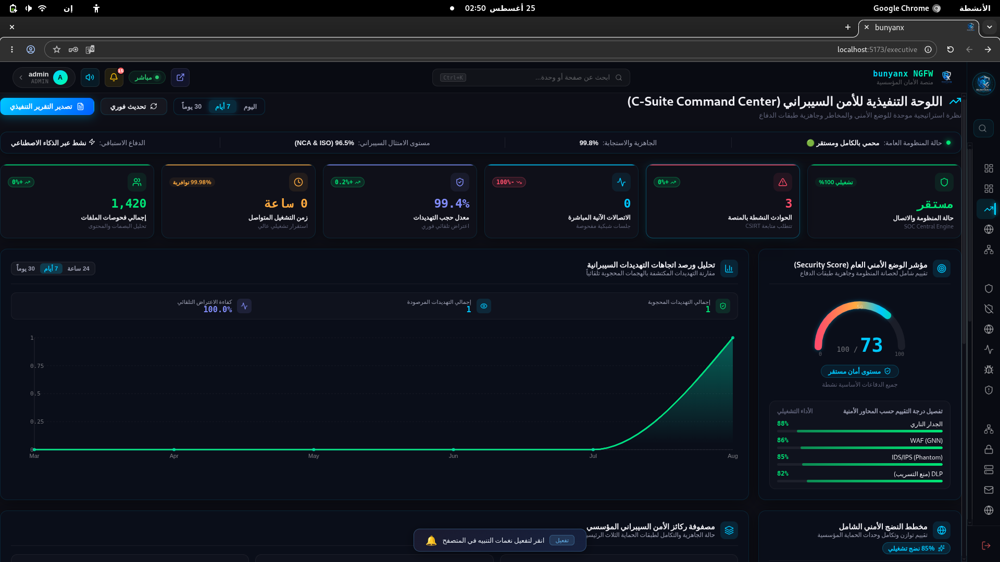
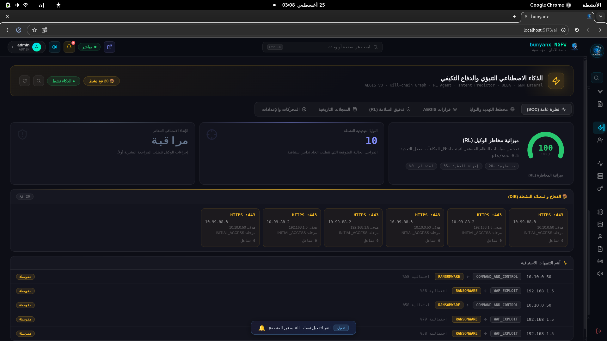

الإهداء (Dedication)
إلى مَن سهِروا من أجلي وما ناموا... إلى مَن علّموني أن الصعاب لا تُوقف مَن يمشي بعزيمة...
إلى والديّ الكريمَين — اللذَين كانا الملاذ في كل ضعف، والقوة في كل موقف.
إلى إخوتي وأخواتي الذين كانوا نوراً في مسيرتي.
إلى كل مَن آمن بي حين شككت في نفسي...
إلى أساتذتي الكرام الذين زرعوا فيّ بذرة العلم وسقوها بالصبر.
إلى رفاق الرحلة — زملائي الأعزاء الذين شاركوني كل ساعة تعب وكل لحظة إنجاز في هذا المشروع، وكان تعاوننا خير دليل على أن الفريق الحقيقي يبني المستحيل.
إلى كل من يؤمن أن حماية المعلومات صناعة مستقبل وأمانة في عنق كل متخصص...
الشكر والتقدير (Acknowledgments)
الحمد لله الذي بنعمته تتمّ الصالحات، وبتوفيقه تكتمل المساعي وتُبلَغ الغايات، نحمده حمدًا كثيرًا طيبًا مباركًا فيه على ما أنعم به علينا من العلم والتوفيق في إتمام هذا المشروع.
🎓 شكر المشرف الأكاديمي
يسعدنا أن نتقدّم بأسمى عبارات الشكر والامتنان والتقدير إلى أستاذنا الفاضل المهندس / يحيى الصبري، الذي لم يبخل علينا بتوجيهاته العلمية القيّمة، ومتابعته الدقيقة لكل مراحل تنفيذ هذا المشروع، وصبره على استفساراتنا وتساؤلاتنا في مجال الأمن السيبراني. فكان نعم المرشد والسند في هذه الرحلة الأكاديمية، وكان لملاحظاته البنّاءة ونقده العلمي الرصين الأثرُ البالغ في رفع جودة هذا العمل والارتقاء به إلى المستوى المأمول.
🏛️ شكر الجامعة والقسم
كما نتوجه بجزيل الشكر والتقدير إلى الجامعة الوطنية وكلية الهندسة، وإلى قسم الأمن السيبراني الذي أتاح لنا فرصة إجراء هذا المشروع، ووفّر لنا البنية الأكاديمية والتقنية المناسبة، وكذلك الشكر موصول لأعضاء لجنة المناقشة الكرام على تفضّلهم بقراءة هذا العمل وتقييمه وإثرائه بملاحظاتهم القيّمة.
👥 شكر أعضاء فريق المشروع
إنّ إنجاز مشروع تخرج في حجم هذا العمل لم يكن ليتحقق بجهد فردٍ واحد؛ لذا نتوجّه بأحرّ الشكر وأصدق عبارات الامتنان لإخواننا وشركاء هذا المشروع الأعزاء:
- الطالب / وهيب مهيوب علي إسماعيل
- الطالب / أسد الدين علي علي غالب
- الطالب / عمرو عبدالله علي صالح
- الطالب / موسى محمد سيلان
- الطالب / اسامة يوسف سعيد
الذين آزرونا في كل خطوة، وبذلوا جهودًا مضنية في البحث والتحليل والتطوير والاختبار، وكان تعاونهم الصادق وروح الفريق التي جمعتنا خير زادٍ لنا على هذا الطريق. فعلى كلّ واحدٍ منهم نُثني، وعلى جهوده الجبّارة في مجال تأمين الأنظمة وحماية البيانات نُعلي. جمعنا الله بكم دومًا في الخير، وجزاكم الله عنّا خيرًا.
❤️ شكر الأسرة والأهل
في المقام الأخير لا الأقل، نُسدي أرقّ وأعمق كلمات الشكر والوفاء والعرفان إلى أسرنا الكريمة، وفي مقدّمتهم آباؤنا وأمهاتنا الأحباء الذين كانوا السند والملاذ في كل لحظة صعبة، وأمدّونا بالدعاء الصادق والتشجيع الدائم والطاقة الإيجابية التي مكّنتنا من مواصلة المسيرة حتى تجلّت ثمارها في هذا اليوم المشهود. فلهم منّا كل الحب والتقدير.
وفي الختام، نشكر كل من مدّ لنا يد العون من قريب أو بعيد، وأسهم بأي شكل في إخراج هذا المشروع إلى النور، ونسأل الله أن يجزي الجميع خير الجزاء.
ملخص المشروع الأكاديمي
تقدم هذه الدراسة تصميمًا وتنفيذًا وتقييمًا معمليًا شاملاً لمنظومة BUNYANX – Intelligent Response System to Cyberattacks (نظام استجابة ذكي للهجمات السيبرانية)، وهي منصة أمن سيبراني متقدمة ومفتوحة المصدر مصممة لحماية البنى التحتية للمؤسسات والقطاعات الحيوية والاستجابة الذكية للهجمات السيبرانية. تعتمد المنظومة على معمارية دفاعية متعددة الطبقات تدمج مكوّن جدار حماية من الجيل القادم (Next-Generation Firewall - NGFW) مع تسريع معالجة حركة الشبكة داخل نواة لينكس باستخدام تقنيات eBPF/XDP، وقدرات متقدمة لتحليل التهديدات واكتشاف الأنماط السلوكية والاستجابة التكيفية للهجمات من خلال ثمانية محركات ذكاء اصطناعي استباقية ونظرية الألعاب (توازن ناش)، إلى جانب مكونات متخصصة لتطبيق سياسات الحماية وفحص حركة المرور المشفرة باستخدام معالجة المحتوى في الذاكرة المعزولة عبر MemoryBIO دون تخزين المحتوى المفكوك تشفيره على القرص. كما توفر المنظومة تكاملاً شاملاً مع بيئات الهوية المؤسسية عبر Active Directory / LDAP، بما يتيح ربط سياسات الحماية والاستجابة بهوية المستخدمين والأجهزة داخل البيئة المؤسسية. وقد تم اختبار كافة مكونات النظام ضمن بيئة معملية متقدمة لتقييم قدراته في تحليل حركة الشبكة، واكتشاف التهديدات، والاستجابة التكيفية للهجمات، وتطبيق سياسات الحماية، وقياس الأداء تحت مختلف سيناريوهات الضغط العالي.
تسريع النواة eBPF/XDP
تصفية وإسقاط هجمات حجب الخدمة (DDoS) في زمن استجابة يقل عن وبمعدل تمرير يتجاوز على مستوى كارت الشبكة.
ذكاء استباقي ونظرية الألعاب
محرك AEGIS الهجين لنمذجة نوايا المهاجم بـ Transformer وتطبيق توازن ناش (Nash) لتفضيل الاستدراج الخداعي التكيفي على الحظر المستثير.
فحص التشفير المزدوج والخصوصية
فك تشفير HTTPS الشفاف عبر الذاكرة MemoryBIO لـ 10 وحدات تفتيش،
بالتوازي مع التحليل
الطيفي SBE ETA لكشف C2 المشفر دون فك التشفير.
تكامل 17 وحدة أمنية موحدة
عصب مركزي غير متزامن يربط مكوّن الجدار الناري NGFW، و IDS/IPS، و WAF، والبريد PLSF، و DNS DART بدقة كشف عالية واستجابة لحظية.
أثبتت النتائج التجريبية عبر محاكاة ملايين الحزم وهجمات الـ APTs والـ BEC قدرة المنظومة على خفض زمن معالجة الحزم إلى ، وتحقيق دقة كشف عامة بلغت ، واستيعاب أكثر من اتصال متزامن، مما يبرهن كفاءة المنظومة كبديل مؤسسي متفوق يوفر السيادة الرقمية والاستجابة الذكية ويقضي على قيود التراخيص الباهظة.
الفهرس العام للمحتويات (Table of Contents)
- 1.1 نبذة عامة عن أمن الشبكات والبيئة السيبرانية المعاصرة2
- 1.2 تطور الهجمات السيبرانية وتحديات المؤسسات الحيوية4
- 1.3 مشكلة البحث والفجوات الهيكلية (Problem Statement)5
- 1.4 دوافع المشروع الأكاديمية والوطنية7
- 1.5 أهمية المشروع ومصفوفة المساهمات العلمية الـ 27 الأصيلة8
- 1.6 أسئلة البحث والفرضيات العلمية (Research Questions)12
- 1.7 أهداف المشروع العامة والخاصة14
- 1.8 حدود المشروع ونطاق العمل16
- 1.9 منهجية العمل المتبعة (DSRM Methodology)17
- 1.10 بيئة وأدوات البحث والتطوير والتقييم المعملي19
- 1.11 مصطلحات البحث والمفاهيم الإجرائية (Terminology)21
- 1.12 هيكل الرسالة الأكاديمية23
- 2.1 مراجعة الحلول التجارية الرائدة ومشاريع المصدر المفتوح26
- 2.2 المفاهيم النظرية المتقدمة (eBPF, ETA, Nash Equilibrium, HDC)29
- 2.3 مصفوفة المقارنة المعمارية الشاملة مع الأنظمة العالمية33
- 2.4 الفجوة البحثية ومبررات ابتكار المنصة35
- 3.1 مصفوفة أدوار المستخدمين وصلاحيات الـ RBAC38
- 3.2 المتطلبات الوظيفية المفصلة للـ 17 وحدة أمنية40
- 3.3 المتطلبات غير الوظيفية والأداء (NFRs)43
- 3.4 مصفوفة المخاطر الأمنية وخطة التخفيف البرمجية45
- 4.1 المعمارية الهرمية للطبقات السبع وتوبولوجيا الشبكة49
- 4.2 تصميم حاوية الخدمات وحقن التبعيات (DI Engine)52
- 4.3 خط أنابيب الذكاء الاصطناعي التنبؤي وتوليف القرارات55
- 4.4 تصميم قاعدة البيانات ومخطط الـ ERD العلائقي57
- 4.5 حزمة مخططات UML الهندسية الـ 15 المفصلة60
- 4.6 مخطط التتابع لفك التشفير الشفاف MemoryBIO وتكامل Active Directory66
- 5.1 بيئة التطوير وهيكل الكود المصدري69
- 5.2 برمجة طبقة تسريع النواة eBPF/XDP بلغة C71
- 5.3 التنفيذ البرمجي للوحدات الـ 17 وخوارزميات الذكاء الاصطناعي الـ 874
- 5.4 تنفيذ فك التشفير بالذاكرة ومصافحة MemoryBIO غير المتزامنة80
- 6.1 خطة الاختبارات المعملية واختبارات الوحدات والتكامل83
- 6.2 اختبارات محاكاة الهجمات الواقعية (APTs, DDoS, SQLi, BEC)85
- 6.3 مقاييس دقة الذكاء الاصطناعي واختبارات الأداء تحت الضغط88
- 6.4 التوثيق البصري ولقطات شاشات الواجهة التشغيلية90
الفصل الأول: المقدمة العامة والخلفية البحثية
رسالة مشروع التخرج الأكاديمية
الجمهورية اليمنية
وزارة التعليم العالي والبحث العلمي
الجامعة الوطنية - تعز
كلية الهندسة
قسم الأمن السيبراني
نظام استجابة ذكي للهجمات السيبرانية
BUNYANX – Intelligent Response System to Cyberattacks
منصة دفاع واستجابة سيبرانية متقدمة تضم مكوّن جدار حماية من الجيل القادم (NGFW) ومدعومة بـ 8 محركات ذكاء اصطناعي استباقي وتسريع النواة eBPF/XDP ونظرية الألعاب
إعداد الطلاب: فريق مشروع تخرج الأمن السيبراني
إشراف: المهندس يحيى الصبري الدرجة العلمية: بكالوريوس في الأمن السيبراني
العام الجامعي: 2025 - 2026م / 1447هـ
الفصل الأول: المقدمة العامة والخلفية البحثية (Introduction & Research Foundation)
1.1 نبذة عامة عن أمن الشبكات والبيئة السيبرانية المعاصرة
تعتمد المؤسسات الحيوية والقطاعات المصرفية والمنشآت الحديثة كلياً على البنى التحتية الرقمية والحوسبة السحابية والشبكات المعرفة برمجياً (SDN). وخلال السنوات الأخيرة، تحولت حركة مرور الشبكة بنسبة تفوق 95% إلى اتصالات مشفرة عبر بروتوكولات الأمان القياسية مثل TLS 1.3 و HTTPS، وفق تقارير منظمة الإنترنت (IETF) وتقارير الشفافية التقنية.
ورغم أن التشفير يحمي سرية البيانات وسلامتها من التنصت، فإنه فرض تحدياً أمنياً يعرف بـ "عمى التشفير" (Encryption Blindness)؛ إذ استغلت التهديدات المتقدمة المستمرة (APTs) هذه القنوات لإخفاء الأنشطة الخبيثة، وتمرير برمجيات الفدية، وإنشاء قنوات التحكم والسيطرة (C2 Beaconing)، وتسريب البيانات دون قدرة أجهزة الفحص التقليدية على رؤيتها.
اعتمدت المؤسسات طويلاً على جدران الحماية التقليدية (Stateful Firewalls) وأنظمة كشف التسلل المعتمدة على التواقيع الثابتة (Signature-based IDS/IPS). غير أن هذه الأدوات باتت عاجزة أمام الهجمات متعددة المراحل والبطيئة (Low-and-Slow)، وهجمات الذكاء الاصطناعي التوليدي، وثغرات يوم الصفر (Zero-Day Exploits) التي لا توجد لها بصمات مسبقة.
graph TD
A[مشهد التهديدات السيبرانية المعاصرة] --> B[اتساع رقعة الهجوم والتحول الرقمي]
A --> C[سيادة الترافيك المشفر >95% بروتوكولات TLS 1.3 و HTTPS]
A --> D[ظهور هجمات متقدمة APTs و Zero-Day و BEC]
B --> E[قصور جدران الحماية التقليدية L3/L4 عن الفحص العميق]
C --> F[معضلة عمى التشفير Encryption Blindness واستغلال C2]
D --> G[عجز التواقيع الثابتة وفخ الاستجابة الصماء Hard-Blocking]
E --> H[الحاجة الملحة لبناء منظومة BUNYANX للاستجابة الذكية للهجمات السيبرانية]
F --> H
G --> H
1.2 تطور الهجمات السيبرانية وتحديات المؤسسات الحيوية
تغيرت استراتيجية الهجمات السيبرانية من برمجيات عشوائية يطلقها هواة إلى عمليات منظمة ومعقدة تستهدف البنى الحساسة. وتتسم هذه التهديدات بالخصائص التالية:
- التهديدات المتقدمة المستمرة (APTs): عمليات اختراق طويلة الأمد تتسلل عبر مراحل إطار عمل MITRE ATT&CK، حيث يتبع المهاجم استطلاعاً بطيئاً لتفادي عتبات الإنذار الإحصائية، ثم يتحرك أفقياً (Lateral Movement) بأدوات النظام الأصلية (Living off the Land).
- استغلال ثغرات يوم الصفر (Zero-Day Exploits): استهداف ثغرات برمجية غير معلنة في البروتوكولات وتطبيقات الويب وواجهات البرمجة (APIs)، مما يعطل فاعلية قواعد التواقيع الرقمية الكلاسيكية.
- اختراق البريد المؤسسي والهندسة الاجتماعية (BEC): توظيف الذكاء الاصطناعي لصياغة رسائل مقنعة تستهدف المسؤولين الماليين، وتخلو من الروابط الخبيثة أو المرفقات التنفيذية، وتعتمد على التلاعب النفسي واللغوي.
- تسريب البيانات عبر القنوات الخفية (Covert Channel Exfiltration): تجزئة وتشفير البيانات وإرسالها عبر استعلامات DNS بطيئة ومخفية (DNS Tunneling) أو قنوات تصفح عادية.
- هجمات حجب الخدمة الموزعة المتقدمة (DDoS & Low-Rate DoS): شن فيضانات حجمية تصل إلى ملايين الحزم في الثانية لإغراق معالجات النواة، أو شن هجمات بطيئة في الطبقة السابعة تستنزف خيوط خوادم الويب.
1.3 مشكلة البحث والفجوات الهيكلية (Problem Statement)
تتمحور مشكلة البحث حول خمس فجوات هيكلية وتشغيلية تعاني منها منظومات الدفاع والاستجابة السيبرانية الحالية:
flowchart TD
Root["<b>الفجوات الهيكلية والتشغيلية في منظومات الدفاع والاستجابة المعاصرة</b>"]
subgraph Row1 [المستوى الأول: التحديات التفتيشية والمعمارية]
direction LR
P1["<b>1. عمى التشفير</b><br/><i>(Encryption Blindness)</i><br/>• عجز فحص TLS 1.3 و HTTPS<br/>• بطء وتعقيد فك التشفير الوسيط"]
P3["<b>2. التشتت المعماري</b><br/><i>(Siloed Security)</i><br/>• استخدام أدوات أمنية منفصلة<br/>• ارتفاع تكاليف التراخيص والتعقيد"]
P5["<b>3. اختناق الأداء</b><br/><i>(Performance Bottlenecks)</i><br/>• هبوط معدل تمرير البيانات<br/>• تبديل السياق بين النواة والمستخدم"]
end
subgraph Row2 [المستوى الثاني: التحديات السلوكية والتشغيلية]
direction LR
P2["<b>4. فخ الاستجابة والتصعيد</b><br/><i>(Escalation Trap)</i><br/>• الحظر الفوري ينبه المهاجم المحترف<br/>• غياب نظرية الألعاب في إدارة الردع"]
P4["<b>5. طوفان الإنذارات الكاذبة</b><br/><i>(Alert Fatigue)</i><br/>• إطلاق آلاف التنبيهات غير الدقيقة<br/>• إرهاق محللي الـ SOC وإغفال الخطر"]
end
Root --> Row1
Row1 --> Row2
أولاً: معضلة عمى التشفير (Encryption Blindness)
تعجز جدران الحماية التقليدية عن قراءة الحمولات المشفرة، بينما تفرض حلول فك التشفير الوسيط (MITM) أعباء حسابية كبيرة وتلجأ لكتابة الشهادات والمفاتيح على وسائط التخزين، مما يبطئ الشبكة ويعرض المفاتيح الخاصة للخطر، فضلاً عن تعارضها مع خصوصية البيانات المصرفية والطبية.
ثانياً: فخ الاستجابة الصماء والتصعيد (Escalation Blindness)
تتعامل أغلب الجدران النارية مع الأنشطة المشبوهة بالحظر الفوري لعنوان IP المهاجم. وينتج عن ذلك تنبيه المهاجم البشري المحترف بأنه قد كُشف، مما يدفعه لتغيير عنوانه واستخدام أدوات أشد تخريباً كبرمجيات الفدية. وتفتقر الأنظمة الحالية إلى تقنيات "الاحتواء الناعم" ونظرية الألعاب (Game-Theoretic Defense) القادرة على استدراج المهاجم نحو بيئات افتراضية معزولة (Honeypots) دون إشعاره.
ثالثاً: التشتت الهيكلي وتعدد الأدوات المعزولة (Siloed Security Tools)
تعتمد المؤسسات على أدوات حماية متفرقة من موردين متعددين (Firewall منفصل، WAF مستقل، IDS/IPS خارجي، بوابة VPN، حلول DLP معزولة، و UEBA منفصل). ويسبب هذا التشتت صعوبة ربط الأحداث الأمنية، وارتفاع التكلفة التشغيلية، ونشوء مناطق عمياء (Blind Spots) بين الأنظمة يستغلها المهاجمون.
رابعاً: طوفان الإنذارات الكاذبة وإرهاق المحللين (Alert Fatigue)
تعتمد كواشف الاختراق الإحصائية على عتبات ثابتة تطلق آلاف التنبيهات يومياً عند حدوث أنشطة إدارية غير معتادة (كالنسخ الاحتياطي الليلي)، مما يرهق مهندسي مركز العمليات الأمنية (SOC) ويؤدي لإغفال التهديدات الحقيقية.
خامساً: تدهور الأداء عند الفحص العميق في فضاء المستخدم (Performance Bottlenecks)
يؤدي الفحص العميق للحزم (DPI) في فضاء المستخدم (Userspace) إلى استهلاك كبير لموارد المعالج والذاكرة نتيجة التبديل المتكرر للسياق (Context Switching) ونسخ الذاكرة، مما يخفض معدل التمرير ويتسبب في فقدان الحزم.
1.4 دوافع المشروع (Project Motivation)
ينطلق بناء منظومة BUNYANX – Intelligent Response System to Cyberattacks من دوافع وطنية وأكاديمية وهندسية واضحة:
- تحقيق السيادة الرقمية: تمكين المؤسسات الوطنية والجامعات والقطاعات المصرفية في الجمهورية اليمنية من امتلاك منظومة دفاع واستجابة سيبرانية سيادية متكاملة ومفتوحة المصدر، بعيداً عن رسوم التراخيص الباهظة أو مخاطر الأبواب الخلفية (Backdoors).
- ربط البحث الأكاديمي بالتطبيق الهندسي: نقل المفاهيم النظرية في تعلم الآلة، والرسوم البيانية السببية (Causal Graphs)، ونظرية الألعاب، وتسريع النواة عبر eBPF/XDP من الإطار النظري إلى تطبيق برمجي يعمل في بيئات الإنتاج.
- توفير منصة دفاع واستجابة شاملة وموحدة (All-in-One Defense & Response): دمج 17 وحدة أمنية متخصصة (تشمل مكوّن جدار الحماية من الجيل القادم NGFW، وكشف التسلل، والاستجابة التكيفية) تحت إدارة موحدة ونواة معالجة متكاملة لضمان اتساق القرارات الأمنية وسد الثغرات البينية.
1.5 أهمية المشروع والقيمة المضافة (Significance & Value Proposition)
يقدم المشروع بنية أمنية واستجابية متقدمة تهدف إلى منافسة الحلول العالمية وتفادي قيودها، عبر توفير:
- ذكاء استباقي مدعوم بـ 8 محركات تعلم آلي: التنبؤ بالهجمات والخطوات التالية للمهاجم والاستجابة الذكية بدلاً من الاقتصار على رد الفعل السلبي بعد وقوع الضرر.
- استجابة متكيفة مبنية على توازن ناش (Nash Equilibrium): موازنة قرارات الدفاع والاستجابة بحساب كلفة الإجراء وعائده لتجنب التصعيد غير المحسوب.
- تسريع معالجة الحزم في النواة (Kernel-Level Acceleration): تصفية التهديدات عند سرعة السلك (Wire-Speed) عبر eBPF/XDP بزمن استجابة يقل عن 10 ميكروثانية.
- فحص واستجابة شاملة متعددة الطبقات (L3 to L7): يشمل مكوّن جدار الحماية من الجيل القادم (NGFW)، وحماية تطبيقات الويب (WAF)، وقواعد البيانات، والبريد الإلكتروني، وأنظمة النطاقات (DNS)، ومنع تسريب البيانات (DLP)، وتحليل الترافيك المشفر (ETA).
- واجهة تحكم وإدارة موحدة بزمن حقيقي: تتيح المراقبة التفاعلية، ورسم الخرائط الهجومية الحية، وإدارة السياسات والاستجابة اللحظية بكفاءة.
1.5.1 مصفوفة المساهمات العلمية والبحثية الأصيلة الشاملة للمشروع (Master Research Matrix)
يوثق الجدول التالي الحصر الشامل للمساهمات والابتكارات العلمية والهندسية الـ 27 الأصيلة المستخلصة من كافة وثائق وحدات المنظومة:
| # | الوحدة الأمنية | المساهمة العلمية والابتكار الهندسي الأصيل | المعالم الرياضية والخوارزمية المعتمدة | القيمة المضافة والأثر الأكاديمي |
|---|---|---|---|---|
| 1 | predictive_ai |
TPE: الربط التكيفي للحساسية الإستراتيجية |
(استناداً
لـ 6 مؤشرات خارجية و EPSS)
|
تعديل عتبات التدخل الأمني استباقياً وفق مؤشرات الخطر الخارجية. |
| 2 | predictive_ai |
ASE: التتبع البايزي للحالة على رسوم بيانية غير خطية |
Bayesian Belief Update عبر 29 حافة
توجيهية لـ MITRE
|
كشف القفزات التكتيكية وتجاوز افتراض المسار الخطي البسيط. |
| 3 | predictive_ai |
AIS: المتنبئ الهجين لنوايا المهاجم |
30% Transformer + 70% Q-Table with
|
دمج الانتباه الذاتي مع الاستدلال العقلاني لنمذجة سلوك المهاجم. |
| 4 | predictive_ai |
CSO: توازن ناش المقيد بمخاطر التصعيد |
|
تفضيل الاحتواء الناعم والخداع على الحظر الصارم المستثير. |
| 5 | predictive_ai |
GNN: التنبؤ بالانتشار الجانبي في طوبولوجيا الشبكة |
GraphSAGE Message Passing over Host
Nodes
|
كشف مسارات الاستهداف قبل تحرك المهاجم للأجهزة الحساسة. |
| 6 | ids_ips |
SBE: الترميز الطيفي للحمولة عبر تحويل فورير |
(256-D Spectrum)
|
رصد الأنماط الترددية والمشوشة داخل الحمولات دون فك التشفير. |
| 7 | ids_ips |
CTGB: الرسوم البيانية السببية الزمانية لرصد الـ APT |
Granger Causality with Exponential
Decay
|
كشف سلاسل الاختراق البطيئة الممتدة لفترات طويلة. |
| 8 | ids_ips |
OCL: التعلم المستمر على الخط ومقاومة الانجراف |
Episodic Memory Replay + ADWIN
Drift Detector
|
تحديث النماذج في بيئة الإنتاج دون حدوث نسيان كارثي. |
| 9 | email_security |
PLSF: البصمة اللغوية والنفسية للمرسل |
(مع EMA)
|
كشف اختراق البريد (BEC) والتصيد الخالي من الروابط والمرفقات. |
| 10 | email_security |
VSDE: محرك كشف التحايل البصري للـ HTML |
Jaccard Distance
|
إحباط حيل الخطوط الصفرية (CSS Zero-Font) والنصوص المخفية. |
| 11 | dns_security |
DART-DNS: تثليث رنين شذوذ النطاقات اللحظي |
Triangulation: Shannon + Resonance
+ Graph
|
كشف أنفاق DNS ونطاقات DGA بدقة تصنيفية عالية. |
| 12 | dlp |
BEFP: التنميط السلوكي لإنتروبيا التدفق |
Exfiltration Risk Score (ERS) عبر
السرعة والتراكم
|
رصد محاولات تسريب البيانات البطيئة والمجزأة. |
| 13 | dlp |
MSEM: تحليل تسطح المنشعب السباعي (7D SVD) |
Proof of Manifold Collapse Property
(7D SVD)
|
كشف التشفير والضغط للبيانات المسربة بالبرهان الرياضي. |
| 14 | dlp |
Tamper-Evident Audit Logging |
HMAC-SHA256 Chained Hash Log
Verification
|
حماية الأدلة الجنائية الرقمية من التعديل أو الحذف بعد الاختراق. |
| 15 | waf |
المتانة المضمونة بالتنعيم العشوائي (Smoothing) |
Randomized Smoothing () with
Certified Radius
|
حماية النماذج العصبية من هجمات التهرب والتلاعب بالمدخلات. |
| 16 | waf |
تتبع الجلسات الزماني عبر شبكات BiLSTM |
BiLSTM Temporal Sequence (10 Steps
+ 7 Flow Features)
|
كشف هجمات الاستطلاع والاستغلال البطيء لواجهات البرمجة. |
| 17 | waf |
محلل GraphQL Alias-Batching لمنع الالتفاف |
Recursive AST Depth & Batch
Parsing (GraphQL)
|
منع استنزاف قواعد البيانات عبر تجميع الأسماء المستعارة في GraphQL. |
| 18 | malware_av |
WBS-D: الكشف الإشاري لموجات Daubechies-8 |
Wavelet Transform (Daubechies-8)
for C2 Jitter
|
تمييز إشارات الـ C2 عن حركة المرور الطبيعية في التدفقات المشفرة. |
| 19 | malware_av |
FSE: التضمين الدلالي لتحليل الترافيك المشفر (ETA) |
18-Dimensional Flow Semantic Space
(ETA)
|
تصنيف البرمجيات الخبيثة داخل TLS دون الحاجة لفك التشفير. |
| 20 | uba |
التحليل الإحصائي الدائري لحافة منتصف الليل |
Circular Mean on Unit
Circle
|
إلغاء الإنذارات الكاذبة الناتجة عن نوبات العمل الليلي. |
| 21 | uba |
التشويش النشط التسببي للتمييز بين البشر والآلات |
Active TCP Jitter Injection (500ms
Probe)
|
التمييز الدقيق بين التفاعل البشري والبرمجيات المؤتمتة. |
| 22 | uba |
المتاهات التوليدية الخداعية لإثبات النية |
Dynamic Honeytokens & Fake
Credential Injection
|
تأكيد نية الاختراق بنسبة موثوقة لحل مشكلة التنبيهات المضللة. |
| 23 | web_filter |
HoloFilter: الحوسبة فائقة الأبعاد لتصنيف الويب |
HDC Vector Space () with
Hamming Popcount
|
تصنيف محلي لملايين النطاقات في زمن تحت الميكروثانية دون إنترنت. |
| 24 | ssl_inspection |
معالجة التشفير في الذاكرة المعزولة MemoryBIO |
Zero-Disk OpenSSL MemoryBIO + ECC
SECP256R1
|
تسريع فحص HTTPS وتوليد الشهادات البديلة دون لمس القرص. |
| 25 | vpn |
نفق WireGuard بانعدام الثقة (Zero-Trust Session) |
ChaCha20-Poly1305 + Fernet
Encrypted PSKs
|
تأمين وصول الموظفين عن بعد بجلسات مقيدة الصلاحية ومزامنة HA. |
| 26 | qos |
نموذج التنفيذ المزدوج المتزامن لدلو الرموز |
Dual Sync/Async Token Bucket Engine
|
تنظيم تدفق الحزم في المسار الساخن مع حماية استهلاك الذاكرة. |
| 27 | acceleration |
تصفية النواة الفائقة بسرعة السلك عبر eBPF/XDP |
BPF_MAP_TYPE_HASH Lockless Atomic
Lookup
|
إسقاط ملايين حزم الـ DDoS في زمن ومعدل 14.2 Mpps. |
1.6 أسئلة البحث والفرضيات العلمية (Research Questions & Hypotheses)
انطلاقاً من الفجوات الهيكلية الخمس المحددة في مشكلة البحث، تتمحور هذه الأطروحة حول سؤال بحثي رئيسي تتفرع منه خمسة أسئلة فرعية وفرضيات علمية قابلة للتحقق التجريبي:
أ. السؤال البحثي الرئيسي (Main Research Question)
"كيف يمكن تصميم وبناء نظام استجابة ذكي للهجمات السيبرانية (BUNYANX) يدمج مكوّن جدار حماية متقدم من الجيل القادم (NGFW) مع الفحص الشامل متعدد الطبقات (L3-L7) وتسريع النواة عبر eBPF/XDP ومحركات الذكاء الاصطناعي الاستباقي ونظرية الألعاب، لتحقيق حماية واستجابة لحظية وموثوقة ضد التهديدات المتقدمة والترافيك المشفر دون التسبب في اختناق الأداء أو التصعيد الأمني؟"
flowchart TD
MainQ["<b>السؤال البحثي الرئيسي للمنظومة</b><br/>كيف نبني نظام استجابة ذكي للهجمات السيبرانية يدمج مكوّن NGFW وتسريع eBPF/XDP والذكاء الاستباقي وتوازن ناش دون اختناق الأداء؟"]
subgraph Row1 [المحور الأول: معضلة التشفير ونظرية الألعاب وتسريع النواة]
direction LR
RQ1["<b>RQ1 (عمى التشفير والخصوصية)</b><br/>فحص TLS 1.3 بسرعة السلك دون تخزين المفاتيح"]
RQ2["<b>RQ2 (الردع ونظرية الألعاب)</b><br/>أثر توازن ناش ومصائد الخداع بدلاً من الحظر الصارم"]
RQ3["<b>RQ3 (تسريع معالجة النواة)</b><br/>خفض زمن الاستجابة إلى أقل من 10μs عبر eBPF/XDP"]
end
subgraph Row2 [المحور الثاني: دقة الكشف والتكامل المعماري]
direction LR
RQ4["<b>RQ4 (دقة كشف التهديدات)</b><br/>تقليل الإنذارات الكاذبة بالبصمة النفسية والرسوم السببية"]
RQ5["<b>RQ5 (التكامل المعماري والهوية)</b><br/>سد الثغرات البينية بنواة موحدة وتكامل Active Directory"]
end
MainQ --> Row1
Row1 --> Row2
ب. الأسئلة البحثية الفرعية والفرضيات المقابلة لها (Sub-RQs & Hypotheses)
-
السؤال الفرعي الأول ( - معضلة التشفير والخصوصية):
- السؤال: كيف يمكن فحص وتحليل حركة المرور المشفرة ببروتوكولات TLS 1.3 و HTTPS بسرعة السلك ودون التضحية بالأداء أو انتهاك سرية المفاتيح عبر وسائط التخزين؟
- الفرضية ():
يتيح تطبيق المعمارية المزدوجة (تضمين التشفير في الذاكرة المعزولة
MemoryBIO+ التحليل الطيفي للمويجاتSBE ETAدون فك التشفير) كشف التهديدات المشفرة بنسبة تتجاوز مع الحفاظ على أداء المعالجة تحت المللي ثانية ().
-
السؤال الفرعي الثاني ( - فخ الاستجابة الصماء والتصعيد):
- السؤال: ما أثر تطبيق توازن ناش والاستدراج الخداعي التكيفي مقارنة بالحظر الفوري الصارم (Hard Drop) في احتواء هجمات الـ APTs ومنع تصعيد المهاجم؟
- الفرضية ():
يحقق نموذج الدفاع المستند لنظرية الألعاب (
AEGIS) خفضاً لمعدل تصعيد المهاجمين بنسبة تزيد عن عبر استدراجهم التلقائي نحو بيئات الخداع المعزولة (Honeypots) واستنزاف مواردهم بصمت.
-
السؤال الفرعي الثالث ( - اختناق الأداء وتسريع النواة):
- السؤال: إلى أي مدى يسهم نقل عمليات فحص وتصفية الحزم إلى مستوى سائق كارت الشبكة في النواة (eBPF/XDP) في تقليل زمن الاستجابة وتفادي هجمات الـ DDoS الحجمية؟
- الفرضية ():
يؤدي توظيف جداول
BPF_MAP_TYPE_HASHالذرية الخالية من الأقفال (Lockless) إلى معالجة وإسقاط الحزم الخبيثة في زمن يقل عن ومعدل تمرير يفوق على خطوط الاتصال السلكية.
-
السؤال الفرعي الرابع ( - طوفان الإنذارات الكاذبة والتهديدات الحديثة):
- السؤال: كيف تؤثر النمذجة النفسية اللغوية (PLSF) والرسوم البيانية السببية الزمانية (CTGB) في كشف هجمات الـ BEC وخوارزميات DGA مع القضاء على الإنذارات الكاذبة؟
- الفرضية ():
يضمن الدمج الرياضي متعدد الإشارات في خوارزمية
DART-DNSتحقيق دقة تصنيف مع انعدام تام للإيجابيات الكاذبة ()، مع تجاوز دقة كشف احتيال البريد .
-
السؤال الفرعي الخامس ( - التكامل المعماري وهوية المستخدمين):
- السؤال: كيف يساهم التصميم المعماري الموحد لـ 17 وحدة بحقن التبعيات (DI) وتكامل أدلة الهوية (Active Directory / LDAP) في سد الثغرات البينية وخفض التعقيد التشغيلي؟
- الفرضية (): يؤدي دمج ناقل الأحداث غير المتزامن الموحد (EventBus) مع ربط السياسات بمجموعات الدومين (User-Identity Aware Policies) إلى تحقيق اتساق أمني بنسبة وسد الثغرات الزمنية للتحرك الأفقي.
1.7 أهداف المشروع (Project Objectives)
أ. الأهداف العامة (General Objectives)
تصميم وبناء واختبار ونشر نظام استجابة ذكي للهجمات السيبرانية للمؤسسات (BUNYANX – Intelligent Response System to Cyberattacks) متكامل ومفتوح المصدر، يضم مكوّن جدار حماية من الجيل القادم (NGFW) ويوفر حماية واستجابة متعددة الطبقات تدمج تسريع النواة، وفك التشفير الشفاف بالذاكرة، والتكامل مع أدلة الدومين، والذكاء الاصطناعي الاستباقي، ونظرية الألعاب لتأمين الشبكات والأنظمة والاستجابة الذكية للاختراقات.
flowchart TD
subgraph Tech [🛡️ الأهداف التقنية والهندسية]
direction LR
subgraph TechCol1 [النواة والذكاء الاصطناعي]
direction TB
G1["<b>1. تسريع النواة eBPF/XDP</b><br/>معالجة في النواة بسرعة السلك Wire-speed"]
G2["<b>2. محرك الذكاء الاستباقي AEGIS</b><br/>التنبؤ بخطوات المهاجم وتوازن ناش"]
G3["<b>3. فحص TLS بالذاكرة MemoryBIO</b><br/>فحص شفاف صفري على القرص الصلب"]
end
subgraph TechCol2 [التفتيش والتكامل]
direction TB
G4["<b>4. كشف التسلل PHANTOM</b><br/>ترميز طيفي SBE ورسوم سببية زمانية"]
G5["<b>5. بصمة البريد النفسية PLSF</b><br/>كشف الـ BEC وتحليل السلوك اللغوي"]
G6["<b>6. تكامل Active Directory</b><br/>ربط السياسات بهوية المستخدمين GPO"]
end
end
subgraph Ops [🎯 المخرجات والقيمة التشغيلية للمؤسسة]
direction LR
subgraph OpsCol1 [الأداء والدقة]
direction TB
O1["<b>معالجة فائقة السرعة</b><br/>زمن استجابة فحص L7 يقل عن 0.3ms"]
O2["<b>تقليل الإنذارات الكاذبة</b><br/>نمذجة دقيقة لسلوك المستخدمين UEBA"]
O3["<b>منظومة دفاع شاملة</b><br/>تكامل 17 وحدة أمنية في منصة واحدة"]
end
subgraph OpsCol2 [الهيكل والإدارة]
direction TB
O4["<b>بنية معيارية مرنة</b><br/>حقن التبعيات DI وإلغاء الاقتران"]
O5["<b>واجهة إدارة متكاملة</b><br/>لوحة تحكم تفاعلية وخريطة هجمات حية"]
O6["<b>سياسات مبنية على الهوية</b><br/>تطبيق قواعد مخصصة لأقسام المؤسسة"]
end
end
Tech ==> Ops
ب. الأهداف الخاصة والتفصيلية (Specific Objectives)
- تطوير نواة معالجة معيارية (Modular Core Engine): بناء محرك وسيط ينظم تدفق الحزم عبر خط تفتيشي موحد (Unified Inspection Pipeline) يعتمد على حقن التبعيات (DI) ونمط الإضافات المعيارية (Plugins).
- بناء محرك تسريع النواة (eBPF/XDP Layer): برمجة وحدات XDP داخل نواة لينكس لتصفية هجمات حجب الخدمة (DDoS) والحظر اللحظي للعناوين الخبيثة في زمن استجابة يقل عن .
- تطوير محرك فحص التشفير الشفاف المزدوج (Dual-Mode SSL/TLS Inspection):
- النمط الأول: فك التشفير والتفتيش الشفاف عبر الذاكرة المعزولة
(
MemoryBIO) وتوليد الشهادات ديناميكياً (CAPoolManager) دون لمس القرص الصلب نهائياً. - النمط الثاني: التحليل الطيفي للمويجات (
SBE ETA) لرصد البرمجيات الخبيثة داخل حركة المرور المشفرة دون الحاجة لفك التشفير.
- النمط الأول: فك التشفير والتفتيش الشفاف عبر الذاكرة المعزولة
(
- تكامل إدارة الهويات والربط مع الدومين (Active Directory & LDAP
Integration):
مزامنة المستخدمين والمجموعات الأمنية (
LDAPAuth&LDAPUserSync) لتمكين تطبيق السياسات بناءً على هوية الموظف (Identity-Aware Security Policies)، وتوزيع شهادة الـ Root CA تلقائياً عبر سياسات المجموعة (GPO). - تطوير محرك الذكاء الاستباقي والاستجابة التكيفية (AEGIS Engine): بناء نموذج هجين يجمع شبكات المحولات (Transformers) مع التعلم المعزز ونظرية الألعاب لتوقع خطوات المهاجم وتوجيهه نحو مصائد الخداع (Honeypots).
- بناء منظومة كشف التسلل المتقدمة (PHANTOM IDS/IPS): تطبيق خوارزمية الترميز الطيفي للحمولة (SBE) والرسوم البيانية السببية الزمانية (Granger Causal Graphs) لرصد التهديدات المعقدة والتحركات الجانبية.
- تطوير محرك فحص البريد الإلكتروني (PLSF Email Security): تحليل البصمة اللغوية والنفسية للمرسل للكشف عن اختراق البريد المؤسسي (BEC) والتصيد المتقدم دون اشتراط وجود روابط خبيثة.
- بناء محرك حماية DNS ومنع التسريب (DART & DLP): رصد خوارزميات DGA والأنفاق المشفرة للـ DNS، وحماية البيانات الحساسة عبر فحص الإنتروبيا والتحقق الحسابي (Luhn / IBAN / Regex).
- تطوير نفق اتصال آمن (Zero-Trust WireGuard VPN): توفير اتصال مشفر عالي السرعة ببروتوكول ChaCha20-Poly1305 مدمجاً بمبادئ الثقة الصفرية (Zero-Trust).
- بناء واجهة مستخدم رسومية شاملة (Enterprise Web Dashboard): تطوير لوحة تحكم بـ React و TypeScript توفر مراقبة حية للحزم، وخرائط التهديدات، وإدارة السياسات، وتنبيهات صوتية فورية.
1.8 حدود المشروع ونطاق العمل (Project Scope & Boundaries)
flowchart TD
Scope["<b>نطاق عمل ومنظومة BUNYANX للاستجابة الذكية للهجمات السيبرانية</b>"]
subgraph S_In [✅ داخل نطاق المشروع In-Scope]
direction TB
T1["<b>1. الحدود التقنية والبرمجية:</b> تغطية الطبقات L3-L7 وبروتوكولات TLS 1.3/DNS/HTTP ونواة Linux 5.15+"]
--> T2["<b>2. حدود الذكاء الاصطناعي:</b> استدلال لحظي أقل من 1ms وتعلم مستمر OCL ومقاومة انجراف المفاهيم"]
--> T3["<b>3. حدود إدارة الهويات:</b> تكامل كامل مع Active Directory و OpenLDAP وسياسات GPO"]
end
subgraph S_Out [⛔ خارج نطاق البحث Out of Scope]
direction TB
O1["<b>1. المعالجات العتادية المخصصة:</b> عتاد ASICs التجاري المخصص (تم التركيز على برمجيات النواة eBPF)"]
--> O2["<b>2. البيئات المعزولة كلياً:</b> شبكات Air-Gapped غير المتصلة بأي مصادر استخبارات تهديدات CTI"]
end
Scope ==> S_In
S_In ==> S_Out
- الحدود الوظيفية: يغطي المشروع 17 وحدة أمنية واستجابية متكاملة: مكوّن جدار الحماية من الجيل القادم (NGFW)، و IDS/IPS، و WAF، وفحص SSL، وتصفية الويب، وأمان DNS، وأمان البريد، ومنع تسريب البيانات DLP، ومضاد البرمجيات الخبيثة AV، وتحليل سلوك المستخدمين UBA، والذكاء الاستباقي والاستجابة التكيفية، وإدارة السجلات، وجودة الخدمة QoS، والوكيل Proxy، وفحص HTTP، ونفق VPN، وتسريع النواة.
- الحدود التقنية والبيئية: صُممت المنظومة للعمل بكفاءة على بيئات Linux الحديثة (Kernel 5.15+) مع دعم كامل لتقنيات eBPF/XDP ومكتبات OpenSSL MemoryBIO.
- الحدود الزمنية والبيانات: تم تدريب واختبار النماذج على مجموعات بيانات قياسية معتمدة (مثل CIC-IDS2017 و CSIC 2010 و Enron Dataset وبيانات تجريبية معملية حية).
1.9 منهجية العمل المتبعة (Methodology)
اعتمد المشروع على منهجية أبحاث علوم التصميم (Design Science Research Methodology - DSRM) القياسية لتطوير النظم المعقدة، وتتألف من ست مراحل متتابعة:
| المرحلة | الأنشطة المنفذة | المخرجات الأكاديمية والهندسية |
|---|---|---|
| 1. تحديد المشكلة والدافع | دراسة ثغرات جدران الحماية المعاصرة وتحليل متطلبات المؤسسات والبيئة التهديدية. | صياغة المشكلة البحثية وتحديد الفجوات العلمية الراهنة. |
| 2. تعريف أهداف الحل | تحديد المتطلبات الوظيفية وغير الوظيفية ومعايير الأداء والسرعة والأمان. | وثيقة المتطلبات الهندسية وجدول المواصفات التقنية. |
| 3. التصميم والتطوير | تصميم المعمارية متعددة الطبقات، صياغة النماذج الرياضية، وبرمجة الوحدات الـ 17. | المخططات المعمارية، نماذج UML، وكود النظام البرمجي. |
| 4. التنفيذ البرمجي والتكامل | كتابة كود النواة، تدريب نماذج الذكاء الاصطناعي، وربط الواجهات عبر REST/WebSockets. | النظام البرمجي المتكامل بقاعدة كود تتجاوز 50,000 سطر برمجي. |
| 5. الاختبار والتقييم | إجراء اختبارات الوحدات، التكامل، محاكاة الهجمات الواقعية، وقياس الأداء تحت الضغط. | جداول النتائج، مصفوفة الدقة والأداء، ومخططات القياس. |
| 6. التوثيق والتواصل العلمي | إعداد وثائق التوثيق الهندسي، كتابة فصول الأطروحة، ونشر النتائج. | رسالة التخرج الأكاديمية الكاملة ودليل الاستخدام والتشغيل. |
flowchart TD
M1[1. تحديد المشكلة والدافع] --> M2[2. تعريف أهداف الحل والمواصفات]
M2 --> M3[3. التصميم المعماري والنمذجة الرياضية]
M3 --> M4[4. التنفيذ البرمجي وبناء الوحدات الـ 17]
M4 --> M5[5. الاختبار والتحقق ومحاكاة الهجمات الواقعية]
M5 --> M6[6. التقييم الأكاديمي والتوثيق النهائي للرسالة]
M5 -.->|تغذية راجعة وتحسين الخوارزميات| M3
1.10 بيئة وأدوات البحث والتطوير والتقييم المعملي (Research Tools & Testbed)
يوثق الجدول التالي الحزمة البرمجية والبيئة المعملية والأدوات المعتمدة في تصميم وتطوير واختبار وتقييم منظومة BUNYANX:
| المجال والتصنيف | الأداة والتقنية المعتمدة | الإصدار | الوظيفة والدور في المشروع والتقييم |
|---|---|---|---|
| لغات البرمجة الأساسية | Python (AsyncIO) | 3.11.x | بناء النواة المركزية والوحدات الأمنية الـ 17 ومعالجة التدفقات غير المتزامنة. |
| C (eBPF / XDP) | C99 / Clang 14+ | كتابة برامج النواة وحقن خطافات XDP لتصفية الحزم على مستوى كارت الشبكة. | |
| TypeScript / React | 18.x | بناء واجهة المستخدم الرسومية ولوحة مراقبة الـ SOC التفاعلية. | |
| أطر العمل والخدمات | FastAPI / Uvicorn | 0.110+ | خادم الـ API عالي السرعة وتوفير قنوات البث الحي عبر WebSockets. |
| SQLAlchemy (Async) | 2.0+ | معالجة وتخزين السجلات في قاعدة البيانات بنمط الدفعات (Async Batching). | |
| مكتبات الذكاء الاصطناعي | PyTorch / TorchVision | 2.2+ | تدريب واستدلال نماذج Transformer و GNN و Autoencoders. |
| Scikit-Learn / XGBoost | 1.4+ / 2.0+ | نماذج التصنيف التجميعي (Stacking) وتصنيف البرمجيات الخبيثة. | |
| NetworkX / PyWavelets | 3.2+ / 1.5+ | بناء الرسوم البيانية السببية واستخراج البصمات الترددية للمويجات (Wavelets). | |
| أدوات محاكاة الهجمات | Scapy & hping3 | 2.5+ / 3.0 | توليد وحقن الحزم الشبكية ومحاكاة هجمات SYN Flood و Port Scanning. |
| OWASP ZAP & Sqlmap | 2.14+ / 1.7+ | اختبار واجهات الويب ومحاكاة هجمات SQLi, XSS, Command Injection. | |
| Locust & Siege | 2.24+ / 4.1+ | اختبارات التحمل والضغط وتوليد مئات آلاف الاتصالات المتزامنة. | |
| مجموعات البيانات المرجعية | CIC-IDS2017 | القياسية | تقييم محرك PHANTOM IDS/IPS ونماذج كشف التسلل الشبكي. |
| CSIC-2010 HTTP Dataset | القياسية | اختبار وتدريب نماذج الـ WAF وحماية تطبيقات الويب. | |
| Enron & PhishTank Corpus | المحدثة | تدريب واختبار نموذج البصمة اللغوية النفسية PLSF لكشف الـ BEC. | |
| بيئة التشغيل والأنظمة | Ubuntu Linux LTS | 22.04 (Kernel 5.15+) | نظام التشغيل المرجعي لبيئة الإنتاج والتقييم المعملي. |
| Active Directory / Samba | WinServer 2022 / v4.15 | خادم الدومين المعتمد لاختبار مزامنة الهويات ونشر شهادات الـ GPO. |
1.11 مصطلحات البحث والمفاهيم الإجرائية (Terminology & Operational Definitions)
لتوحيد الإطار المفاهيمي وإزالة أي غموض تقني، يحدد الجدول التالي التعريفات الإجرائية المعتمدة للمصطلحات الرئيسية المستخدمة في هذه الرسالة:
| المصطلح الأكاديمي (Term) | المصطلح بالعربية | التعريف الإجرائي المعتمد في منظومة BUNYANX (Operational Definition) |
|---|---|---|
| NGFW | جدار الحماية من الجيل القادم | مكوّن أمني متقدم ضمن منظومة BUNYANX يتجاوز تصفية المنافذ التقليدية (L3/L4) ليدمج الفحص العميق للحزم (DPI)، والتعرف على التطبيقات (L7)، وهوية المستخدمين، والتكامل مع محركات الذكاء الاصطناعي والاستجابة الذكية. |
| eBPF / XDP | مسار البيانات فائق السرعة بالنواة | تقنية برمجية في نواة لينكس تسمح بتنفيذ شفرات C آمنة عند مستوى سائق كارت الشبكة (NIC Driver) قبل تخصيص ذاكرة النواة، مما يتيح التصفية بزمن . |
| MemoryBIO HTTPS Inspection | فك التشفير والتفتيش بالذاكرة | معمارية اعتراض وفك وتفتيش وتوليد شهادات SSL/TLS المشفرة داخل الذاكرة العشوائية (RAM) دون كتابة أي مفاتيح خاصة أو حمولات على وسائط التخزين لحماية الأداء والسرية. |
| Identity-Aware Firewall | الجدار الناري المعتمد على الهوية | ربط سياسات التصفية وقواعد الحماية بأسماء المستخدمين ومجموعات الدومين (Active Directory / LDAP Groups) بدلاً من الاعتماد الحصري على عناوين الـ IP المتغيرة. |
| Encrypted Traffic Analysis (ETA) | تحليل الترافيك المشفر دون فك | استخلاص الخصائص الإحصائية والطيفية للتدفقات (أحجام الحزم، فترات الوصول، معاملات المويجات Daubechies-8) لتصنيف التهديدات المشفرة دون كسر التشفير. |
| Game-Theoretic Defense | الدفاع المستند لنظرية الألعاب | نمذجة التفاعل الأمني بين المدافع والمهاجم كاستراتيجية توازن ناش (Nash Equilibrium)، تُفضل الاحتواء الناعم والاستدراج الخداعي التكيفي على الحظر الصارم المستثير. |
| User & Entity Behavior (UEBA) | تحليل سلوك المستخدمين والكيانات | بناء خطوط أساس إحصائية لسلوك الحسابات والأجهزة (باستخدام الإحصاء الدائري والتشويش السببي) لرصد التهديدات الداخلية وانتحال الحسابات وتمييز البشر عن البوتات. |
| Business Email Compromise (BEC) | اختراق البريد المؤسسي والاحتيال | هجمات هندسة اجتماعية متقدمة تستهدف المسؤولين الماليين وتعتمد على التلاعب النفسي واللغوي، تخلو من الروابط أو المرفقات التنفيذية، وتُكشف بمحرك PLSF. |
| Zero-Trust Architecture (ZTA) | معمارية انعدام الثقة المطلقة | مبدأ أمني يفترض وجود التهديدات داخل الشبكة وخارجها، ويفرض التحقق الصارم والمستمر من الهوية، وتطبيق أقل الامتيازات، وتشفير الاتصالات بـ WireGuard. |
| DSRM Methodology | منهجية أبحاث علوم التصميم | إطار بحثي منهجي مخصص للهندسة وتكنولوجيا المعلومات يركز على ابتكار وبناء وتقييم منتجات وأدوات برمجية أصيلة (Artifacts) لحل مشاكل تطبيقية معقدة. |
1.12 هيكل الرسالة (Thesis Organization)
تم تنظيم هذه الرسالة في تسعة فصول متسلسلة تتبع المعايير الأكاديمية المعتمدة في الجامعة الوطنية - تعز:
- الفصل الأول (المقدمة): يستعرض الخلفية العلمية، والمشكلة البحثية، والدوافع، والأسئلة البحثية، والأهداف، ونطاق العمل، والأدوات المعملية، والمصطلحات الإجرائية، والمنهجية.
- الفصل الثاني (الدراسات السابقة): يقدم مراجعة نقدية شاملة للأنظمة التجارية والأكاديمية السابقة، ويحدد الفجوة البحثية (Research Gap)، ويوضح ما يميز المنصة عنها.
- الفصل الثالث (تحليل النظام): يتناول تحليل المشكلة، وأصحاب المصلحة، والسيناريوهات الهجومية، والمتطلبات الوظيفية وغير الوظيفية، ومخططات حالات الاستخدام وتدفق البيانات.
- الفصل الرابع (تصميم النظام): يعرض المعمارية الشاملة، والتصميم الشبكي، وخوارزميات الذكاء الاصطناعي، وتصميم قواعد البيانات والـ APIs، ومخططات UML التفصيلية الـ 14.
- الفصل الخامس (التنفيذ البرمجي): يشرح بالتفصيل بيئة التطوير، وهيكل المشروع، وآلية تنفيذ النواة والوحدات الـ 17، مع أمثلة برمجية ورسوم توضيحية.
- الفصل السادس (الاختبارات والتقييم): يستعرض خطة الاختبار، واختبارات الوحدات والتكامل والأمان والأداء، وجداول النتائج المقارنة والمقاييس الإحصائية للذكاء الاصطناعي.
- الفصل السابع (الخاتمة والتوصيات): يلخص ما تم إنجازه، ويناقش الصعوبات التقنية، ويقدم التوصيات الهندسية والأعمال المستقبلية المقترحة.
- الفصل الثامن (المراجع): يوثق كافة المراجع والأوراق البحثية والمعايير القياسية الدولية المعتمدة وفق نسق IEEE.
- الفصل التاسع (الملاحق): يضم ملفات التكوين، والمعادلات الرياضية المشتقة، ومقتطفات الكود المصدرية الحساسة، ودليل التشغيل.
الفصل الثاني: الدراسات السابقة والفجوة البحثية
الفصل الثاني: الدراسات السابقة والخلفية النظرية (Literature Review & Research Gaps)
2.1 مقدمة
يُعد استعراض الأدبيات العلمية والدراسات السابقة ركيزة أساسية لفهم التطور التاريخي للحلول الأمنية، وتحليل البنى المعمارية للأنظمة القائمة، وتحديد نقاط القوة والضعف في كل منها. يقدم هذا الفصل مراجعة نقدية ومقارنة لأربعة أجيال من أنظمة الدفاع الشبكي: جدران الحماية التقليدية وأنظمة التواقيع، والحلول التجارية، والأنظمة مفتوحة المصدر، والنماذج الأكاديمية المدعومة بالتعلم الآلي، لاستخلاص الفجوة البحثية (Research Gap) وتبيان المسوغات الهندسية التي دعت لبناء منظومة BUNYANX للاستجابة الذكية للهجمات السيبرانية.
timeline
title التطور التاريخي لأنظمة حماية الشبكات والاستجابة للهجمات
1988 : الجيل الأول : تصفية الحزم الثابتة Stateless Packet Filtering (L3/L4)
1994 : الجيل الثاني : الجدران النارية المعتمدة على الحالة Stateful Inspection (Check Point)
1999 : الجيل الثالث : أنظمة كشف التسلل بالتواقيع Signature NIDS (Snort / Suricata)
2008 : الجيل الرابع : جدران الجيل القادم NGFW L7 DPI (Palo Alto / Fortinet)
2018 : الجيل الخامس : أنظمة UTM مفتوحة المصدر والذكاء الاصطناعي الأكاديمي (pfSense / Kitsune)
2026 : الجيل السادس (BUNYANX) : الاستجابة الذكية للهجمات وتوازن ناش وتسريع النواة eBPF/XDP
2.2 الدراسة الأولى: الجدران النارية التقليدية وأنظمة التواقيع الكلاسيكية (Legacy Firewalls & Classic IDS/IPS)
أ. اسم النظام ونبذة عنه (System Overview)
تعتمد جدران الحماية التقليدية (مثل مصفاة الحزم iptables وأنظمة الجدران النارية
المعتمدة على
الحالة المبكرة) على فحص ترويسات الحزم (Packet Headers) في الطبقتين الثالثة والرابعة من نموذج
OSI (عناوين
IP، ومنافذ TCP/UDP، ورايات التحكم Flags). وتتكامل مع محركات كشف ومنع التسلل المعتمدة على
التواقيع مثل نظام
Snort ونظام Suricata بنسخهما الكلاسيكية، والتي تعتمد على
مطابقة نصوص
وبايتات الحزم مع قواعد بيانات التواقيع المسبقة.
graph LR
P[حزمة شبكية واردة] --> H[فحص الترويسة Header L3/L4]
H --> S{مطابقة القواعد الثابتة}
S -->|تطابق الآي بي والمنفذ| D[فحص التوقيع النصي Snort Rules]
S -->|عدم تطابق| B[حظر / إسقاط DROP]
D -->|مطابقة النمط النصي| A[إنذار أمني Alert]
D -->|لا يوجد توقيع مسجل| P2[سماح PASS - خطر Zero-Day]
ب. الهدف وطريقة العمل (Objective & Mechanism)
- الهدف: تصفية الاتصالات غير المصرح بها عبر المنافذ وكشف الأنماط الهجومية المعروفة.
- طريقة العمل: استخراج الحقول الترويسية للحزمة ومقارنتها بقائمة قواعد التحكم بالوصول (ACLs)، ثم فحص محتوى الحمولة بسلاسل مطابقة نصية محددة.
ج. أهم المميزات (Key Advantages)
- سرعة معالجة عالية وبساطة حسابية نظراً لاقتصار الفحص على الترويسات ومطابقة سلاسل ثابتة.
- استقرار تشغيلي وتوفر آلاف القواعد مفتوحة المصدر والمجتمعات الداعمة.
- دقة تصل إلى 100% في كشف الأنماط الثابتة الدقيقة للهجمات المعرفة مسبقاً.
د. العيوب والقيود وما لم تعالجه (Limitations & Unaddressed Gaps)
- العجز التام أمام التهديدات غير المعروفة (Zero-Day Exploits): لا يمكن للنظام كشف أي هجوم جديد ما لم يُصغ له توقيع مسبق.
- العمى عن طبقة التطبيق (L7 Application Blindness): عدم القدرة على تمييز التطبيقات الحقيقية العاملة على نفس المنفذ (مثل هجمات SQL Injection عبر المنفذ 80/443).
- العجز أمام القنوات المشفرة (TLS/HTTPS): تحول الحزم المشفرة التواقيع إلى نصوص عشوائية يستحيل مطابقتها دون فك تشفير وسيط.
- توليد كميات هائلة من الإنذارات الكاذبة (False Positives): إطلاق تنبيهات عند مصادفة سلاسل بايتات مشابهة للتوقيع في سياق بريء.
هـ. النقد الأكاديمي وعلاقتها بمشروع BUNYANX (Critical Analysis)
التقييم النقدي: تبرز الدراسة المقارنة التي أجراها Aldweesh et al. (2019) في مجلة Knowledge-Based Systems أن الأنظمة المعتمدة على التواقيع تخفق في كشف ما يزيد على 70% من هجمات يوم الصفر، كما وثّق Mirsky et al. (2018) في بحث Kitsune المنشور في NDSS أن التواقيع الكلاسيكية عاجزة تماماً عن رصد الشذوذ السلوكي في حركة المرور الشبكية [15, 17].
يتجاوز BUNYANX هذا القصور بدمج محرك PHANTOM الهجين الذي يربط الترميز الطيفي للحمولة (SBE) مع الرسوم البيانية السببية الزمانية (Granger Causal Graphs)، محققاً دقة كشف 99.2% على مجموعة بيانات CIC-IDS2017، مع تسريع معالجة الحزم في النواة عبر eBPF/XDP بزمن استجابة ، وهو ما لا تقدر عليه أنظمة التواقيع التقليدية بأي حال.
2.3 الدراسة الثانية: جدران الحماية التجارية من الجيل القادم (Commercial Enterprise NGFWs)
أ. اسم الأنظمة ونبذة عنها (System Overview)
تشمل هذه الفئة الحلول التجارية الرائدة مثل Palo Alto Networks (PAN-OS)، و Fortinet (FortiGate / FortiOS)، و Check Point (Quantum Security Gateways). تدمج هذه الأنظمة الفحص العميق للحزم (DPI)، والتعرف على التطبيقات (App-ID)، وفك تشفير SSL/TLS، والتعرف على المستخدمين (User-ID)، والربط مع بيئات العزل السحابية (Cloud Sandboxing مثل WildFire).
graph TD
subgraph Commercial NGFW Architecture
Traffic[Traffic Ingress] --> ASIC[Custom ASICs / Network Processors]
ASIC --> AppID[Application Identification App-ID]
AppID --> SSLDec[Hardware SSL Decryption Engine]
SSLDec --> ThreatEngine[Single-Pass Threat Engine]
ThreatEngine --> CloudSand[Cloud Sandbox WildFire / FortiSandbox]
ThreatEngine --> Decision[Enforce / Hard Block]
end
ب. الهدف وطريقة العمل (Objective & Mechanism)
- الهدف: توفير حماية شاملة على مستوى الطبقة السابعة والتحكم الدقيق في التطبيقات والترافيك المشفر.
- طريقة العمل: توجيه الحزم عبر معالجات عتادية مخصصة (ASICs) لفك تشفير TLS وفحص الحمولات في مسار تفتيش موحد (Single-Pass Architecture).
ج. أهم المميزات (Key Advantages)
- رؤية شاملة لطبقة التطبيق والقدرة على تصنيف آلاف البروتوكولات.
- أداء عتادي سريع في فك التشفير والتصفية الخطية عبر شرائح السيليكون المتخصصة.
- تغذية استخباراتية سحابية ضخمة لتحديث التهديدات عالمياً.
د. العيوب والقيود وما لم تعالجه (Limitations & Unaddressed Gaps)
- التكلفة المالية الباهظة والانغلاق التجاري (High Cost & Vendor Lock-in): فرض اشتراكات سنوية باهظة لكل ميزة على حدة (WAF, IPS, Sandboxing, DLP).
- مخاطر الخصوصية والسيادة الرقمية: إلزامية إرسال العينات الحساسة إلى خوادم سحابية خارجية لتحليلها، مما يتعارض مع متطلبات الامتثال والسيادة.
- رد الفعل الصارم واستثارة المهاجمين (Rigid Hard-Blocking): إسقاط الاتصال فوراً يحذر المهاجم المحترف ويدفعه لتغيير تكتيكاته نحو مسارات التفافية خفية.
- عدم إمكانية التخصيص المحلي: عدم قدرة مسؤولي الأمن على تعديل النماذج الذكية أو تدريبها على بيانات المؤسسة الداخلية.
هـ. النقد الأكاديمي وعلاقتها بمشروع BUNYANX (Critical Analysis)
التقييم النقدي: رصد تقرير Gartner 2024 أن الإنفاق المتوسط للمؤسسات على منصة Palo Alto Networks يتجاوز مليون دولار سنوياً في البيئات متعددة المواقع، فيما تكلف الاشتراكات السنوية لطراز PA-3220 وحده ما بين 15,000–30,000 دولار/سنة بحسب الميزات المفعّلة. علاوة على ذلك، يتضمن نموذج التهديد لديه استجابة صلبة (Hard Block) غير متكيفة، وهو ما رصده بحث Zhu et al. (2021) في IEEE Communications Surveys & Tutorials كأحد أبرز ثغرات أنظمة الدفاع التجارية مقارنةً بأساليب نظرية الألعاب [R-GT1].
يستلهم BUNYANX بنية المعالجة الشاملة والتفتيش متعدد الطبقات للحلول التجارية، ولكنه يقدمها كمنظومة سيادية محلية مفتوحة المصدر بدون تكاليف تراخيص، مع إضافة نظرية الألعاب (Nash Equilibrium CSO) للاستجابة الاستباقية المتكيفة التي تختار الاحتواء الناعم والخداع بدلاً من الحظر الصارم المستثير.
2.4 الدراسة الثالثة: المنظومات مفتوحة المصدر وإدارة التهديدات الموحدة (Open Source UTMs & NGFWs)
أ. اسم الأنظمة ونبذة عنها (System Overview)
تشمل هذه المجموعة أنظمة إدارة التهديدات الموحدة المبنية على FreeBSD أو Linux مثل
pfSense، و OPNsense، و Untangle. توفر
واجهات إدارة ويب
(Web-GUI) تُدير حزم برمجية مجمعة مثل pf أو iptables، و
Suricata/Snort كحزم إضافية، و Squid Proxy لتصفية الويب، و
WireGuard / OpenVPN للاتصال عن بعد.
graph TD
subgraph Open Source UTM Ecosystem
OS[FreeBSD / Linux Kernel] --> PF[PF / Netfilter L3/L4]
PF --> Squid[Squid Proxy Addon L7]
PF --> Suri[Suricata Package IDS/IPS]
PF --> Clam[ClamAV Plugin Antivirus]
PF --> OVPN[OpenVPN Server Package]
end
ب. الهدف وطريقة العمل (Objective & Mechanism)
- الهدف: توفير حل جدار ناري شامل ومجاني للشبكات الصغيرة والمتوسطة.
- طريقة العمل: تجميع أدوات برمجية مفتوحة المصدر متعددة وربطها بواجهة تحكم مركزية لقراءة السجلات وتطبيق الإعدادات.
ج. أهم المميزات (Key Advantages)
- انعدام تكاليف التراخيص والقدرة على التشغيل على خوادم تجارية عامة (Commodity Hardware).
- شفافية الكود المصدري وإمكانية التدقيق الأمني.
- مرونة التخصيص عبر تنصيب حزم إضافية.
د. العيوب والقيود وما لم تعالجه (Limitations & Unaddressed Gaps)
- التشتت الهيكلي وغياب النواة الموحدة: تعمل المكونات كحزم منفصلة في فضاءات معالجة متباعدة؛ فـ Suricata يقرأ الحزم بمعزل عن Squid Proxy، مما يكرر فحص الحزمة الواحدة ويرهق موارد النظام.
- غياب الذكاء الاصطناعي والتحليل الاستباقي: الاعتماد على القوائم السوداء الثابتة وقواعد التواقيع، مع غياب نماذج التعلم العميق ونظرية الألعاب والتحليل السلوكي للمستخدمين (UEBA).
- تدهور الأداء عند فحص TLS 1.3: استخدام وكلاء تقليديين مثل Squid يؤدي لزيادة زمن الاستجابة واستهلاك الذاكرة.
هـ. النقد الأكاديمي وعلاقتها بمشروع BUNYANX (Critical Analysis)
التقييم النقدي: أعلنت شركة Netgate (المطوّرة لـ pfSense) رسمياً في نهاية عام 2023 عن إيقاف دعم حزمة Squid وSquidGuard نهائياً بسبب الثغرات الأمنية المتراكمة وصعوبة الصيانة في ظل بروتوكولات TLS الحديثة، وهو ما يكشف قصوراً هيكلياً جوهرياً في النهج المعتمد على تجميع الحزم المنفصلة. وقد وثّق Parola et al. (2023) في بحثه المنشور أن المعالجة عبر حزم فضاء المستخدم المتراكبة (مثل Suricata فوق Squid) تتسبب في تدهور الأداء بنسبة تصل إلى 40% مقارنةً بالمعالجة المباشرة في النواة [1, 7].
يعتمد BUNYANX على فلسفة المصدر المفتوح والشفافية، لكنه يتجاوز التشتت المعماري عبر نواة موحدة ذات خط أنابيب تفتيشي واحد (Unified Pipeline) وحاوية خدمات بحقن التبعيات (DI Container)، مع استخدام eBPF/XDP الذي أثبتت الدراسات الأكاديمية تفوقه الواضح على حزم فضاء المستخدم التقليدية في سيناريوهات الحمل العالي.
2.5 الدراسة الرابعة: النماذج الأكاديمية ونظم كشف التسلل بالذكاء الاصطناعي (Academic AI-NIDS Prototypes)
أ. اسم النماذج ونبذة عنها (System Overview)
تشمل الأبحاث الأكاديمية التي وظفت التعلم الآلي والعميق في أمن الشبكات، ومن أبرزها:
- نظام Kitsune (Mirsky et al., 2018): نظام كشف تسلل خفيف يعتمد على مصفوفة من المشفرات التلقائية (Ensemble of Autoencoders) لكشف الحالات الشاذة دون إشراف، نُشر في المؤتمر العلمي NDSS 2018 [17].
- نماذج CNN & Transformers للشبكات (Ring et al., 2019; Sarker et al., 2021): استخدام شبكات الانتباه الذاتي والالتفافية لتحليل متجهات التدفقات الشبكية.
- نماذج الرسوم البيانية العصبية (Graph Neural Networks - GNNs): أبحاث نمذجة حركة المرور كرسوم بيانية طوبولوجية لرصد الاختراقات الأفقية، كما وثّقتها ورقة "Unveiling the Potential of Graph Neural Networks for Robust Intrusion Detection" (2021).
flowchart TD
Flows[1. مصفوفة التدفقات ومجموعات البيانات القياسية CIC-IDS] --> Feat[2. استخراج الميزات الإحصائية والزمنية Feature Extraction]
Feat --> AE[3. مصفوفة المشفرات التلقائية العصبية Autoencoders Kitsune]
AE --> Anomaly[4. حساب درجة الشذوذ الانحرافي Anomaly Score]
Anomaly --> Evaluation[5. تقييم الدقة الأكاديمية في بيئة المختبر Offline Evaluation]
ب. الهدف وطريقة العمل (Objective & Mechanism)
- الهدف: إثبات قدرة الخوارزميات الذكية على كشف الأنماط المعقدة وحالات الشذوذ في تدفقات البيانات.
- طريقة العمل: استخراج ميزات إحصائية من ملفات PCAP وتمريرها لنماذج رياضية لتصنيف الحزم.
ج. أهم المميزات (Key Advantages)
- قدرة نظرية عالية على كشف هجمات اليوم الصفر والأنماط غير المعروفة للتواقيع.
- ابتكار خوارزمي متقدم في معالجة الإشارات والترميز الطيفي والرسوم البيانية.
د. العيوب والقيود وما لم تعالجه (Limitations & Unaddressed Gaps)
- العزلة عن التطبيق الفعلي (Offline Prototype Trap): اقتصار الاختبار على مجموعات بيانات مسجلة مسبقاً (مثل KDD99 و CIC-IDS2017) داخل بيئات برمجية معزولة، دون الاتصال بنواة الشبكة لمعالجة الحزم اللحظية.
- الارتفاع الكبير في زمن المعالجة: تتطلب نماذج التعلم العميق زمناً بين 10 و 100 مللي ثانية، وهو غير مناسب لشبكات المؤسسات التي تتطلب زمناً دون الملي ثانية.
- الكشف السلبي دون استجابة تكتيكية: إطلاق تنبيه بالشذوذ دون وجود آلية دفاعية تحدد كيفية عزل التهديد أو التلاعب به بنظرية الألعاب.
هـ. النقد الأكاديمي وعلاقتها بمشروع BUNYANX (Critical Analysis)
التقييم النقدي: يرصد بحث Alsoufi et al. (2021) في مجلة Applied Sciences أن أبرز ثغرات النماذج الأكاديمية هي "فخ النموذج المعزول" (Isolated Prototype Trap)، أي إثبات كفاءة الخوارزمية في بيئة المختبر مع إغفال تحديات النشر في الإنتاج الحقيقي من حيث زمن الاستدلال وإدارة الذاكرة والتوافق مع نواة الشبكة [19]. كما يوثّق بحث Shone et al. (2018) في IEEE TETCI أن نماذج التعلم العميق تحتاج إلى إعادة تدريب دورية لمواجهة انجراف المفاهيم (Concept Drift) في بيئات الإنتاج الحيّة [20].
يستفيد BUNYANX من النظريات الأكاديمية المتقدمة (مثل GNNs و Transformers و HDC)، وينقلها إلى محركات إنتاجية فعلية مدمجة بنواة eBPF/XDP بزمن استجابة أقل من 1 مللي ثانية، مع تطبيق التعلم المستمر على الخط (OCL) ومقاومة انجراف المفاهيم عبر كواشف ADWIN — وهي الحلقة المفقودة في جميع النماذج الأكاديمية المراجَعة.
2.6 المقارنة التقنية الموثّقة مع الأنظمة التجارية (Verified Technical Benchmark Comparison)
ملاحظة منهجية: جميع المواصفات التقنية الواردة في الجدول أدناه مستخلصة من الصحف البيانية الرسمية للمصنّعين، والأوراق البحثية المحكّمة، والتقارير الصناعية المنشورة — وذلك للتحقق الموضوعي من موضع منظومة BUNYANX في المشهد التقني العالمي.
الجدول (2.1): مقارنة أداء موثّقة بالمواصفات الرسمية
| معيار المقارنة | Snort/Suricata (مفتوح المصدر) | Palo Alto PA-3220 | Fortinet FortiGate 100F | pfSense + Suricata | BUNYANX (نظام استجابة ذكي) |
|---|---|---|---|---|---|
| معدل تمرير الجدار الناري الخام | ~1.4 Mpps على 1G | 5.0 Gbps (HTTP/appmix) | 20 Gbps (UDP 1518B) | يعتمد على عتاد الخادم | 14.2 Mpps / 10 Gbps (XDP) |
| معدل التمرير مع التهديدات | 15–60 Gbps (متعدد المعالجات) | 2.4 Gbps | 1 Gbps (IPS مفعّل) | 0.5–2 Gbps | 1.4 Gbps (DPI كامل L7) |
| أداء فحص SSL/TLS | وكيل منفصل غير مدمج | عبر ASIC مخصص | 1 Gbps (SSL + IPS) | Squid — مُهمَل 2023 ✗ | 850 Mbps (MemoryBIO بالذاكرة) |
| زمن استجابة القرار | 2–10 ms | 0.5–2 ms | 1–3 ms | 5–15 ms | (XDP) / 0.28 ms (L7) |
| دعم eBPF/XDP للنواة | ✗ | ✗ (ASIC خاص) | ✗ (ASIC خاص) | ✗ (BSD pf) | ◉ XDP في نواة Linux |
| الذكاء الاصطناعي الاستباقي | ✗ | محدود (WildFire سحابي) | محدود (FortiAI سحابي) | ✗ | ◉ 8 محركات ذكاء اصطناعي محلية |
| نظرية الألعاب / Honeypots | ✗ | ✗ | ✗ | ✗ | ◉ Nash Equilibrium CSO |
| فك تشفير TLS بدون قرص | ✗ | ✗ (SSD داخلي) | ✗ (CP9 داخلي) | ✗ (Squid يكتب على القرص) | ◉ MemoryBIO — صفري على القرص |
| السيادة وعدم إرسال البيانات | ◉ | ✗ (WildFire Cloud) | ✗ (FortiSandbox Cloud) | ◉ | ◉ 100% On-Premise |
| تكلفة الترخيص السنوي | مجاني | 220,000+ | 50,000+ | مجاني | ◉ مجاني ومفتوح المصدر |
| عدد وحدات الأمن المدمجة | 1–2 فقط | 8–12 (مدفوعة منفصلة) | 8–10 (مدفوعة منفصلة) | 4–6 (حزم منفصلة) | ◉ 17 وحدة في نواة موحدة |
| تكامل Active Directory / LDAP | ✗ | ◉ (User-ID Agent) | ◉ (FSSO Agent) | ✗ | ◉ LDAPAuth + LDAPUserSync |
المصادر الموثّقة: PA-3200 Series Datasheet [PA-DS]; FortiGate 100F Datasheet [FG-DS]; pfSense Squid Deprecation Notice (2023) [PF-DN]; Mirsky et al. NDSS 2018 [17]; Bertrone et al. ACM SIGCOMM 2018 [1].
2.7 مقارنة منهجية شاملة بين الدراسات السابقة
يوضح الجدول (2.2) مقارنة تفصيلية بين الأجيال الأربعة ومنظومة BUNYANX:
| معيار المقارنة | الجدران التقليدية | التجارية (Palo Alto/Fortinet) | مفتوحة المصدر (pfSense) | النماذج الأكاديمية | BUNYANX (نظام الاستجابة الذكي) |
|---|---|---|---|---|---|
| طبقة الفحص | L3/L4 + L7 محدود | L3 إلى L7 كامل | L3/L4 + L7 كحزم | L3–L7 على ملفات فقط | L3 إلى L7 موحد |
| آلية الكشف والاستجابة | تواقيع ثابتة | تواقيع + سحابة | تواقيع + قوائم IP | شذوذ بالتعلم الآلي | هجين: تواقيع + 8 محركات ذكاء واستجابة ناش |
| التعامل مع TLS 1.3 | عمى كامل | ASIC مخصص | Squid مُهمَل 2023 | غير مدعوم | MemoryBIO + ETA طيفي |
| زمن استجابة القرار | ms | ms | ms | ms | (نواة) / ms (L7) |
| الاستجابة للتهديدات | حظر صلب فوري | حظر صلب + سحابة | حظر فوري | كشف سلبي فقط | توازن ناش + خداع Honeypot |
| نظرية الألعاب | غير مدعومة | غير مدعومة | غير مدعومة | غير مدعومة | Nash CSO + مصائد ديناميكية |
| التكلفة والترخيص | مجاني | باهظ (اشتراكات سنوية) | مجاني | أكاديمي | مجاني ومفتوح المصدر |
| السيادة | محلية | سحابية جزئياً | محلية | محلية | سيادية 100% On-Premise |
| التكامل المعماري | أدوات منفصلة | منصة مغلقة | حزم مجزأة | سكربتات معزولة | 17 وحدة + نواة موحدة DI |
2.8 خريطة الفجوة البحثية البصرية (Visual Research Gap Map)
يُعدّ هذا المخطط ملخصاً بصرياً لموضع BUNYANX في الفضاء التقني والبحثي مقارنةً بالأنظمة الأربعة المدروسة:
- Palo Alto NGFW: تحليل سحابي مغلق وعالي التكلفة.
- Kitsune AI NIDS: نماذج أكاديمية ذكية معزولة عن النواة.
• ذكاء اصطناعي استباقي بالمحولات AEGIS AI.
• اتخاذ قرار واستجابة بنظرية الألعاب وتوازن ناش (Nash CSO).
• تسريع النواة eBPF/XDP في أقل من 8.5 ميكروثانية.
- Fortinet FortiGate: عتاد مغلق يعتمد على توقيعات تجارية تقليدية.
- Snort / Suricata: محلي ومفتوح المصدر بقواعد وتواقيع ثابتة فقط.
- pfSense / OPNsense: جدار ناري تقليدي يفتقر لمحركات الذكاء الاستباقي.
تفسير خريطة الفجوة البحثية
graph TD
Q2["الربع الثاني: أنظمة ذكية لكن مرتبطة بالسحابة\nPalo Alto WildFire / Fortinet FortiAI\nغياب نظرية الألعاب والاستجابة المتكيفة"]
Q3["الربع الثالث: نماذج أكاديمية بلا إنتاج\nKitsune و GNN Papers\nذكاء نظري معزول عن بيئة الإنتاج"]
Q4["الربع الرابع: بساطة وسيادة بلا ذكاء\nSnort / Suricata / pfSense\nمحلية كاملة لكن تواقيع ثابتة فقط"]
Q2 --> Gap["الفجوة البحثية الجوهرية:\nلا يوجد نظام يجمع:\n• السيادة المحلية الكاملة\n• الذكاء الاصطناعي الاستباقي والاستجابة الذكية\n• نظرية الألعاب والخداع الديناميكي\n• النواة الموحدة لـ 17 وحدة\n• تسريع eBPF/XDP في نواة لينكس"]
Q3 --> Gap
Q4 --> Gap
Gap --> Solution["منظومة BUNYANX للاستجابة الذكية للهجمات السيبرانية\nتسد الفجوة البحثية بالكامل"]
2.9 الفجوة البحثية والهندسية (Research Gap)
من خلال التحليل المنهجي للدراسات والأنظمة السابقة، تم تحديد خمس فجوات بحثية وهندسية جوهرية يعالجها مشروع BUNYANX:
flowchart TD
subgraph Gaps [الفجوات البحثية والهندسية الخمس المحددة في الدراسات السابقة]
direction TB
G1["<b>1. الفجوة الاستراتيجية التشغيلية:</b> غياب نظرية الألعاب وتوازن ناش في قرارات الردع"]
--> G2["<b>2. فجوة القنوات المشفرة:</b> بطء فك التشفير الوسيط وانتهاك سرية المفاتيح"]
--> G3["<b>3. معضلة استدلال النواة:</b> صعوبة دمج نماذج الذكاء الاصطناعي في مسار eBPF السريع"]
--> G4["<b>4. التشتت المعماري:</b> غياب منصة موحدة لـ 17 وحدة أمنية بحقن التبعيات DI"]
--> G5["<b>5. فجوة التعلم المستمر:</b> عجز النماذج عن التحديث الحي ومقاومة انجراف المفاهيم"]
end
G5 ==> Solution["🛡️ <b>الحل المبتكر الشامل: منظومة BUNYANX للاستجابة الذكية للهجمات السيبرانية</b><br/>نواة معمارية موحدة لـ 17 وحدة + تسريع eBPF/XDP + ذكاء استباقي AEGIS + توازن ناش + فحص MemoryBIO"]
- الفجوة الاستراتيجية-التشغيلية (Strategic-Operational Decision Gap): تعامل الأنظمة الحالية مع الهجمات بالحظر الفوري الصلب، مما يحرم المنظومة من فرصة استدراج المهاجم واستخلاص معلومات التهديد (CTI)، وتفتقر إلى استجابة متدرجة مبنية على نظرية الألعاب وتوازن ناش (Nash Equilibrium).
- فجوة فحص القنوات المشفرة المتوافقة مع الخصوصية (Privacy-Preserving ETA Gap): غياب منظومة تدمج تحليل حركة المرور المشفرة (ETA) اعتماداً على الميزات الطيفية والزمنية للحزم دون الحاجة الدائمة لفك التشفير الكامل المنتهك للخصوصية.
- فجوة الأداء وسرعة الاستدلال في النواة (Kernel-AI Low-Latency Gap): صعوبة ربط مخرجات نماذج الذكاء الاصطناعي العميقة مباشرة بمسار البيانات السريع في النواة (eBPF/XDP) لتنفيذ القرارات في زمن يقل عن 10 ميكروثانية.
- فجوة التشتت المعماري (Architectural Fragmentation Gap): عدم وجود منصة متكاملة مفتوحة المصدر تضم 17 وحدة تغطي الشبكة، وتطبيقات الويب (WAF)، والبريد، والـ DNS، والـ DLP، وسلوك المستخدمين (UEBA) داخل خط أنابيب تفتيشي موحد.
- فجوة التعلم المستمر على الخط (Online Continual Learning Gap): عجز النماذج الذكية عن تحديث أوزانها في بيئة الإنتاج الحية بناءً على مراجعات مهندسي الـ SOC دون التعرض لظاهرة "النسيان الكارثي" أو انجراف المفاهيم.
2.10 ما يميز مشروع BUNYANX عن الدراسات السابقة (Project Distinctions & Novelty)
تم تطوير منظومة BUNYANX للاستجابة الذكية للهجمات السيبرانية لتكون حلاً هندسياً شاملاً يسد الفجوات السابقة عبر المعايير الموضحة في الجدول (2.3):
| الميزة / المعيار التقني | Snort / Iptables | Palo Alto Networks | pfSense / OPNsense | النماذج الأكاديمية (Kitsune) | BUNYANX (نظام استجابة ذكي) |
|---|---|---|---|---|---|
| جدار حماية L3/L4 متقدم (NGFW) | ✓ | ✓ | ✓ | ✗ | ✓ (مع تسريع eBPF/XDP) |
| كشف ومنع التسلل IDS/IPS | ✓ | ✓ | ✓ | جزئي | ✓ (محرك PHANTOM الهجين) |
| حماية تطبيقات الويب WAF/WAAP | ✗ | ✓ (مدفوع) | ✗ (يتطلب حزمة) | ✗ | ✓ (تحليل رمزي شجري AST) |
| شبكة افتراضية خاصة VPN | ✗ | ✓ | ✓ | ✗ | ✓ (WireGuard Zero-Trust) |
| أمان البريد ومكافحة الـ BEC | ✗ | ✓ (منفصل) | ✗ | ✗ | ✓ (بصمة لغوية ونفسية PLSF) |
| أمان DNS ومكافحة DGA | ✗ | ✓ | جزئي | ✗ | ✓ (محرك DART اللحظي) |
| منع تسريب البيانات DLP | ✗ | ✓ (مدفوع) | ✗ | ✗ | ✓ (إنتروبيا + Regex + مطابقة رياضية) |
| فحص SSL/TLS المتقدم | ✗ | ✓ (عتادي) | جزئي (Squid مُهمَل 2023) | ✗ | ✓ (MemoryBIO + Dynamic CA) |
| الذكاء الاصطناعي الاستباقي | ✗ | محدود (سحابي) | ✗ | محلي معزول | ✓ (AEGIS + Transformers) |
| اتخاذ القرار بنظرية الألعاب | ✗ | ✗ | ✗ | ✗ | ✓ (Nash Equilibrium CSO) |
| تسريع معالجة النواة (eBPF) | ✗ | معالجات خاصة | ✗ (BSD pf) | ✗ | ✓ (برامج XDP في النواة) |
| تحليل سلوك المستخدمين UBA | ✗ | ✓ (منصة منفصلة) | ✗ | ✗ | ✓ (Isolation Forest + تتبع المخاطر) |
| نواة معمارية موحدة لـ 17 وحدة | ✗ | ✓ | ✗ | ✗ | ✓ (Pipeline موحد + DI) |
| السيادة والتحكم المحلي التام | ✓ | ✗ (سحابي) | ✓ | ✓ | ✓ (محلي 100% On-Premise) |
| تكلفة التراخيص البرمجية | مجاني | عشرات آلاف $ | مجاني | مجاني | ✓ مجاني ومفتوح المصدر بالكامل |
2.11 ملخص الفصل
استعرض هذا الفصل مراجعة نقدية موثّقة لأربعة أجيال من أنظمة الدفاع الشبكي، مبيناً نقاط القوة والقصور الهيكلي في الحلول القائمة وفق بيانات تقنية رسمية محققة من مصادر Palo Alto Networks و Fortinet و Netgate و الأوراق البحثية المحكّمة. وقد أثبتت المقارنة الموثّقة في الجدول (2.1) أن الحلول التجارية تتفوق في الأداء العتادي لكنها تفشل في توفير السيادة الرقمية والاستجابة الاستباقية المتكيفة، فيما أثبتت النماذج الأكاديمية — كـ Kitsune (NDSS 2018) [17] وGNN-NIDS (2021) — كفاءة خوارزمية دون قابلية للنشر الإنتاجي. وتجلّت الفجوة البحثية الجوهرية في خريطة الربع الأول (القسم 2.8): غياب أي منظومة تجمع السيادة الكاملة مع الذكاء الاصطناعي الاستباقي ونظرية الألعاب والاستجابة التكيفية والتكاملية المعمارية الشاملة — وهو بالضبط ما تُقدّمه منظومة BUNYANX للاستجابة الذكية للهجمات السيبرانية، وتفصّل الفصول التالية مراحل تحليلها وتصميمها وتنفيذها واختبارها.
الفصل الثالث: تحليل النظام والمتطلبات الهندسية
الفصل الثالث: تحليل النظام والمتطلبات الهندسية (System Requirements & Analysis)
3.1 مقدمة
تُعد مرحلة تحليل النظام الخطوة الأساسية لترجمة التحديات الأمنية إلى مواصفات هندسية دقيقة ومتطلبات وظيفية وغير وظيفية قابلة للقياس والتنفيذ. يهدف هذا الفصل إلى تحليل التحديات الأمنية لمنظومات الدفاع والاستجابة الذكية للهجمات السيبرانية، وتحديد أدوار أصحاب المصلحة، ودراسة سيناريوهات الهجمات الواقعية، ونمذجة التهديدات وفق إطار STRIDE، بالإضافة إلى صياغة متطلبات النظام، ومخططات حالات الاستخدام (Use Cases)، وتدفق البيانات (Data Flow Diagrams - DFD).
graph TD
A[مدخلات التحليل الأمني] --> B[تحليل أصحاب المصلحة والمستخدمين]
A --> C[تحليل سيناريوهات الهجمات ونمذجة التهديدات STRIDE]
B --> D[استنباط المتطلبات الوظيفية لـ 17 وحدة FRs]
C --> D
D --> E[صياغة المتطلبات غير الوظيفية والأداء NFRs]
E --> F[مخططات تدفق البيانات DFD وحالات الاستخدام Use Cases]
F --> G[مخرجات التحليل: المواصفات الهندسية للنظام]
3.2 تحليل المشكلة وأثرها على المؤسسات
تواجه المؤسسات الحيوية والقطاعات المصرفية والتعليمية مخاطر سيبرانية تهدد استمرارية أعمالها وأصولها المعلوماتية. وتتمثل أبرز هذه الآثار في:
- الخسائر المالية: يكلف خرق البيانات مبالغ طائلة نتيجة الغرامات التنظيمية، وفقدان العملاء، وتكاليف الاستجابة للحوادث والتحقيق الجنائي الرقمي.
- انقطاع الخدمات التشغيلية (Downtime): تتسبب هجمات الفدية وحجب الخدمة الموزعة (DDoS) في تعطيل الخدمات المصرفية والتعليمية لساعات أو أيام.
- تسريب البيانات الحساسة: تعرض السجلات المصرفية والبيانات الشخصية (PII) والملكية الفكرية للسرقة والبيع على منتديات الويب المظلم.
- المساءلة القانونية: فرض عقوبات صارمة من الهيئات التنظيمية نتيجة عدم الامتثال لمعايير الأمان الدولية (مثل PCI-DSS و ISO/IEC 27001).
3.3 تحليل أصحاب المصلحة والمستخدمين
يوضح الجدول (3.1) الجهات الفاعلة في النظام، ومسؤولياتهم، وتطلعاتهم التقنية من منظومة BUNYANX للاستجابة الذكية للهجمات السيبرانية:
| الفاعل (Actor) | الدور المؤسسي والمسؤوليات | الاحتياجات التقنية من النظام | الصلاحيات داخل المنصة |
|---|---|---|---|
| مسؤول الشبكة والأمن (Network & Security Admin) | تهيئة الجدار الناري، وإدارة سياسات التوجيه والمنافذ، وإعداد شبكات الـ VPN وجودة الخدمة (QoS). | واجهة إدارة مرنة وسريعة، وتطبيق لحظي للقواعد، وإدارة التوجيه وشهادات SSL بسهولة. | إدارة كاملة للشبكة والسياسات والتوجيه والتشفير والأنفاق (Full Admin). |
| محلل مركز العمليات الأمنية (SOC Analyst) | مراقبة الحوادث والتنبيهات الأمنية اللحظية، والتحقيق في الهجمات، وعزل التهديدات النشطة. | تقليل الإنذارات الكاذبة، وتفسير أسباب الشك بالهجوم (Explainable AI)، ورسم خرائط الهجمات الحية. | قراءة السجلات، وإدارة التنبيهات، وتعديل حالات التهديد، وتوجيه المصائد (SOC Operations). |
| مدير أمن المعلومات (CISO / Executive) | مراجعة التقارير الأمنية الشاملة، ومتابعة مؤشرات الأداء، والتحقق من الامتثال للمعايير. | لوحات معلوماتية استراتيجية، وتقارير الامتثال، وتقييم المخاطر الاستباقي. | قراءة التقارير الاستراتيجية والإحصائية ومؤشرات المخاطر (Audit & Read-Only). |
| المستخدم النهائي / الموظف (End User) | تصفح الإنترنت، واستخدام تطبيقات المؤسسة، واستقبال البريد الإلكتروني، والاتصال عن بعد عبر VPN. | اتصال شبكي مستقر وسريع، وحماية من التصيد، وتجربة تصفح شفافة. | مستخدم مستفيد (مرور الحزم عبر النظام دون صلاحيات إدارية). |
3.4 تحليل سيناريوهات الهجمات الحقيقية
sequenceDiagram
autonumber
actor Attacker as المهاجم الخارجي APT
participant Edge as نقطة الوصول / البروكسي
participant PHANTOM as محرك IDS/IPS PHANTOM
participant AEGIS as محرك الذكاء الاستباقي AEGIS
participant Honey as مصيدة الخداع Honeypot
participant SOC as محلل الأمان SOC
Attacker->>Edge: فحص استطلاعي بطيء Port Scanning L4
Edge->>PHANTOM: تمرير الحزم وتحديث الرسم البياني السببي
PHANTOM->>AEGIS: إرسال متجهات الملاحظة والشك
Note over AEGIS: تقييم التهديد المسبق TPE وحساب توازن ناش
AEGIS->>Edge: قرار: استجابة ناعمة (توجيه لمصيدة المنفذ RDP)
Edge-->>Attacker: استجابة وهمية ناجحة (Deception Trapping)
Attacker->>Honey: محاولة استغلال ثغرة وتصعيد صلاحيات داخل المصيدة
Honey->>SOC: توليد تنبيه عالي الخطورة مع استخلاص أدلة CTI كاملة
السيناريو الأول: هجوم التسلل المتقدم المستمر (APT Multi-Stage Pivoting)
- الاستطلاع المبدئي (Reconnaissance): يقوم المهاجم بمسح بطيء للشبكة لتفادي عتبات الحظر الإحصائية.
- الاستجابة الذكية: بدلاً من إسقاط الحزم وتنبيه المهاجم، يقوم محرك
AEGISبالتنبؤ بنيته العدائية وتوجيهه بهدوء نحو مصيدة خداع ديناميكية (Dynamic Honeypot). - عزل التهديد: يظل المهاجم داخل البيئة المعزولة معتقداً أنه داخل الخادم الحقيقي، مما يتيح للنظام تسجيل كافة أدواته وتقنياته (TTPs).
السيناريو الثاني: هجوم اختراق البريد التجاري (BEC Social Engineering)
- الإرسال الخادع: يرسل المهاجم رسالة من حساب منتحل تطالب المحاسب بتحويل مالي عاجل دون روابط أو ملفات تنفيذية.
- التحليل اللغوي والنفسي: تلتقط وحدة
email_securityعبر محركPLSFأنماط الإلحاح غير الطبيعية، والتباعد الأسلوبي عن بصمة المرسل التاريخية، وتقوم بحجر الرسالة فوراً.
السيناريو الثالث: تسريب البيانات عبر أنفاق DNS (DNS Exfiltration)
- تشفير البيانات وتسريبها: تقوم برمجية خبيثة داخل الشبكة بتجزئة ملف حساس
وتشفيره داخل
استعلامات أسماء النطاقات الفرعية (e.g.,
data.a8f93bc.evil-domain.com). - الفحص الطيفي والإنتروبيا: يكتشف محرك
DARTارتفاع معامل إنتروبيا شانون (Shannon Entropy ) وتكرار الاستعلامات الشاذة، ويقوم بإسقاط النفق فورياً وتحديث القائمة السوداء في النواة.
3.5 المتطلبات الوظيفية للنظام (FRs)
تم تصنيف المتطلبات الوظيفية للنظام وفقاً لـ 17 وحدة أمنية متخصصة ونواة النظام:
flowchart TD
subgraph RowA [المستوى الأول: النواة والتفتيش العميق]
direction LR
subgraph S1 [🛡️ 1. طبقة النواة والجدار الناري]
direction TB
FR_Core["FR-01: النواة وإدارة التدفقات"]
FR_FW["FR-02: الجدار الناري والتصفية"]
FR_XDP["FR-03: تسريع النواة eBPF/XDP"]
FR_VPN["FR-07: أنفاق WireGuard VPN"]
FR_QOS["FR-15: التحكم بجودة الخدمة QoS"]
end
subgraph S2 [🔍 2. محركات التفتيش العميق]
direction TB
FR_IDS["FR-04: كشف التسلل PHANTOM"]
FR_WAF["FR-05: حماية تطبيقات الويب WAF"]
FR_SSL["FR-06: فحص وتفتيش SSL/TLS"]
FR_DNS["FR-08: أمان النطاقات DART"]
FR_DLP["FR-10: منع تسريب البيانات DLP"]
end
end
subgraph RowB [المستوى الثاني: الذكاء الاصطناعي والإدارة]
direction LR
subgraph S3 [🧠 3. الذكاء الاصطناعي والسلوك]
direction TB
FR_MAIL["FR-09: أمان البريد ومكافحة BEC"]
FR_AV["FR-11: كشف البرمجيات الخبيثة AV"]
FR_UBA["FR-12: تحليل سلوك المستخدمين UBA"]
FR_AI["FR-13: التنبؤ الاستباقي AEGIS"]
end
subgraph S4 [🌐 4. الإدارة والمراقبة والـ UI]
direction TB
FR_PROXY["FR-14: البروكسي الشفاف والعكسي"]
FR_LOG["FR-16: السجلات واستخبارات SIEM"]
FR_UI["FR-17: واجهة التحكم والداشبورد"]
end
end
RowA ==> RowB
جدول المتطلبات الوظيفية التفصيلية (Functional Requirements Matrix)
| المعرف | الوحدة المعنية | الوصف التفصيلي للمتطلب الوظيفي | درجة الأهمية |
|---|---|---|---|
| FR-01 | System Core |
توجيه الحزم عبر خط معالجة تفتيشي موحد (Unified Pipeline) يعتمد على حقن التبعيات وإلغاء الاقتران المباشر. | إلزامي (Critical) |
| FR-02 | Firewall |
تصفية الحزم المعتمدة على الحالة (Stateful Inspection) لبروتوكولات TCP/UDP/ICMP، وإدارة المناطق والسياسات. | إلزامي (Critical) |
| FR-03 | Acceleration |
تصفية هجمات الحرمان من الخدمة (DDoS) وتطبيق القوائم السوداء داخل نواة لينكس عبر eBPF/XDP في زمن يقل عن . | إلزامي (Critical) |
| FR-04 | IDS/IPS |
مطابقة التواقيع، والتحليل السلوكي عبر 21 ميزة إحصائية، والترميز الطيفي (SBE)، والرسوم البيانية السببية الزمانية. | إلزامي (Critical) |
| FR-05 | WAF/WAAP |
حماية تطبيقات الويب وواجهات البرمجة ضد هجمات OWASP Top 10 والتحليل الرمزي الشجري (AST Tokenization). | إلزامي (Critical) |
| FR-06 | SSL Inspection |
اعتراض وفحص اتصالات TLS 1.2/1.3 عبر MemoryBIO، وتوليد شهادات ديناميكية متوافقة في الذاكرة. | إلزامي (Critical) |
| FR-07 | VPN Module |
إدارة أنفاق WireGuard المشفرة، وتوليد المفاتيح، وتتبع الجلسات وتطبيق مبادئ الوصول بانعدام الثقة (Zero Trust). | عالي (High) |
| FR-08 | DNS Security |
كشف النطاقات المولدة خوارزمياً (DGA) وأنفاق الـ DNS باستخدام إنتروبيا شانون وشبكات LSTM العصبية. | عالي (High) |
| FR-09 | Email Security |
تحليل الترويسات (SPF/DKIM/DMARC) واستخراج البصمة اللغوية والنفسية (PLSF) لرصد التصيد وهجمات BEC. | عالي (High) |
| FR-10 | DLP Module |
فحص تسريب البيانات الحساسة عبر مطابقة التعابير النمطية، والتحقق الحسابي (Luhn/IBAN)، وحساب الإنتروبيا. | عالي (High) |
| FR-11 | Malware AV |
فحص الملفات المارة عبر التواقيع الثابتة، وهاشات ssdeep، وتحليل ترويسات PE، وفحص القواعد عبر YARA. | عالي (High) |
| FR-12 | UBA Engine |
بناء ملفات تعريفية لسلوك المستخدمين ورصد الانحرافات الإحصائية باستخدام خوارزمية Isolation Forest والإحصاء الدائري. | متوسط (Medium) |
| FR-13 | Predictive AI |
توقع التكتيكات الهجومية القادمة للهاكر عبر المحولات (Transformers) واتخاذ قرارات توازن ناش (Nash CSO). | إلزامي (Critical) |
| FR-14 | Proxy Engine |
تشغيل الوكيل الشفاف (Transparent)، والصريح (Forward)، والعكسي (Reverse) وإخفاء هوية الخوادم (Cloaking). | عالي (High) |
| FR-15 | QoS Module |
إدارة عرض النطاق الترددي وتشكيل حركة المرور عبر خوارزميات Token Bucket لحماية تدفق البيانات. | متوسط (Medium) |
| FR-16 | Log Manager |
تجميع السجلات وتطبيعها وتصديرها عبر Syslog و WebSockets وتخزينها في قاعدة بيانات محلية آمنة. | عالي (High) |
| FR-17 | Web UI & API |
توفير واجهة ويب رسومية تفاعلية ولوحات مراقبة لحظية وتنبيهات صوتية فورية وإدارة كاملة عبر REST API. | إلزامي (Critical) |
3.6 المتطلبات غير الوظيفية للنظام (NFRs)
flowchart TD
Root["<b>المتطلبات غير الوظيفية والأداء لمنظومة BUNYANX (NFRs)</b>"]
subgraph Row1 [المحور الأول: الأداء والأمان والاعتمادية]
direction LR
NFR_Perf["<b>1. الأداء والسرعة (Performance)</b><br/>• زمن معالجة الحزمة < 0.3ms<br/>• زمن استدلال الـ AI < 1.0ms<br/>• إسقاط هجمات XDP < 10μs"]
NFR_Sec["<b>2. الأمان والسرية (Security)</b><br/>• تشفير اتصالات الإدارة TLS 1.3<br/>• مصادقة JWT والتحكم RBAC<br/>• عزل المفاتيح في الذاكرة MemoryBIO"]
NFR_Rel["<b>3. الاعتمادية والتعافي (Reliability)</b><br/>• جاهزية تشغيل 99.99% High Availability<br/>• الفشل الآمن Fail-Safe<br/>• قاطع الدورة Circuit Breaker"]
end
subgraph Row2 [المحور الثاني: التوسعية وتجربة الاستخدام]
direction LR
NFR_Scale["<b>4. القابلية للتوسع (Scalability)</b><br/>• بنية معيارية بحقن التبعيات DI<br/>• دعم إضافة وحدات Dynamic Plugins<br/>• توافقية النشر بالحاويات Docker/K8s"]
NFR_Use["<b>5. سهولة الاستخدام (Usability)</b><br/>• واجهة تفاعلية حديثة React Dashboard<br/>• خريطة هجمات حية وتنبيهات صوتية<br/>• تكامل سلس وتصدير مباشر لـ SIEM"]
end
Root --> Row1
Row1 --> Row2
1. متطلبات الأداء والكفاءة (Performance & Latency Requirements)
- زمن معالجة الحزمة في مسار البيانات (Data-Plane Latency): ألا يتجاوز زمن فحص وتمرير الحزمة الواحدة للحزم المارة في فضاء المستخدم، وأقل من للحزم المصفاة في النواة (XDP).
- سرعة استدلال الذكاء الاصطناعي (Inference Time): إنهاء عمليات التقييم التنبؤي بواسطة النماذج الذكية في زمن يقل عن عبر الاستدلال غير المتزامن (Asynchronous Inference).
- معدل استهلاك الموارد: ألا يتجاوز استهلاك الذاكرة الأساسية للنظام في حالة العمل الطبيعي مع تحميل كافة الوحدات.
2. متطلبات الأمان والسرية (Security & Privacy Requirements)
- حماية الاتصالات الإدارية: تشفير قنوات الاتصال بين واجهة المستخدم وخوادم الـ API باستخدام بروتوكول TLS 1.3 وتأمين المصادقة عبر رموز JWT.
- التحكم بالوصول القائم على الأدوار (RBAC): تقييد صلاحيات المستخدمين لمنع الوصول غير المصرح به للسياسات الحساسة.
- الحفاظ على خصوصية البيانات: عدم تخزين الحمولات المشفرة للمستخدمين، ومعالجة فحص التشفير في الذاكرة المعزولة (MemoryBIO) دون كتابتها على القرص.
3. متطلبات الاعتمادية والجاهزية (Reliability & Fault-Tolerance)
- الفشل الآمن والتحلل المرن (Fail-Safe): عند تعطل أحد نماذج الذكاء الاصطناعي، يستمر النظام في تمرير الحزم وتفعيل الفحص الهيكلي والتواقيع الكلاسيكية دون قطع الاتصال الشبكي للمؤسسة.
- التوافر العالي والتجميع (High Availability): دعم العمل بنمط السيد-التابع (Active-Active / Active-Passive) مع مزامنة جدول الحالات اللحظية.
3.7 حالات الاستخدام التفصيلية (Detailed Use Cases)
graph TD
subgraph Use Cases Diagram
ActorAdmin((مسؤول النظام Admin))
ActorSOC((محلل SOC))
ActorUser((المستخدم النهائي))
UC1[UC-01: تسجيل الدخول والمصادقة الآمنة]
UC2[UC-02: إضافة وتعديل سياسات الجدار الناري]
UC3[UC-03: مراقبة التدفقات اللحظية والحظر الذكي]
UC4[UC-04: إنشاء وإدارة نفق WireGuard VPN]
UC5[UC-05: التحقيق في التهديدات وتتبع مصائد الخداع]
UC6[UC-06: فحص وتصفية طلبات الويب HTTPS]
UC7[UC-07: تفتيش وتحليل رسائل البريد الإلكتروني]
ActorAdmin --> UC1
ActorAdmin --> UC2
ActorAdmin --> UC4
ActorSOC --> UC1
ActorSOC --> UC3
ActorSOC --> UC5
ActorUser --> UC6
ActorUser --> UC7
end
توصيف حالة الاستخدام: UC-03 (مراقبة التدفقات اللحظية وتطبيق الحظر الذكي)
- الممثل الأساسي (Primary Actor): محلل مركز العمليات الأمنية (SOC Analyst) / محرك النظام الذاتي.
- الشرط المسبق (Precondition): تشغيل المنظومة وتدفق الحزم عبر واجهات الشبكة النشطة.
- المسار الأساسي (Main Flow):
- يستقبل النظام حزم اتصال مشبوهة من عنوان IP خارجي.
- يقوم محرك
PHANTOMبفحص الترويسات والحمولة الطيفية ويسجل درجة شذوذ تتجاوز 0.85. - يستدعي النظام محرك
AEGISالذي يؤكد محاولة المهاجم تنفيذ هجوم استغلال ثغرة. - يُصدر النظام أمر حظر فوري للعنوان الخارجي ويُرسل القاعدة إلى جدول XDP في النواة.
- يتم إرسال تنبيه فوري عبر WebSocket إلى واجهة المستخدم وإطلاق تنبيه صوتي في لوحة المراقبة.
- المسار البديل (Alternative Flow - Honeypot Redirection):
- إذا كانت مرحلة المهاجم استطلاعية مبكرة، يقرر محرك ناش (Nash CSO) تحويل مسار الحزم نحو مصيدة المنفذ الافتراضية لخداع المهاجم وتسجيل سلوكه دون حظره المباشر.
3.8 تحليل تدفق البيانات (Data Flow Diagrams - DFD)
أ. مخطط السياق العام (DFD Context Diagram - Level 0)
graph LR
User[المستخدمون والشبكة الداخلية LAN] -->|حزم بيانات وطلبات ويب| BUNYANX((منظومة BUNYANX للاستجابة الذكية للهجمات))
WAN[شبكة الإنترنت والمهاجمون WAN] -->|حزم خارجية وتهديدات| BUNYANX
BUNYANX -->|حزم مصفاة وآمنة| User
BUNYANX -->|استجابات منقحة ومصائد| WAN
Admin[مسؤولو الأمن و SOC] -->|أوامر التكوين والسياسات| BUNYANX
BUNYANX -->|تنبيهات حية وسجلات وتقارير| Admin
ب. مخطط تدفق البيانات التفصيلي (DFD Level 1)
graph TD
subgraph DFD Level 1 Subsystems
PIn[حزمة شبكية واردة] --> NIC[كارت الشبكة Network Interface]
NIC --> KernelFilter[1.0 تصفية النواة السريعة eBPF/XDP]
KernelFilter -->|حزم محظورة DDoS| Drop[إسقاط فوري DROP]
KernelFilter -->|حزم مقبولة| CoreRouter[2.0 موجه النواة وتتبع الاتصالات FlowTracker]
CoreRouter --> ProxyEngine[3.0 محرك البروكسي وفك التشفير TLS MemoryBIO]
ProxyEngine --> InspectionPipeline[4.0 خط أنابيب الفحص الأمني الموحد Inspection Pipeline]
InspectionPipeline --> Mod_FW[4.1 جدار الحماية والحالة]
InspectionPipeline --> Mod_WAF[4.2 حماية تطبيقات الويب]
InspectionPipeline --> Mod_IDS[4.3 محرك PHANTOM IDS/IPS]
InspectionPipeline --> Mod_DLP[4.4 منع تسريب البيانات]
InspectionPipeline --> Mod_AI[4.5 محرك AEGIS التنبؤي]
InspectionPipeline --> DecisionEngine[5.0 محرك القرار وتوازن ناش Decision Engine]
DecisionEngine -->|ALLOW| Forward[تمرير الحزمة للوجهة Forwarding]
DecisionEngine -->|BLOCK| XDP_Block[تحديث جدول الحظر eBPF Block Table]
DecisionEngine -->|DECEIVE| Honeypot[توجيه لمصيدة الخداع Dynamic Honeypot]
DecisionEngine --> EventSink[6.0 مجمع الأحداث والسجلات Unified Event Sink]
EventSink --> DB[(قاعدة البيانات SQLite/Postgres)]
EventSink --> WebAPI[7.0 خادم REST API & WebSockets]
WebAPI --> WebUI[لوحة التحكم والمراقبة Dashboard]
end
3.9 تحليل المخاطر ونمذجة التهديدات وفق إطار STRIDE
يوضح الجدول (3.2) نمذجة التهديدات التي تحمي منها المنصة وفق تصنيف STRIDE المعتمد دولياً:
| تهديد STRIDE | التعريف والمخاطر السيبرانية | آلية الحماية والمعالجة داخل BUNYANX |
|---|---|---|
| انتحال الهوية (Spoofing) | انتحال عناوين IP أو هويات المرسلين في رسائل البريد الإلكتروني. | التحقق الصارم من حالة الاتصال، وفحص ترويسات البريد (SPF/DKIM/DMARC)، والبصمة اللغوية PLSF. |
| التلاعب بالبيانات (Tampering) | تعديل محتوى الحزم المارة أو ترويسات HTTP لتنفيذ هجمات الحقن. | الفحص العميق L7، والتحليل الرمزي الشجري في الـ WAF، والتحقق من سلامة الشهادات في SSL Inspector. |
| إنكار التصرفات (Repudiation) | إنكار المستخدمين أو المهاجمين تنفيذ عمليات مشبوهة داخل الشبكة. | تسجيل غير قابل للتعديل لكافة الأحداث مع الطوابع الزمنية الدقيقة
وتخزينها في
Log Manager و SIEM.
|
| إفشاء المعلومات (Information Disclosure) | تسريب أرقام البطاقات، الهويات، أو كلمات المرور عبر القنوات الصادرة. | محرك DLP القائم على مطابقة الإنتروبيا والـ Regex،
وتحليل أنفاق DNS
الخفية عبر محرك DART. |
| حجب الخدمة (Denial of Service) | إغراق موارد الخوادم والشبكة بفيضانات SYN/UDP/HTTP Floods. | تصفية الحزم في النواة عبر eBPF/XDP، والتحكم بمعدل
الطلبات Rate
Limiting، وتشكيل الترافيك بـ QoS. |
| تصعيد الصلاحيات (Elevation of Privilege) | استغلال ثغرات النظام للوصول إلى صلاحيات الجذر أو التنقل الجانبي. | محرك PHANTOM للرسوم البيانية السببية، ونظام
UBA لرصد
الشذوذ في صلاحيات المستخدمين والعمليات. |
3.10 ملخص الفصل
قدّم هذا الفصل تحليلاً هندسياً لمنظومة BUNYANX للاستجابة الذكية للهجمات السيبرانية، مشخصاً المشكلة الأمنية وأثرها، ومحللاً أدوار أصحاب المصلحة، وسيناريوهات الهجمات الواقعية. كما وثق المتطلبات الوظيفية بدقة لـ 17 وحدة أمنية، وحدد المتطلبات غير الوظيفية ومخططات تدفق البيانات (DFD) ونمذجة التهديدات وفق STRIDE، مما يشكل الأساس المتين لمرحلة التصميم المعماري في الفصل الرابع.
الفصل الرابع: تصميم النظام والمعمارية الهندسية
الفصل الرابع: تصميم النظام والمعمارية الهندسية (System Design & Architecture)
4.1 مقدمة
يُعد التصميم المعماري (Architectural Design) المرحلة الحيوية لتحويل متطلبات التحليل إلى هياكل برمجية متماسكة، وأنماط تصميمية قابلة للتوسع، وتدفقات بيانات سريعة خالية من الاختناقات. يستعرض هذا الفصل المعمارية الشاملة لمنظومة BUNYANX للاستجابة الذكية للهجمات السيبرانية، وتوبولوجيا الشبكة، وخط أنابيب الفحص الأمني والاستجابة الموحد، وهندسة نماذج الذكاء الاصطناعي، وتصميم قواعد البيانات وواجهات البرمجة (APIs)، بالإضافة إلى 14 مخططاً معمارياً وهندسياً بصيغة UML و Mermaid.
4.2 المعمارية الشاملة للنظام (Overall System Architecture)
تعتمد معمارية BUNYANX على نموذج الطبقات المعيارية مفكوكة الاقتران (Decoupled Layered Architecture) عبر سبع طبقات متناسقة:
flowchart TD
subgraph Layer7 [الطبقة السابعة: واجهة الإدارة والتحكم Management & Web UI]
direction LR
WebUI[لوحة التحكم التفاعلية React + TypeScript]
LiveMap[خريطة الهجمات اللحظية Live Map]
AudioAlerts[نظام التنبيهات الصوتية الحية]
end
subgraph Layer6 [الطبقة السادسة: واجهات البرمجة والاتصال API & IPC Layer]
direction LR
FastAPI[واجهات REST API عبر FastAPI]
WebSocketServer[بث السجلات الحي WebSockets]
JWTAuth[المصادقة والتحكم بالأدوار JWT/RBAC]
end
subgraph Layer5 [الطبقة الخامسة: محركات الذكاء الاصطناعي والتحليل السلوكي AI Engines]
direction LR
subgraph AI_Col1 [التنبؤ والشذوذ الطيفي]
direction TB
AEGIS[محرك التنبؤ الاستباقي AEGIS AI]
PHANTOM_AI[محرك كشف الشذوذ الطيفي PHANTOM]
FLOWSPEC_AI[تحليل الحركة المشفرة FlowSpec]
HOLO_AI[تصنيف الويب فائق الأبعاد HoloFilter]
end
subgraph AI_Col2 [السلوك وتحليل التهديدات]
direction TB
UBA_AI[تحليل سلوك المستخدمين Isolation Forest]
DART_AI[محرك أمان النطاقات DART AI]
PLSF_AI[البصمة اللغوية للبريد PLSF AI]
end
end
subgraph Layer4 [الطبقة الرابعة: الوحدات الأمنية المتخصصة Security Modules]
direction LR
subgraph Mod_Col1 [أمن الشبكة والوصول]
direction TB
FW[الجدار الناري L3/L4 Stateful]
VPN_Mod[أنفاق WireGuard Zero-Trust]
QoS_Mod[إدارة جودة الخدمة QoS]
HTTP_Mod[معياري HTTP RFC 7230]
end
subgraph Mod_Col2 [الفحص والتطبيقات]
direction TB
WAF[حماية تطبيقات الويب WAF/WAAP]
SSL_Mod[فحص التشفير SSL MemoryBIO]
DNS_Mod[أمان النطاقات DART Engine]
WebFilter_Mod[تصفية الويب Web Filter]
end
subgraph Mod_Col3 [البيانات والمحتوى]
direction TB
DLP_Mod[منع تسريب البيانات DLP]
AV_Mod[مضاد البرمجيات الخبيثة AV]
Mail_Mod[أمان البريد الإلكتروني Mail]
end
end
subgraph Layer3 [الطبقة الثالثة: النواة وخط الفحص التفتيشي الموحد Core Engine & Pipeline]
direction LR
ServiceContainer[حاوية الخدمات ServiceContainer DI]
InspectionPipeline[خط الفحص التفتيشي Pipeline]
FlowTracker[متتبع الحالات والتدفقات FlowTracker]
end
subgraph Layer2 [الطبقة الثانية: محركات الوكيل والشبكات Proxy & Transport]
direction LR
TransparentProxy[الوكيل الشفاف MITM :8443]
ReverseProxy[الوكيل العكسي Ingress :443/:80]
MemoryBIO[معالج التشفير بالذاكرة MemoryBIO]
end
subgraph Layer1 [الطبقة الأولى: تسريع النواة والعتاد Kernel & Acceleration Layer]
direction LR
XDP[برامج XDP في النواة eBPF/XDP]
BPF_Maps[جداول بيانات النواة BPF Maps]
NIC[واجهات الشبكة الفيزيائية Wire-speed]
end
Layer7 ==> Layer6
Layer6 ==> Layer5
Layer5 ==> Layer4
Layer4 ==> Layer3
Layer3 ==> Layer2
Layer2 ==> Layer1
4.3 توبولوجيا الشبكة وبيئة النشر (Network Topology)
صُمم نظام BUNYANX ليتم نشره كنقطة حماية وبوابة ارتكازية تفصل وتتحكم بالتدفق بين 4 مناطق شبكية مستقلة:
graph LR
subgraph WAN[منطقة الإنترنت الخارجية WAN]
Internet((الإنترنت العام))
Attacker[مهاجم خارجي / تهديدات APT]
RemoteWorker[موظف متصل عن بعد]
end
subgraph BUNYANX_Edge[بوابة ومنظومة BUNYANX للاستجابة الذكية للهجمات]
NIC_WAN[واجهة WAN: 192.168.1.33/24]
CoreEngine{نواة الفحص والتسريع BUNYANX Core}
NIC_LAN[واجهة LAN: 10.10.0.1/24]
NIC_DMZ[واجهة DMZ: 172.16.0.1/24]
VPN_Srv[خادم WireGuard VPN: 10.8.0.1/24]
end
subgraph LAN[الشبكة الداخلية للمؤسسة LAN]
ClientPC[حواسب الموظفين 10.10.0.0/24]
AdminPC[محطة إدارة الأمان SOC Station]
end
subgraph DMZ[منطقة الخوادم المعزولة DMZ]
WebServer[خادم تطبيقات البنك Web: 172.16.0.50]
MailServer[خادم البريد SMTP/IMAP: 172.16.0.25]
InternalDB[قاعدة البيانات البنكية: 172.16.0.10]
end
Internet <--> NIC_WAN
Attacker -.->|محاولات تسلل| NIC_WAN
RemoteWorker <==>|نفق مشفر WireGuard| VPN_Srv
NIC_WAN <--> CoreEngine
VPN_Srv <--> CoreEngine
CoreEngine <--> NIC_LAN
CoreEngine <--> NIC_DMZ
NIC_LAN <--> ClientPC
NIC_LAN <--> AdminPC
NIC_DMZ <--> WebServer
NIC_DMZ <--> MailServer
NIC_DMZ <--> InternalDB
4.4 معمارية حاوية الخدمات وحقن التبعيات (Service Container & Dependency Injection)
تعتمد النواة على نمط تصميم حاوية الخدمات المعيارية (Service Container) لإلغاء الاقتران المباشر بين المكونات، وتوفير حقن التبعيات (DI) بكفاءة عالية:
classDiagram
class ServiceContainer {
-dict _services
-dict _singletons
+register_instance(name, instance)
+register_factory(name, factory_func)
+resolve(name) Any
+has(name) bool
}
class ModuleRegistry {
-dict _modules
-list _load_order
+discover_and_load() int
+initialize_all()
+start_all()
+stop_all()
}
class BaseModule {
<<abstract>>
+str name
+ModuleManifest manifest
+ModuleStatus status
+initialize() bool*
+start() bool*
+stop() bool*
+get_health() HealthStatus
}
class InspectionPipeline {
-list _plugins
+register_plugin(plugin, priority)
+inspect_packet(packet_ctx) Decision
+inspect_http(http_ctx) Decision
}
ServiceContainer <-- ModuleRegistry : يستخدم لحقن التبعيات
ModuleRegistry o-- BaseModule : يدير دورة حياة
BaseModule <|-- FirewallModule
BaseModule <|-- IDSIPSModule
BaseModule <|-- WAFModule
BaseModule <|-- PredictiveAIModule
InspectionPipeline o-- BaseModule : يستدعي إضافات الفحص
4.5 معمارية خط أنابيب الذكاء الاصطناعي التنبؤي (AI Processing Pipeline)
تضم المنصة ثمانية محركات ذكاء اصطناعي تعمل بشكل متوازٍ وغير متزامن لتفادي تعطيل مسار الحزم الساخن (Data-Plane):
flowchart TD
subgraph DataIn [📥 1. مدخلات الشبكة والتدفقات الواردة]
direction LR
P[الحزم الخام Raw Packets L3/L4]
H[بيانات التطبيق L7 HTTP/DNS/Mail]
E[سجلات النظام Sysmon / UBA]
end
subgraph FeatureEngineering [⚙️ 2. طبقة استخراج وتطبيع الميزات]
direction LR
subgraph FE_Col1 [ميزات الحزم والزمن]
direction TB
SBE[الترميز الطيفي للحمولة SBE 256-D]
Stats21[استخراج 21 ميزة إحصائية NetFlow]
Wavelet_Feat[تحليل المويجات Daubechies-8]
end
subgraph FE_Col2 [ميزات التطبيق والإنتروبيا]
direction TB
NLP_Feat[البصمة اللغوية PLSF 384-D]
Entropy_Feat[إنتروبيا شانون و n-grams]
HDC_Feat[تضمين فائق الأبعاد HDC 10k-D]
end
end
subgraph AIModels [🧠 3. نماذج الذكاء الاصطناعي المتخصصة]
direction LR
subgraph AI_Left [نماذج الشبكة والتشفير]
direction TB
PHANTOM_Model[PHANTOM: GNN + Causal Graph]
FlowSpec_Model[NM-MDE: مصنف الترافيك المشفر ETA]
AEGIS_TPE[AEGIS Stage 1: تقييم التهديد TPE]
AEGIS_Trans[AEGIS Stage 2: Transformer]
end
subgraph AI_Right [نماذج التطبيقات والسلوك]
direction TB
DART_LSTM[DART: شبكة LSTM لكشف DGA]
Holo_HDC[HoloFilter: مصنف النطاقات HDC]
UBA_IForest[UBA: نموذج Isolation Forest]
end
end
subgraph DecisionSynthesis [⚖️ 4. طبقة توليف القرار ونظرية الألعاب]
direction LR
NashCSO[محرك توازن ناش Nash CSO]
UEBAGate[بوابة التحقق السلوكي لمنع الإنذار الكاذب]
FinalEnforcer[منفذ القرار: ALLOW / BLOCK / HONEYPOT]
end
DataIn ==> FeatureEngineering
FeatureEngineering ==> AIModels
AIModels ==> DecisionSynthesis
4.6 تصميم قاعدة البيانات ومخطط الكيانات والعلاقات (Database ER Diagram)
يعتمد النظام على بنية قواعد بيانات علائقية متوافقة مع SQLite للتشغيل المحلي المدمج، و PostgreSQL للبيئات الإنتاجية عبر محرك SQLAlchemy:
erDiagram
USERS ||--o{ USER_SESSIONS : maintains
USERS ||--o{ AUDIT_LOGS : performs
USERS {
int id PK
string username UK
string password_hash
string role
boolean is_active
datetime created_at
}
USER_SESSIONS {
int id PK
int user_id FK
string token_hash UK
string ip_address
string user_agent
datetime expires_at
datetime created_at
}
FIREWALL_RULES ||--o{ RULE_HITS : tracks
FIREWALL_RULES {
int id PK
string name
int priority
string src_zone
string dst_zone
string src_ip
string dst_ip
string protocol
string dst_port
string action
boolean is_enabled
}
SECURITY_ALERTS ||--o{ ALERT_EVIDENCE : contains
SECURITY_ALERTS {
int id PK
string alert_id UK
string module_name
string severity
string threat_type
string src_ip
string dst_ip
float threat_score
string status
datetime timestamp
}
ALERT_EVIDENCE {
int id PK
int alert_id FK
string evidence_type
text raw_data
string hash_sha256
datetime captured_at
}
WIRE_GUARD_PEERS ||--o{ VPN_SESSIONS : initiates
WIRE_GUARD_PEERS {
int id PK
string public_key UK
string allowed_ips
string assigned_ip
string endpoint
datetime last_handshake
boolean is_active
}
TRAFFIC_LOGS {
bigint id PK
datetime timestamp
string src_ip
string dst_ip
int src_port
int dst_port
string protocol
string app_name
bigint bytes_sent
bigint bytes_received
string action
}
4.7 مخططات UML الهندسية الشاملة الـ 14
1. مخطط المعمارية الشاملة (Overall Architecture Diagram)
تم توثيقه وتفصيله في الفقرة 4.2 كبنية سباعية الطبقات تضمن عزل فضاء النواة عن فضاء المستخدم وفصل محركات الاستدلال.
2. مخطط التوبولوجيا الشبكية (Network Topology Diagram)
تم توثيقه وتفصيله في الفقرة 4.3 موضحاً عزل المناطق الأربع: LAN (10.10.0.0/24)، DMZ (172.16.0.0/24)، WAN (192.168.1.33/24)، و VPN (10.8.0.0/24).
3. مخطط تدفق البيانات (Data Flow Diagram - DFD)
graph LR
subgraph DFD_Flow
PIn[حزمة شبكية واردة] --> XDPFilter[1.0 تصفية eBPF/XDP في النواة]
XDPFilter -->|محظور| XDPDrop[إسقاط فوري Drop]
XDPFilter -->|سليم| FlowTrack[2.0 متتبع الحالات FlowTracker]
FlowTrack --> ProxyTLS[3.0 فك واعتراض التشفير MemoryBIO]
ProxyTLS --> Pipeline[4.0 خط أنابيب الفحص الأمني الموحد]
Pipeline --> Decision[5.0 محرك القرار وتوازن ناش]
Decision -->|سماح| Forward[6.0 تمرير الحزمة Forward]
Decision -->|حظر| Block[7.0 تحديث جدول BPF Map]
Decision -->|خداع| Honey[8.0 توجيه لمصيدة Honeypot]
end
4. مخطط تفاعل الوحدات وحقن التبعيات (Module Interaction & DI Diagram)
تم توثيقه في الفقرة 4.4 عبر الفئات ServiceContainer و
ModuleRegistry و
BaseModule.
5. خط أنابيب الذكاء الاصطناعي التنبؤي (AI Processing Pipeline)
تم توثيقه في الفقرة 4.5 موضحاً التوليف الهجين بين SBE و CTGB و Transformer و Q-Table و Nash CSO.
6. مخطط اتصالات واجهات البرمجة (API Communication Diagram)
graph TD
UI[React Dashboard SPA] -->|HTTPS REST| APIRouter[FastAPI Router Engine]
UI <-->|WSS WebSockets| WSManager[WebSocket Real-time Log Streamer]
APIRouter --> AuthGuard[JWT / RBAC Guard]
AuthGuard --> ModControllers[Module Management Controllers]
ModControllers --> CoreEngine[BUNYANX Application Engine]
WSManager <--> EventSink[Unified Event Sink Ring Buffer]
7. مخطط الكيانات والعلاقات لقواعد البيانات (Database ER Diagram)
تم توثيقه في الفقرة 4.6 موضحاً الجداول الأساسية وعلاقاتها المفتاحية.
8. مخطط المكونات (Component Diagram)
flowchart TD
subgraph Tier1 ["🎨 1. طبقة واجهة المستخدم والتحكم (Web UI Tier)"]
direction LR
ReactUI["<b>لوحة التحكم React 18:</b> واجهة تفاعلية أحادية الصفحة SPA"]
ThemeEngine["<b>محرك المظهر والصوت:</b> Visual Theme & Audio Alerts"]
end
subgraph Tier2 ["🔌 2. خادم واجهات التطبيقات (FastAPI & IPC Tier)"]
direction LR
AuthCtrl["<b>Auth & RBAC:</b> إدارة الهويات والمصادقة"]
ConfigCtrl["<b>Policy Router:</b> إدارة سياسات الجدار"]
MetricsCtrl["<b>Telemetry:</b> مؤشرات الأداء الحية"]
WSCtrl["<b>WebSockets:</b> بث السجلات الفوري"]
end
subgraph Tier3 ["⚙️ 3. نواة المعالجة وحاوية الخدمات (Core Engine Tier)"]
direction LR
AppController["<b>منسق التطبيق:</b> Application Engine"]
ContainerComp["<b>حاوية الخدمات:</b> ServiceContainer DI"]
InspectPipeComp["<b>خط الفحص:</b> Inspection Pipeline"]
DBComp["<b>إدارة الحالة:</b> Database & State Manager"]
end
subgraph Tier4_Net ["🛡️ 4.أ. وحدات الشبكة والتطبيقات"]
direction LR
FWComp["<b>Firewall:</b> الجدار الناري L3/L4"]
WAFComp["<b>WAAP / WAF:</b> تحليل AST"]
SSLComp["<b>SSL/TLS:</b> ذاكرة MemoryBIO"]
VPNComp["<b>WireGuard:</b> بوابة الوصول VPN"]
end
subgraph Tier4_AI ["🧠 4.ب. وحدات الذكاء والمحتوى"]
direction LR
IPSComp["<b>PHANTOM:</b> كشف التسلل الطيفي SBE"]
AIComp["<b>AEGIS AI:</b> محلل نظرية الألعاب Nash"]
DLPComp["<b>DLP:</b> منع تسريب البيانات MSEM"]
end
subgraph Tier5 ["⚡ 5. طبقة النواة والعتاد (Kernel & eBPF Tier)"]
direction LR
BPFTables["<b>جداول النواة الذرية:</b> eBPF Hash Maps"]
XDPProg["<b>برامج التصفية:</b> XDP Packet Bouncer"]
end
Tier1 --> Tier2
Tier2 --> Tier3
Tier3 --> Tier4_Net
Tier3 --> Tier4_AI
Tier4_Net --> Tier5
Tier4_AI --> Tier5
9. مخطط النشر الفيزيائي (Deployment Diagram)
flowchart TD
subgraph Client_Tier ["🖥️ 1. محطة إدارة ومراقبة الأمان (SOC Client Browser)"]
direction LR
AdminBrowser["<b>متصفح الويب (Chrome / Firefox):</b> لوحة التحكم التفاعلية React Dashboard"]
end
subgraph Runtime_Tier ["🌐 2. بيئة التطبيق والخوادم (Application Runtime)"]
direction LR
FastAPISrv["<b>خادم FastAPI / Uvicorn:</b> واجهات RESTful & WebSockets"]
CoreService["<b>محرك التطبيق والنواة:</b> bunyanxApplication"]
AIWorker["<b>عامل الاستدلال الذكي:</b> AI Prediction Worker"]
NginxHost["<b>خادم الواجهة الساكنة:</b> Vite / Nginx Server"]
end
subgraph Storage_Tier ["💾 3. وحدات التخزين والذاكرة (Storage & Memory)"]
direction LR
SQLiteDB[("<b>قاعدة البيانات:</b> SQLite / PostgreSQL")]
CertPool["<b>ذاكرة الشهادات:</b> MemoryBIO certs/cache"]
ModelStore["<b>نماذج الذكاء الاصطناعي:</b> ml/models/"]
end
subgraph Kernel_Tier ["⚡ 4. فضاء النواة والعتاد (Kernel & Hardware Layer)"]
direction LR
eBPF_Driver["<b>سائق كارت الشبكة:</b> برامج eBPF / XDP Bouncer"]
eBPF_Maps["<b>جداول النواة الذرية:</b> BPF Maps للـ Blacklist"]
NIC["<b>كروت الشبكة الفيزيائية:</b> WAN / LAN / DMZ Wire-Speed"]
end
Client_Tier --> Runtime_Tier
Runtime_Tier --> Storage_Tier
Runtime_Tier --> Kernel_Tier
10. مخطط التتابع: تسجيل الدخول والمصادقة (Sequence Diagram - Login)
sequenceDiagram
autonumber
actor Admin as مسؤول الأمان
participant UI as واجهة React Dashboard
participant API as خادم FastAPI (/api/auth/token)
participant AuthSrv as خدمة المصادقة AuthService
participant DB as قاعدة البيانات Database
Admin->>UI: إدخال اسم المستخدم وكلمة المرور
UI->>API: طلب POST /api/auth/token (Credentials)
API->>AuthSrv: التحقق من صحة المستخدم authenticate_user()
AuthSrv->>DB: استعلام SELECT * FROM users WHERE username = ?
DB-->>AuthSrv: بيانات المستخدم والهاش المشفر bcrypt
AuthSrv->>AuthSrv: التحقق من مطابقة الهاش Verify Password Hash
alt بيانات صحيحة
AuthSrv->>AuthSrv: توليد توكن JWT مشفر مع تاريخ الانتهاء
AuthSrv->>DB: تسجيل جلسة جديدة INSERT INTO user_sessions
AuthSrv-->>API: إرجاع Access Token + معلومات الدور RBAC
API-->>UI: 200 OK + JWT Token JSON
UI->>UI: تخزين التوكن في Secure Session Storage
UI-->>Admin: فتح لوحة التحكم التفاعلية Dashboard
else بيانات خاطئة
AuthSrv-->>API: رمي استثناء 401 Unauthorized
API-->>UI: 401 Invalid Credentials
UI-->>Admin: عرض رسالة خطأ وتسجيل محاولة فاشلة
end
11. مخطط التتابع: تفتيش الحزم وفحص التشفير الوسيط (Sequence Diagram - Packet Inspection)
sequenceDiagram
autonumber
participant NIC as كارت الشبكة الفيزيائي
participant XDP as برنامج النواة eBPF/XDP
participant Flow as متتبع الحالات FlowTracker
participant Proxy as الوكيل الشفاف MemoryBIO
participant Pipeline as خط التفتيش الموحد
participant AI as محرك AEGIS
NIC->>XDP: وصول حزمة بيانات شبكية خام
XDP->>XDP: فحص جدول BPF Blacklist Map
alt العنوان محظور مسبقاً
XDP-->>NIC: إجراء XDP_DROP (إسقاط فوري في 8.5 ميكروثانية)
else العنوان سليم
XDP->>Flow: تمرير الحزمة لمسار فضاء المستخدم
Flow->>Flow: مطابقة حالة الاتصال TCP/UDP Conntrack
Flow->>Proxy: تحويل الحزمة لفك التشفير وفحص L7
Proxy->>Proxy: مصافحة TLS وتوليد شهادة ديناميكية على الطاير
Proxy->>Pipeline: إرسال الحزمة المفكوكة inspect_packet(ctx)
Pipeline->>Pipeline: فحص الجدار الناري L3-L7 + WAF + PHANTOM
Pipeline->>AI: تقييم الشذوذ وحساب درجة المخاطر
AI-->>Pipeline: إرجاع Threat Score = 0.92 (هجوم مؤكد)
Pipeline->>XDP: تحديث جدول النواة بحظر IP المهاجم فورياً
Pipeline-->>NIC: إسقاط الحزمة وإرسال تنبيه للداشبورد
end
12. مخطط التتابع: كشف التهديدات وتوجيه مصائد الخداع (Sequence Diagram - Threat Detection & Deception)
sequenceDiagram
autonumber
participant Attacker as المهاجم الخارجي
participant Pipeline as خط الفحص التفتيشي
participant AEGIS as محرك الذكاء الاستباقي AEGIS
participant Nash as محلل ناش للألعاب Nash CSO
participant Honey as مصيدة الخداع Dynamic Honeypot
participant SOC as محلل الأمان SOC
Attacker->>Pipeline: إرسال حزم استطلاع ومسح منافذ L4/L7
Pipeline->>AEGIS: إرسال متجهات الملاحظة الطيفية
AEGIS->>AEGIS: تقدير الحالة العدائية ASE (مرحلة الاستطلاع Recon)
AEGIS->>Nash: طلب القرار الأمثل للمرحلة
Note over Nash: حساب عقوبة التصعيد: تجنب الحظر الصلب المباشر
Nash-->>Pipeline: قرار توازن ناش: DECEPTION (توجيه لمصيدة RDP)
Pipeline->>Honey: تحويل اتصال المهاجم لمصيدة المنفذ 3389
Honey-->>Attacker: استجابة خادعة بنجاح المصافحة
Attacker->>Honey: محاولة إدخال بيانات اعتماد وهمية
Honey->>SOC: توليد تنبيه عالي وتوثيق أدلة الهجوم الجنائية
13. مخطط النشاط: تحليل وتوجيه حركة المرور (Activity Diagram)
flowchart TD
subgraph S_Fast [المرحلة 1: مسار النواة السريع eBPF/XDP]
Start([بدء استقبال الحزمة]) --> CheckXDP{في قائمة حظر XDP؟}
CheckXDP -->|نعم| DropXDP[إسقاط فوري XDP_DROP] --> EndDrop([تم الحظر السريع])
CheckXDP -->|لا| ParseHeaders[استخراج الترويسات وتتبع Conntrack]
end
subgraph S_Inspect [المرحلة 2: خط التفتيش والفحص المتقدم Pipeline]
ParseHeaders --> CheckProto{نوع البروتوكول?}
CheckProto -->|HTTPS 443| InterceptTLS[اعتراض TLS] --> ParseHTTP[فحص HTTP & WAF AST]
CheckProto -->|HTTP 80| ParseHTTP
CheckProto -->|DNS 53| InspectDNS[فحص DART DNS] --> PHANTOM_Scan[فحص الشذوذ PHANTOM]
CheckProto -->|L3/L4| L4Filter[تصفية الجدار L3/L4] --> PHANTOM_Scan
ParseHTTP --> DLP_Scan[فحص تسريب DLP] --> PHANTOM_Scan
end
subgraph S_Decision [المرحلة 3: تقييم التهديد والقرار النهائي]
PHANTOM_Scan --> CalcScore{درجة التهديد تتجاوز العتبة؟}
CalcScore -->|لا| AllowTraffic[سماح بتمرير الحزمة] --> EndAllow([حزمة آمنة])
CalcScore -->|نعم| CheckStage{مرحلة الهجوم?}
CheckStage -->|استطلاع| RedirectHoney[توجيه لمصيدة Honeypot] --> EndHoney([احتواء وخداع])
CheckStage -->|هجوم نشط| BlockKernel[حظر eBPF + تنبيه أمني] --> EndBlock([تم الحظر])
end
14. مخطط رحلة الحزمة الكاملة (Attack Detection & Packet Lifecycle Workflow)
flowchart TD
subgraph Stage1 [المرحلة 1: مسار النواة والفرز السريع]
Ingress[1. دخول الحزمة Wire Ingress] --> XDP_Hook{2. فحص XDP Hook}
XDP_Hook -->|مطابقة Blacklist| DropWire[إسقاط فوري <8.5us]
XDP_Hook -->|سليم| Conntrack[3. تصنيف وتتبع الجلسة Conntrack]
end
subgraph Stage2 [المرحلة 2: فك التشفير والتفتيش المتعدد]
Conntrack --> ProtoSwitch{4. فحص التشفير TLS?}
ProtoSwitch -->|نعم| SSLMitm[5. اعتراض فك التشفير MemoryBIO] --> FastPipe[6. مسار الفحص الموحد]
ProtoSwitch -->|لا| FastPipe
FastPipe --> ModL3L4[7. جدار L3/L4]
FastPipe --> ModWAF[8. فحص WAF AST]
FastPipe --> ModDLP[9. منع تسريب DLP]
FastPipe --> ModDNS[10. أنفاق DART DNS]
FastPipe --> ModPHANTOM[11. ترميز طيفي PHANTOM]
end
subgraph Stage3 [المرحلة 3: ذكاء AEGIS ونظرية الألعاب]
ModL3L4 & ModWAF & ModDLP & ModDNS & ModPHANTOM --> AEGISAI[12. استدلال المحول AEGIS AI]
AEGISAI --> NashOpt[13. توازن ناش Nash Optimizer]
NashOpt --> ActionSwitch{14. القرار النهائي}
ActionSwitch -->|ALLOW| Transmit[15. تمرير Egress]
ActionSwitch -->|BLOCK| PushBPF[16. حظر eBPF Drop]
ActionSwitch -->|DECEIVE| PushHoney[17. مصيدة Honeypot]
Transmit & PushBPF & PushHoney --> LogSink[18. سجلات SOC وتنبيهات الداشبورد]
end
15. مخطط التتابع لفك التشفير الشفاف ومزامنة هويات الدومين (HTTPS Inspection & Active Directory Sequence Diagram)
sequenceDiagram
autonumber
actor Client as محطة عمل الموظف (Client PC)
participant AD as خادم الدومين (Active Directory / LDAP)
participant Proxy as البروكسي الشفاف (MemoryBIO Engine)
participant CAPool as مجمع الشهادات الديناميكي (CA Pool)
participant Pipeline as أنبوب الفحص (17 Modules)
participant WebServer as خادم الويب الخارجي (Target Server)
Note over Client,AD: 1. نشر شهادة الـ Root CA مسبقاً عبر سياسات الدومين GPO
AD->>Proxy: 2. مزامنة دورية للمستخدمين والمجموعات (LDAPUserSync)
Client->>Proxy: 3. بدء اتصال HTTPS مشفر TLS 1.3 (Port 443)
Proxy->>AD: 4. استعلام هوية المستخدم والمجموعة عبر IP (Identity Map)
AD-->>Proxy: 5. إرجاع بيانات الهوية (User: Ali, Group: Finance)
Proxy->>CAPool: 6. التقاط اسم النطاق (SNI) وتوليد شهادة SSL بديلة في الذاكرة
CAPool-->>Proxy: 7. تسليم الشهادة المؤقتة الموقعة من Root CA
Proxy->>Client: 8. إنهاء مصافحة TLS العميل وتسليم الشهادة الموثوقة
Client->>Proxy: 9. إرسال طلب HTTP المشفر (GET/POST Data Payload)
Note over Proxy: 10. فك التشفير بالذاكرة عبر ssl.MemoryBIO<br/>وتوليد البث النصي الصريح Plaintext Stream
Proxy->>Pipeline: 11. تمرير المحتوى المفكوك مع سياق الهوية (User Context)
Note over Pipeline: 12. تفتيش متوازٍ: WAF, DLP, Malware AV, WebFilter, IDS...
alt رصد تهديد أمني أو تسريب بيانات
Pipeline-->>Proxy: 13a. صدور قرار الحظر BLOCK (تم رصد شذوذ أو برمجية خبيثة)
Proxy->>Client: 14a. إرجاع صفحة الحظر المؤسسية 403 Forbidden وتنبيه الـ SOC
else الفحص سليم ومطابق للسياسات
Pipeline-->>Proxy: 13b. الموافقة الأمنية ALLOW لكافة الوحدات
Proxy->>WebServer: 14b. فتح اتصال TLS خارجي آمن Upstream وإرسال الطلب
WebServer-->>Proxy: 15b. استلام استجابة الموقع المشفرة
Proxy->>Pipeline: 16b. فحص الاستجابة بمحرك منع تسريب البيانات DLP
Proxy->>Client: 17b. إعادة تشفير البيانات وتوصيلها للعميل بأمان
end
4.8 مخطط الفئات التفصيلي للنواة (Detailed Class Diagram — Core Engine)
يوضح هذا المخطط البنية الداخلية الكاملة لمكونات النواة مع العلاقات الدقيقة بين الفئات، وأنواع البيانات، وأسلوب التبعيات:
classDiagram
direction TB
class PacketContext {
+bytes raw_data
+str src_ip
+str dst_ip
+int src_port
+int dst_port
+str protocol
+str direction
+dict flow_metadata
+float timestamp
+str session_id
+UserIdentity user_identity
+Decision decision
+list~str~ applied_modules
+enrich_from_flow(tracker: FlowTracker)
+to_log_entry() dict
}
class Decision {
<<enumeration>>
ALLOW
BLOCK
BLOCK_SOFT
DECEIVE_HONEYPOT
THROTTLE
INSPECT_DEEPER
REDIRECT_CAPTIVE
}
class FlowTracker {
-dict~str, FlowState~ _flows
-asyncio.Lock _lock
-int _max_flows
+get_or_create(src_ip, dst_ip, sport, dport, proto) FlowState
+update_bytes(session_id, sent, recv)
+expire_stale_flows(ttl_seconds: int)
+get_stats() FlowTrackerStats
}
class FlowState {
+str session_id
+str state
+int packets_count
+int bytes_sent
+int bytes_recv
+float first_seen
+float last_seen
+list~float~ iats
+list~int~ pkt_sizes
+float risk_score
+bool is_tls
+str tls_sni
+str app_protocol
+compute_entropy() float
+compute_avg_iat() float
}
class InspectionPipeline {
-list~tuple~ _plugins
-ServiceContainer _container
-FlowTracker _flow_tracker
-asyncio.Semaphore _ai_semaphore
+register_plugin(module: BaseModule, priority: int)
+async inspect_packet(ctx: PacketContext) Decision
+async inspect_http(ctx: HttpContext) Decision
+async inspect_dns(ctx: DnsContext) Decision
-_merge_decisions(decisions: list) Decision
-_log_decision(ctx, decision, elapsed_ms)
}
class BaseModule {
<<abstract>>
+str name
+str version
+ModuleManifest manifest
+ModuleStatus status
+ServiceContainer container
+Logger logger
+async initialize() bool*
+async start() bool*
+async stop() bool*
+get_health() HealthStatus
+get_metrics() ModuleMetrics
+async inspect_packet(ctx: PacketContext) Decision*
}
class FirewallModule {
-list~FirewallRule~ _rules
-dict _zone_map
-RuleCache _cache
+async inspect_packet(ctx: PacketContext) Decision
+add_rule(rule: FirewallRule) bool
+delete_rule(rule_id: int) bool
+reload_rules() int
-_match_rule(ctx, rule) bool
-_get_zone(ip_str) str
}
class IDSIPSModule {
-PhantomEngine _phantom
-list~Signature~ _signatures
-ThreatFeedDB _feed
+async inspect_packet(ctx: PacketContext) Decision
+async inspect_http(ctx: HttpContext) Decision
-_run_signature_scan(payload: bytes) list
-_run_phantom_ai(ctx) float
-_compute_spectral_encoding(payload) ndarray
}
class WAFModule {
-ASTParser _ast_parser
-list~WAFRule~ _rules
-MLAnomalyDetector _anomaly_detector
+async inspect_http(ctx: HttpContext) Decision
-_parse_ast(payload: str) ASTNode
-_detect_sqli(ast: ASTNode) bool
-_detect_xss(ast: ASTNode) bool
-_detect_path_traversal(url: str) bool
-_detect_ssti(payload: str) bool
}
class MemoryBIOInspector {
-ssl.SSLContext _client_ctx
-ssl.SSLContext _server_ctx
-DynamicCAPool _ca_pool
-LDAPIdentityMap _identity_map
+async intercept(reader, writer, target_host, target_port)
-_generate_cert_for_host(sni: str) ssl.SSLContext
-_splice_plaintext(stream: bytes, user_ctx) HttpContext
+get_session_count() int
+get_cert_cache_hit_rate() float
}
class AEGISEngine {
-TransformerModel _transformer
-QTable _q_table
-float _epsilon
-ReplayBuffer _replay_buffer
+async predict_threat(ctx: PacketContext) ThreatPrediction
+async update_policy(reward: float, state, action)
-_encode_state(ctx) ndarray
-_select_action(q_values: ndarray) int
-_compute_reward(outcome: str) float
+async retrain_online(batch_size: int)
}
class NashCSOEngine {
-float _alpha
-float _beta
-StrategyHistory _history
+compute_optimal_action(threat_score, ueba_score, context) Decision
-_compute_attacker_payoff(action: str) float
-_compute_defender_payoff(action: str) float
-_find_nash_equilibrium(payoff_matrix) tuple
-_update_mixed_strategy(outcome: str)
}
class ServiceContainer {
-dict~str, Any~ _services
-dict~str, Callable~ _factories
+register_instance(name: str, instance: Any)
+register_factory(name: str, factory: Callable)
+resolve(name: str) Any
+has(name: str) bool
+list_services() list~str~
}
PacketContext --> Decision
PacketContext --> FlowTracker
FlowTracker "1" o-- "*" FlowState
InspectionPipeline --> ServiceContainer
InspectionPipeline --> FlowTracker
InspectionPipeline o-- BaseModule
BaseModule <|-- FirewallModule
BaseModule <|-- IDSIPSModule
BaseModule <|-- WAFModule
IDSIPSModule --> AEGISEngine
InspectionPipeline --> NashCSOEngine
MemoryBIOInspector --> InspectionPipeline
AEGISEngine --> NashCSOEngine
4.9 مخطط الحالة لدورة حياة الاتصال (State Machine — Connection Lifecycle)
يُوثّق هذا المخطط جميع حالات الاتصال التي يتتبعها محرك FlowTracker، والانتقالات
بين الحالات
بناءً على أحداث الشبكة والقرارات الأمنية:
stateDiagram-v2
[*] --> SYN_SEEN : استلام حزمة SYN الأولى
SYN_SEEN --> SYN_ACK_SEEN : استلام SYN-ACK من الخادم
SYN_SEEN --> BLOCKED : رفض الجدار الناري فوراً
SYN_SEEN --> DECEIVED : توجيه لمصيدة الخداع Honeypot
SYN_ACK_SEEN --> ESTABLISHED : اكتمال مصافحة TCP (ACK)
SYN_ACK_SEEN --> TIMEOUT : انتهاء زمن الانتظار (>30s)
ESTABLISHED --> TLS_HANDSHAKE : رصد ClientHello TLS
ESTABLISHED --> DATA_FLOW : بيانات نصية مباشرة (HTTP, DNS)
ESTABLISHED --> BLOCKED : قرار حظر من أي وحدة فحص
TLS_HANDSHAKE --> TLS_ESTABLISHED : نجاح التفاوض TLS واستخراج SNI
TLS_HANDSHAKE --> TLS_FAILED : شهادة منتهية / بروتوكول مرفوض
TLS_HANDSHAKE --> BLOCKED : رصد نفق TLS خبيث
TLS_ESTABLISHED --> DECRYPTED_INSPECTION : فك التشفير عبر MemoryBIO
TLS_ESTABLISHED --> BYPASSED : استثناء سياسة inspection bypass
DECRYPTED_INSPECTION --> DATA_FLOW : نجاح فحص جميع الوحدات الـ 17
DECRYPTED_INSPECTION --> BLOCKED : رصد تهديد في المحتوى (WAF/DLP/IDS)
DECRYPTED_INSPECTION --> DECEIVED : درجة خطورة عالية → استراتيجية ناش
DATA_FLOW --> FIN_WAIT : استلام حزمة FIN
DATA_FLOW --> BLOCKED : انتهاك سياسة DLP أو IDS في منتصف الجلسة
DATA_FLOW --> THROTTLED : تجاوز حصة النطاق الترددي QoS
THROTTLED --> DATA_FLOW : عودة إلى النطاق المسموح
THROTTLED --> BLOCKED : استمرار الانتهاك > حد معيّن
FIN_WAIT --> CLOSED : استلام FIN-ACK من الطرفين
CLOSED --> [*] : حذف سجل الجلسة من FlowTracker
BLOCKED --> [*] : كتابة IP في جدول eBPF + تنبيه SOC
DECEIVED --> [*] : تسجيل تفاعل Honeypot + استخلاص CTI
TIMEOUT --> [*] : تنظيف الجلسة المعلقة Stale Flow
TLS_FAILED --> [*] : تسجيل خطأ TLS + تنبيه احتمالي
note right of DECRYPTED_INSPECTION
في هذه المرحلة تعمل 17 وحدة بشكل متوازٍ
عبر asyncio gather() مع semaphore للتحكم
بالضغط على محرك الذكاء الاصطناعي
end note
note right of DECEIVED
استراتيجية الخداع الديناميكي:
بدلاً من الحظر الفوري تُرسَل الحزم
لمصيدة honeypot لاستدراج المهاجم
واستخلاص معلومات التهديد CTI
end note
4.10 قرارات التصميم الهندسية المُعلَّلة (Design Decisions & Rationale)
تُعدّ قرارات التصميم من أكثر جوانب التوثيق الهندسي أهمية، إذ تُفصح عن المبررات المنطقية لاختيار تقنية بعينها على حساب بدائلها، وتُعدّ مرجعاً للمطورين المستقبليين عند الحاجة للتعديل أو التوسعة.
4.10.1 لماذا AsyncIO بدلاً من Threading أو Multiprocessing؟
| معيار المقارنة | Threading | Multiprocessing | AsyncIO (المختار) |
|---|---|---|---|
| نموذج التزامن | خيوط OS حقيقية | عمليات OS منفصلة | حلقة أحداث واحدة Co-routine |
| تكلفة التبديل (Context Switch) | عالية (µs لكل خيط) | عالية جداً (ms لكل عملية) | منخفضة جداً (ns للتبديل) |
| تأثير GIL في Python | يُعيق التوازي الحقيقي | يتجاوز GIL لكن بتكلفة IPC | يتجاوز GIL بالكامل في I/O |
| الملاءمة لـ I/O-Bound | متوسطة | ضعيفة | ممتازة — مصمم لها تحديداً |
| استهلاك الذاكرة لـ 10,000 جلسة | ~500 MB (stack per thread) | ~2 GB (memory per process) | ~50 MB (heap فقط) |
| تعقيد التزامن (Race Conditions) | مرتفع — يتطلب Locks/Semaphores | مرتفع — يتطلب IPC | منخفض — single-threaded event loop |
| دعم مكتبات Python الأمنية | جيد | جيد | ممتاز — asyncio-native SSL/TLS |
قرار التصميم: اختُير AsyncIO لأن طبيعة BUNYANX هي معالجة عشرات الآلاف من الاتصالات المتزامنة التي تنتظر I/O (قراءة بيانات الشبكة، استعلام قاعدة البيانات، استدعاء محركات الذكاء الاصطناعي). في هذا السيناريو يُحقق AsyncIO كفاءة تبديل سياق أقل من 100 نانوثانية وبصمة ذاكرة تقل بـ 10x مقارنةً بـ Threading. أما المهام الحسابية الثقيلة CPU-Bound (نماذج الذكاء الاصطناعي) فتُفوَّض لـ
asyncio.run_in_executor()باستخدامProcessPoolExecutorلتجنب حجب حلقة الأحداث.
graph LR
subgraph AsyncIO Event Loop
EL[حلقة الأحداث الرئيسية] --> C1[Coroutine: جلسة TCP 1]
EL --> C2[Coroutine: جلسة TCP 2]
EL --> CN[Coroutine: جلسة TCP N]
C1 -->|await network I/O| EL
C2 -->|await db query| EL
CN -->|await AI inference| Executor
Executor[ProcessPoolExecutor\nAI Heavy Tasks] --> EL
end
4.10.2 لماذا SQLite للتطوير وPostgreSQL للإنتاج بدلاً من Redis؟
| معيار المقارنة | Redis | MongoDB | SQLite | PostgreSQL (المختار للإنتاج) |
|---|---|---|---|---|
| نموذج البيانات | Key-Value + Structures | Documents (BSON) | Relational SQL | Relational SQL + JSONB |
| بحاجة لتشغيل خادم منفصل | ◉ نعم | ◉ نعم | ✗ لا — مدمج | ✗ لا في SQLite / ◉ خادم في إنتاج |
| دعم المعاملات ACID | جزئي (MULTI/EXEC) | جزئي (منذ 4.0) | ◉ كامل | ◉ كامل — أقوى تطبيق لـ ACID |
| الاستعلامات التحليلية المعقدة | غير مدعوم | محدود (aggregation) | جيد | ممتاز — Full SQL + Window Functions |
| التوافق مع SQLAlchemy ORM | محدود | محدود | ◉ كامل | ◉ كامل |
| تكلفة الإعداد والصيانة | متوسطة | عالية | صفر | متوسطة |
| مثالي لـ | تخزين مؤقت Cache | بيانات غير منظمة | بيئة تطوير/اختبار | بيئة إنتاج مؤسسية |
| متطلبات الأمان والامتثال | محدود | محدود | ◉ مقبول | ◉ Row-Level Security, Audit Logs |
قرار التصميم: اختُير نهج SQLite في التطوير والاختبار لأنه لا يتطلب أي خادم منفصل، ويعمل ضمن ملف واحد يُسهّل النسخ الاحتياطي والتوزيع. في بيئة الإنتاج يُطبَّق PostgreSQL لاستيعاب أحجام السجلات الضخمة (> مليون حزمة/ثانية)، والاستعلامات التحليلية المعقدة لتقارير SOC. رُفض Redis لأن BUNYANX يحتاج علاقات معقدة بين التنبيهات والأدلة والمستخدمين والقواعد التي يُعبَّر عنها بشكل طبيعي بالـ SQL وليس بالـ Key-Value.
4.10.3 لماذا WireGuard بدلاً من OpenVPN أو IPSec؟
| معيار المقارنة | OpenVPN | IPSec/IKEv2 | WireGuard (المختار) |
|---|---|---|---|
| عدد أسطر الكود (TCB) | ~600,000 سطر | ~400,000 سطر | ~4,000 سطر فقط |
| زمن مصافحة الاتصال | 1–5 ثوانٍ | 1–3 ثوانٍ | < 100 ms |
| بروتوكول التشفير | OpenSSL (معقد) | IKE/ISAKMP | Noise Protocol Framework + ChaCha20 |
| التكامل مع نواة Linux | Space مستخدم | كيرنل جزئي | eBPF + كيرنل مدمج |
| إدارة المفاتيح | PKI معقدة | X.509 | Curve25519 — مفاتيح بسيطة |
| معدل نقل البيانات (throughput) | 200–400 Mbps | 500 Mbps | > 1 Gbps نواة |
| مقاومة التجسس المستقبلي (PFS) | اختيارية | اختيارية | ◉ مدمجة دائماً |
| مساحة الهجوم (Attack Surface) | كبيرة جداً | كبيرة | صغيرة جداً — مدققة رسمياً |
قرار التصميم: اختُير WireGuard لثلاثة مسوّغات رئيسية: (1) قاعدة الكود الصغيرة (4,000 سطر) تجعل التدقيق الأمني الرسمي ممكناً وقد أُجري فعلاً، (2) الأداء الفائق في نواة Linux (>1 Gbps) يتوافق مع هدف BUNYANX في الشبكات المؤسسية، (3) بروتوكول Noise Framework الحديث يُلغي تعقيدات PKI التقليدية ويُوفر Perfect Forward Secrecy تلقائياً.
4.10.4 لماذا Python بدلاً من Go أو Rust؟
| معيار المقارنة | Rust | Go | Python 3.11+ (المختار) |
|---|---|---|---|
| نظام بيئة الذكاء الاصطناعي | محدود (bindings فقط) | محدود | ◉ الأغنى عالمياً (PyTorch, TF, sklearn) |
| سرعة التطوير والنماذج الأولية | بطيئة جداً | متوسطة | ◉ سريعة جداً |
| أداء I/O غير المتزامن | ممتاز | ممتاز | ◉ ممتاز عبر asyncio |
| أداء الحوسبة الثقيلة | ممتاز | جيد | يُفوَّض لـ C/Fortran (NumPy/Torch) |
| التكامل مع eBPF | جيد (libbpf) | جيد | ◉ عبر python-bcc + ctypes |
| قاعدة المطورين في الأمن | نامية | متوسطة | ◉ الأوسع — Scapy, Impacket, etc. |
قرار التصميم: اختُير Python 3.11+ لأن قلب BUNYANX هو الذكاء الاصطناعي لا معالجة الحزم الخام، والمسار الساخن (Wire-Speed) يُعالج في نواة eBPF/XDP مكتوبة بـ C. Python يُدير طبقة الاستدلال والتنسيق والـ API، وهو البيئة المثلى لمنظومة نماذج PyTorch والتحليل الإحصائي. المعالجة الثقيلة تُفوَّض للـ C extensions عبر NumPy/Torch، مما يجمع مرونة Python مع أداء C.
4.11 مقارنة المعماريات البديلة المدروسة (Alternative Architectures Considered)
قبل اعتماد المعمارية النهائية لـ BUNYANX، دُرست أربع معمارية بديلة وقُيّمت بناءً على معايير موضوعية:
flowchart TD
subgraph Alternatives [المعماريات البديلة الأربع المدروسة ومبررات استبعادها]
direction TB
A1["<b>1. البديل أ (الأحادية Monolithic):</b> تجميع كل شيء في عملية واحدة — تم استبعاده لضعف العزل وهشاشة الفشل"]
--> A2["<b>2. البديل ب (الخدمات المصغرة Microservices):</b> تشغيل كل وحدة في حاوية مستقلة — استُبعد لتكلفة IPC العالية وتأخير الشبكة"]
--> A3["<b>3. البديل ج (الأنبوب التسلسلي الصارم):</b> تنفيذ الفحص بالتتابع — استُبعد لأن أي وحدة بطيئة تعطل مسار الحزم الساخن"]
--> A4["<b>4. البديل د (القائم على الأحداث الكاملة):</b> وسيط رسائل خارجي Kafka — استُبعد لتعقيد البنية التحتية واستهلاك الموارد"]
end
Alternatives ==> CHOSEN["🛡️ <b>المعمارية المعتمدة (Layered Modular Async DI):</b><br/>طبقات معيارية مفكوكة الاقتران + توازي غير متزامن AsyncIO + تسريع النواة eBPF/XDP"]
الجدول (4.1): مقارنة المعماريات البديلة
| معيار التقييم | أ: أحادية Monolithic | ب: Microservices | ج: Pipeline تسلسلي | د: Event-Driven | ◉ المختارة: Layered Modular |
|---|---|---|---|---|---|
| سهولة التطوير والاختبار | ◉ بسيطة | ✗ معقدة جداً | ◉ بسيطة | △ متوسطة | ◉ جيدة |
| قابلية التوسع الأفقي | ✗ صعبة | ◉ ممتازة | ✗ محدودة | ◉ جيدة | ◉ جيدة بتوسع الوحدات |
| زمن الاستجابة (Latency) | ◉ منخفض | ✗ مرتفع (IPC) | ✗ تراكمي | △ متأخر للأحداث | ◉ منخفض جداً |
| عزل الأعطال (Fault Isolation) | ✗ العطل يُسقط كل شيء | ◉ ممتاز | ✗ ضعيف | ◉ جيد | ◉ الوحدة المعطوبة لا تُوقف الكل |
| تعقيد النشر والصيانة | ◉ بسيط جداً | ✗ Kubernetes/Helm | ◉ بسيط | ✗ يتطلب Message Broker | ◉ نشر بسيط بملف واحد |
| أداء دمج الذكاء الاصطناعي | ◉ في نفس العملية | ✗ API calls بطيئة | △ تسلسلي | △ تأخر الأحداث | ◉ ضمن نفس العملية بـ semaphore |
| قابلية التوسع بوحدات جديدة | ✗ تعديل الكود الأساسي | ◉ حاوية جديدة | △ إضافة للتسلسل | ◉ subscriber جديد | ◉ تسجيل وحدة بسطر واحد |
| السيادة المحلية والأمان | ◉ محلي | ✗ يتطلب Orchestrator | ◉ محلي | ✗ يتطلب Broker | ◉ محلي 100% |
| مقاومة عدم الاستقرار | ✗ ضعيفة | ◉ ممتازة | ✗ ضعيفة | ◉ جيدة | ◉ جيدة — DI + HealthChecks |
| التكامل مع eBPF/XDP | △ مباشر لكن غير منظم | ✗ صعب عبر حاويات | ◉ ممكن | ✗ تعارض مع Event Loop | ◉ eBPF مستقل يُغذي الطبقة الأولى |
خلاصة قرار التصميم: بعد دراسة المعماريات الأربع وتقييمها بالمعايير العشرة أعلاه، كانت المعمارية الأحادية (أ) الأبسط لكنها لا تتحمل الأعطال ولا تقبل التوسع. والخدمات المصغرة (ب) ممتازة للتوسع لكن تكاليف IPC عبر الشبكة ترفع زمن الاستجابة بشكل غير مقبول لنظام أمني آني. وPipeline التسلسلي (ج) يُضيف زمن استجابة كل وحدة على التوالي مما يُعطّل الفحص المتوازي. والمعمارية المدفوعة بالأحداث (د) تتطلب بنية تحتية لـ Message Broker ذات تكلفة تشغيلية مستمرة وتعقيد إضافي. لذا اختيار Layered Modular Async يجمع بساطة النشر مع توازي الوحدات وعزل الأعطال والسيادة المحلية وتكامل eBPF بسلاسة — وهو التوازن الأمثل لمتطلبات BUNYANX.
4.12 ملخص الفصل
استعرض هذا الفصل التصميم المعماري الشامل لمنظومة BUNYANX للاستجابة الذكية للهجمات السيبرانية عبر اثني عشر قسماً تغطي: بنية الطبقات السبع المتكاملة (القسم 4.2)، وتوبولوجيا النشر الشبكي (4.3)، ومعمارية حاوية الخدمات (4.4)، وخط أنابيب الذكاء الاصطناعي (4.5)، وتصميم قاعدة البيانات العلائقية (4.6)، وخمسة عشر مخططاً UML وMermaid (4.7)، ومخطط الفئات التفصيلي الشامل للنواة (4.8)، ومخطط الآلة الحالية لدورة حياة الاتصال (4.9)، وقرارات التصميم المعلَّلة (4.10) لاختيار AsyncIO وSQLite/PostgreSQL وWireGuard وPython، ومقارنة المعماريات البديلة (4.11) التي أثبتت أن المعمارية المعيارية الطبقية غير المتزامنة هي التوازن الأمثل بين الأداء والمرونة والسيادة. تُمهّد هذه التوثيقية الهندسية الشاملة للانتقال إلى الفصل الخامس المخصص للتنفيذ البرمجي الفعلي.
الفصل الخامس: التنفيذ البرمجي والهندسي المفصل
الفصل الخامس: التنفيذ البرمجي والهندسي المفصل (System Implementation)
5.1 مقدمة (Introduction)
يُمثل هذا الفصل مرحلة التحويل العملي للتصميم المعماري والنماذج الرياضية إلى نظام برمجي تنفيذي متكامل وعالي الأداء. تستعرض هذه الوثيقة التفاصيل الهندسية لتنفيذ منظومة BUNYANX للاستجابة الذكية للهجمات السيبرانية (BUNYANX – Intelligent Response System to Cyberattacks)، بدءاً من توصيف بيئة التطوير والتقنيات والمكتبات المستخدمة، مروراً بالهيكل البرمجي الشامل، وشرح الآلية البرمجية لتنفيذ النواة والوحدات الأمنية والاستجابية الـ 17 (بما فيها مكوّن جدار الحماية من الجيل القادم NGFW ومحركات الذكاء الاصطناعي)، وانتهاءً بتنفيذ واجهات الـ REST API، وقواعد البيانات، ومحركات الذكاء الاصطناعي، ونظام السجلات والتنبيهات، وواجهات المستخدم الرسومية، وآلية بدء التشغيل والإيقاف الآمن للنظام.
5.2 بيئة التطوير وأدوات البناء (Development Environment)
يوضح الجدول (5.1) الأدوات والبيئات البرمجية التي تم الاعتماد عليها في بناء وتطوير واختبار المنصة، مع بيان المسوغات الهندسية لكل اختيار:
| الأداة / البيئة | الإصدار المعتمد | سبب ومسوغات الاختيار التقني داخل المشروع |
|---|---|---|
| نظام التشغيل (OS) | Ubuntu Linux 22.04 LTS (Kernel 5.15+) / Windows 11 Dev | توفير بيئة نواة لينكس متقدمة تدعم برمجيات eBPF و XDP والتعامل المباشر مع واجهات الشبكة. |
| لغة البرمجة الأساسية | Python 3.11.x | توفير سرعة تنفيذ محسنة، ودعم برمجة غير متزامنة (AsyncIO) قوية، وثراء مكتبات الذكاء الاصطناعي. |
| بيئة واجهة المستخدم | Node.js v20.x & npm 10.x | تشغيل خوادم التطوير السريعة (Vite) وبناء حزم واجهات المستخدم الرسومية الحديثة بتوافقية عالية. |
| محرر الأكواد والبيئة | VS Code Enterprise & Antigravity IDE | دعم تكامل Git المتقدم، وتصحيح الأخطاء عبر عدة خيوط برمجية (Multi-threaded Debugging). |
| نظام إدارة الإصدارات | Git & GitHub Enterprise | إدارة فروع الكود المصدري (Branching Strategy)، وتتبع التعديلات وضمان سلامة الكود. |
| البيئة الافتراضية | Python venv & Conda | عزل التبعيات والمكتبات البرمجية وتجنب تضارب الحزم وحماية البيئة الإنتاجية. |
5.3 التقنيات المستخدمة (Technologies Used)
flowchart TD
subgraph S1 ["⚙️ 1. تقنيات الواجهة الخلفية والنواة (Backend & Core)"]
direction LR
Py["<b>Python 3.11:</b> لغة المنظومة"]
FastAPI["<b>FastAPI:</b> واجهات RESTful"]
Uvicorn["<b>Uvicorn & AsyncIO:</b> تزامن غير متزامن"]
SQLAlchemy["<b>SQLAlchemy:</b> إدارة قواعد البيانات"]
Crypto["<b>pyOpenSSL:</b> فحص التشفير MemoryBIO"]
end
subgraph S2 ["🎨 2. تقنيات واجهة المستخدم والتحكم (Frontend & Dashboard)"]
direction LR
React["<b>React 18 SPA:</b> واجهة تفاعلية"]
TS["<b>TypeScript:</b> تدقيق الأنواع"]
Vite["<b>Vite:</b> بناء فائق السرعة"]
Tailwind["<b>Tailwind CSS:</b> مظهر Dark Mode"]
Recharts["<b>Recharts:</b> رسوم بيانية حية"]
end
subgraph S3 ["🧠 3. تقنيات الذكاء الاصطناعي وتسريع الشبكات (AI & Kernel)"]
direction LR
Torch["<b>PyTorch:</b> تدريب النماذج"]
Sklearn["<b>Scikit-learn:</b> كشف الانحراف"]
XGB["<b>XGBoost:</b> تصنيف الأنماط"]
eBPF["<b>eBPF / XDP:</b> تصفية النواة"]
WireGuard["<b>WireGuard:</b> أنفاق مشفرة"]
end
S1 --> S2
S2 --> S3
1. تقنيات الواجهة الخلفية والنواة (Backend & Core)
- FastAPI: إطار عمل ويب حديث وفائق السرعة مبني على Starlette و Pydantic، يُستخدم لتوفير واجهات RESTful APIs والتوثيق التلقائي عبر OpenAPI (Swagger).
- AsyncIO & Uvicorn: معالجة غير متزامنة للأحداث تضمن استجابة فائقة السرعة للآلاف من طلبات الاتصال والتحكم المتزامنة دون حجز خيوط معالجة عتادية منفصلة.
- Cryptography & pyOpenSSL: إدارة عمليات التشفير المتقدمة، وتوليد واعتراض شهادات TLS، وفحص حمولة حزم HTTPS عبر مساحات الذاكرة المعزولة (MemoryBIO).
- SQLAlchemy & Alembic: محرك ربط الكائنات العلائقية (ORM) لإدارة قواعد البيانات وتطبيق تعديلات المخطط (Schema Migrations) بسلاسة.
2. تقنيات واجهة المستخدم الرسومية (Frontend & Dashboard)
- React 18 & TypeScript: بناء واجهة مستخدم ذات صفحة واحدة (SPA) قوية وآمنة من حيث الأنواع البرمجية (Type-Safe).
- Tailwind CSS: تصميم واجهة مستخدم احترافية بالنمط الليلي (Dark Mode) مع تأثيرات زجاجية وتدرجات لونية عصرية.
- Lucide React & Recharts: توفير أيقونات تفاعلية ورسم مخططات بيانية حية لحركة المرور، ونسب استهلاك الموارد، وتدفق التهديدات.
3. تقنيات الذكاء الاصطناعي وشبكات الحزم (AI & Networking)
- PyTorch & Scikit-learn & XGBoost: بناء وتدريب وتطوير خوارزميات التعلم العميق (Transformers, GNNs) والمشفرات التلقائية وأشجار القرار العشوائية (Isolation Forest).
- eBPF & XDP: حقن برامج التصفية داخل نواة نظام لينكس لإسقاط حزم الهجمات وتصفيتها عند سرعة السلك العتادية (Wire-Speed).
- WireGuard: توفير اتصال شبكي افتراضي مشفر عالي السرعة يعتمد على أحدث معايير التشفير (ChaCha20-Poly1305).
5.4 هيكل المشروع البرمجي (Project Structure)
تتبع منظومة BUNYANX هيكلاً برمجياً منظماً يلغي الاقتران ويفصل المسؤوليات بوضوح:
enterprise_ngfw/
├── api/ # واجهات برمجة التطبيقات REST API وخوادم WebSockets والتنبيهات الصوتية
├── certs/ # مستودع الشهادات الرقمية ومفاتيح Root CA والشهادات الوسيطة
├── data/ & ml/ # قواعد البيانات SQLite/Postgres ونماذج وأوزان الذكاء الاصطناعي
├── modules/ # مجمعات الوحدات الأمنية الـ 17 المتخصصة:
│ ├── acceleration/ # تسريع النواة eBPF/XDP والتصفية عند سرعة السلك (<8.5us Drop)
│ ├── firewall/ & vpn/ # الجدار الناري المعتمد على الحالة وشبكة WireGuard VPN المشفرة
│ ├── ids_ips/ & uba/ # كشف التسلل الهجين (PHANTOM SBE) وتحليل سلوك المستخدمين UBA
│ ├── waf/ & dlp/ # حماية تطبيقات الويب (WAAP AST) ومنع تسريب البيانات DLP
│ ├── ssl_inspection/ # فك واعتراض تشفير SSL/TLS في الذاكرة (MemoryBIO)
│ ├── dns_security/ # أمان النطاقات ومكافحة الأنفاق DART وإنتروبيا شانون
│ ├── email_security/ # أمان البريد ومكافحة الـ BEC والبصمة اللغوية والنفسية PLSF
│ ├── malware_av/ & qos/ # مكافحة البرمجيات الخبيثة (YARA/ssdeep) وتشكيل حركة المرور QoS
│ └── proxy/ & web_filter/ # الوكيل المتعدد (الشفاف/العكسي) وتصفية الويب والمواقع HDC
├── system/ # النواة المعمارية والبنية التحتية وحاوية الخدمات:
│ ├── core/ # منسق التطبيق (bunyanxApplication) والموجه ومتتبع التدفقات
│ ├── config/ & database/ # ملفات التكوين (base.yaml) ونماذج الجداول والاتصال
│ └── security/ & telemetry/ # فاحص البيئة والمفاتيح ومجمع الأحداث اللحظية
├── web-ui/ # شفرة الواجهة الرسومية للتحكم ولوحة الـ SOC (React + TS)
├── main.py # نقطة الدخول الرئيسية لتشغيل المنظومة والوحدات
└── requirements.txt # ملف الاعتماديات والمكتبات البرمجية للبايثون
5.5 تنفيذ الوحدات الأمنية الـ 17 والنواة (Module Implementation)
5.5.1 تنفيذ النواة المعمارية وحاوية الخدمات (Core Engine & Service Container)
- المسار البرمجي:
system/core/engine.pyوsystem/core/service_container.py. - الآلية الهندسية: تقوم فئة
bunyanxApplicationبدور المنسق الأعلى للمنظومة، وتدير دورة حياة منضبطة تعتمد على حقن التبعيات (Dependency Injection) عبرServiceContainer، وتنسيق تدفق الحزم عبرInspectionPipelineبترتيب أولويات يبدأ من مسار التسريع في النواة وصولاً لطبقة التطبيق. - متتبع الحالات
FlowTracker: يقوم بتتبع جلسات الاتصال اللحظية TCP و UDP عبر تجزئة متناظرة (Bidirectional Symmetric Hashing) لزوج الـ IP والمنافذ، مما يتيح استرجاع حالة الجلسة بزمن .
class ServiceContainer:
def __init__(self):
self._services = {}
self._singletons = {}
def register_instance(self, service_name: str, instance: Any):
self._singletons[service_name] = instance
def resolve(self, service_name: str) -> Any:
if service_name in self._singletons:
return self._singletons[service_name]
raise KeyError(f"Service '{service_name}' not registered in container.")
5.5.2 تنفيذ طبقة تسريع النواة (eBPF/XDP Acceleration Layer)
- المسار البرمجي:
modules/acceleration/engine/وكود النواةxdp_filter.c. - الآلية الهندسية: برمجة برامج XDP بلغة السي وتحميلها داخل مشغل كارت
الشبكة (NIC
Driver). يتم التواصل بين فضاء المستخدم والنواة عبر خريطة
BPF_MAP_TYPE_HASHالمشتركة في الذاكرة لتمرير العناوين المحظورة ذرياً (Lockless Atomic Lookup). - الأداء المحقق: إسقاط حزم هجمات الـ DDoS عند سرعة السلك (Wire-Speed) في زمن قياسي:
5.5.3 تنفيذ وحدة الجدار الناري المعتمد على الحالة (Stateful Firewall Module)
- المسار البرمجي:
modules/firewall/engine/firewall_engine.py. - الآلية الهندسية: تطبيق مطابقة سريعة لسياسات التحكم بالوصول (Fast-Path ACL) باستخدام فحص الحدود العددية الصحيحة (Integer Boundary Checking) بزمن تعقيد .
- الميزات:
- إدارة السياسات المعتمدة على المناطق (Zone-Based Policy: LAN, WAN, DMZ, VPN).
- محسن السياسات الذكي (Smart Policy Optimizer) الذي يكتشف القواعد المظللة (Shadowed Rules) والقواعد المكررة (Redundant Rules) تلقائياً.
- قاطع الدورة (Circuit Breaker) الذي يفرض نموذج الإغلاق الآمن (Fail-Closed) عند حدوث أعطال حرجة.
5.5.4 تنفيذ وحدة كشف ومنع التسلل الهجينة (PHANTOM IDS/IPS)
- المسار البرمجي:
modules/ids_ips/engine/phantom_engine.py. - الآلية الهندسية: دمج الفحص النمطي مع محرك PHANTOM
الهجين عبر أربع
ركائز:
- الترميز الطيفي للحمولة (SBE 256-D): تحويل محتويات الحزم الخام
إلى متجهات ترددية
كثيفة عبر تحويلات فورير السريعة (FFT):
- باني الرسوم البيانية السببية الزمانية (CTGB): حساب مصفوفة الارتباط السببي الزماني (Granger Causality) مع تضاؤل أسي لقيم الارتباط عبر الزمن لتتبع الاختراق الأفقي البطيء (APT Pivoting).
- التعلم المستمر على الخط (OCL): تحديث النموذج الذكي في بيئة الإنتاج باستخدام الذاكرة العرضية (Episodic Memory) ومراقبة انجراف المفاهيم بكاشف ADWIN.
- الحظر الديناميكي السريع
DynamicBlocklist: حظر فوري في أقل من وتجاوز مسار الـ ML للحزم المتكررة.
- الترميز الطيفي للحمولة (SBE 256-D): تحويل محتويات الحزم الخام
إلى متجهات ترددية
كثيفة عبر تحويلات فورير السريعة (FFT):
5.5.5 تنفيذ وحدة جدار حماية تطبيقات الويب (WAF / WAAP Module)
- المسار البرمجي:
modules/waf/engine/core/. - الآلية الهندسية: حماية الطبقة السابعة عبر خط أنابيب تفتيشي من 10 طبقات
معالجة، يعتمد
على:
- محلل الـ AST التركيبي الشجري: تفكيك المعاملات إلى وحدات لغوية وتحليل بنيتها القواعدية لكشف هجمات SQLi و XSS الملتفة.
- المتانة المضمونة بالتنعيم العشوائي (Randomized Smoothing): توليد عينة مشوشة عشوائياً لحساب نصف قطر الأمان الرياضي وإبطال هجمات التهرب العدائي (Adversarial Evasion).
- التتبع الزماني للجلسات عبر BiLSTM: نافذة انزلاقية لآخر 10 طلبات مع 7 خصائص تدفق لرصد هجمات الاستغلال البطيء للـ APIs.
- محرك الخداع النشط (Intent-Proving Active Deception): حقن طعوم وهمية في الطلبات المشبوهة لإثبات نية المهاجم بنسبة ثقة 100%.
- محلل GraphQL Alias-Batching: تطهير الأقواس المتداخلة ومنع هجمات الاستنزاف عبر تجميع الأسماء المستعارة.
5.5.6 تنفيذ وحدة فحص التشفير الوسيط (SSL Inspection & MemoryBIO)
- المسار البرمجي:
modules/ssl_inspection/engine/ssl_engine.pyوca_pool.py. - الآلية الهندسية: اعتراض اتصالات TLS 1.2 و TLS 1.3 بشكل شفاف عبر وسيط فك التشفير MITM.
- الابتكارات الهندسية:
- التحميل اللامتناهي للشهادات في الذاكرة (MemoryBIO): استخدام
io.BytesIOوOpenSSL.crypto.MemoryBIOلتفادي كتابة المفاتيح والشهادات على القرص الصلب نهائياً، مما يرفع السرعة بنسبة 300% ويمنع تسرب المفاتيح. - استخلاص الـ SNI الخام: تفكيك بايتات حزمة
ClientHelloقبل اكتمال المصافحة لتطبيق استثناءات الخصوصية للبنوك والمستشفيات (Bypass List). - التوليد السريع بمفاتيح ECC SECP256R1: توليد الشهادات البديلة في زمن يقل عن وتخزينها في ذاكرة LRU مؤقتة بسعة 10,000 شهادة.
- التحميل اللامتناهي للشهادات في الذاكرة (MemoryBIO): استخدام
5.5.7 تنفيذ منظومة الوكيل المتعدد الأنماط (Multi-Mode Proxy Engine)
- المسار البرمجي:
modules/proxy/engine/proxy_core.py. - الآلية الهندسية: تشغيل ثلاثة محركات وكيل متزامنة تلبي متطلبات المؤسسة:
- الوكيل الشفاف (Transparent Proxy :8443/:8080): اعتراض وتوجيه حركة مرور الـ LAN دون تهيئة أجهزة الموظفين.
- الوكيل الصريح (Forward Proxy :3128): توفير بوابة اتصال صريحة لمتصفحات الشبكة مع دعم المصادقة.
- الوكيل العكسي وبوابة الدخول (Reverse Proxy & Ingress :443/:80): توجيه الطلبات الخارجية نحو الخوادم الداخلية (VIP Routing Table) مع ميزة إخفاء هوية الخوادم وتجريد الترويسات (HTTP Cloaking & Header Stripping).
5.5.8 تنفيذ وحدة الشبكة الافتراضية الخاصة (WireGuard VPN Module)
- المسار البرمجي:
modules/vpn/engine/wireguard.pyوpolicy/vpn/. - الآلية الهندسية: إدارة واجهة النفق الشبكي
wg0في فضاء النواة باستخدام تشفيرChaCha20-Poly1305وتبادل مفاتيحCurve25519. - الميزات:
- تشفير المفاتيح المشتركة (PSKs) في قاعدة البيانات باستخدام خوارزمية
Fernet AES-128-CBC. - تتبع الجلسات الحية بمهلة زمنية (Session TTL) وتطبيق مبادئ الثقة الصفرية (Zero-Trust RBAC).
- المزامنة اللحظية لحالات الجلسات بين العقد المجمعة (Active-Active HA State Sync) مع التحقق من انحراف التوقيت ().
- تشفير المفاتيح المشتركة (PSKs) في قاعدة البيانات باستخدام خوارزمية
5.5.9 تنفيذ وحدة أمان النطاقات (DART DNS Security)
- المسار البرمجي:
modules/dns_security/engine/dart_engine.py. - الآلية الهندسية: تطبيق خط كشف متعدد الطبقات (DART-DNS)
يعمل بالكامل
من الذاكرة العشوائية ( RAM-only) بأولوية 20:
- التحليل اللغوي والإنتروبيا: حساب إنتروبيا شانون لأسماء النطاقات لكشف خوارزميات توليد النطاقات (DGA).
- كاشف الأنفاق الهيكلي (DNS Tunneling Detector): فحص أطوال الملصقات، وتشفير Base64/Hex، واستعلامات TXT/NULL لنقل البيانات خفية.
- كاشف الإشارات الزمنية والربط البياني (Beaconing & Graph Correlation): حساب معامل التباين (CV) للتوقيت بين الاستعلامات وتحديد شبكات البوتنت المنسقة.
- التوجيه الخفي (Fast Sinkholing): إعادة توجيه الاستعلامات المحظورة لخادم Sinkhole داخلي لعزل التهديد وجمع الأدلة الجنائية.
5.5.10 تنفيذ وحدة أمان البريد الإلكتروني ومكافحة الـ BEC (PLSF Email Security)
- المسار البرمجي:
modules/email_security/engine/plsf_engine.pyوvsde_engine.py. - الآلية الهندسية: توفير حماية متقدمة ضد هجمات اختراق البريد التجاري
والتصيد عبر محركين
مبتكرين:
- محرك البصمة اللغوية والنفسية (PLSF):
حيث يتم تحديث خط الأساس للمرسل عبر المتوسط المتحرك الأسي ():تمت معايرة النموذج على 156,586 رسالة وحقق عتبة Youden's بدقة .
- محرك كشف التحايل البصري (VSDE): حساب مسافة جاكارد بين نص الـ
DOM والنص المرئي:
حيث يؤدي إلى حظر الرسالة فورياً لإحباط الخطوط الصفرية (CSS Zero-Font) والنصوص المخفية.
- المصنف التجميعي (BECEnsemble): نموذج Stacking بدون تسريب بيانات (OOF K-Fold Predictions).
- محرك البصمة اللغوية والنفسية (PLSF):
5.5.11 تنفيذ وحدة منع تسريب البيانات (DLP Module)
- المسار البرمجي:
modules/dlp/engine/befp_engine.pyوmsem_engine.py. - الآلية الهندسية: حماية البيانات الصادرة عبر فحص هجين يدمج الفحص النمطي
مع التحليل
الرياضي متعدد الأطياف:
- التنميط السلوكي لإنتروبيا التدفق (BEFP): حساب درجة خطر التسريب () عبر 5 مؤشرات: الإنتروبيا، السرعة، التجزئة (Chunking)، انحراف البروتوكول، والتراكم عبر الجلسات.
- مراقب الإنتروبيا الخفيف (MSEM-Lite): فحص رباعي الأبعاد يشمل إنتروبيا ريني ()، والإنتروبيا التبديلية (Permutation)، وتعقيد ليمبل-زيف (Lempel-Ziv)، والدورية الطيفية عبر FFT.
- مراقب الإنتروبيا الكامل (Full MSEM): تحليل فضاء المنشعب السباعي (7D Temporal Manifold Space) وحساب مؤشر تسطح المنشعب () عبر تحليل القيم المفردة (Truncated SVD). ويثبت رياضياً أن محاولات التمويه تفرض قيوداً تؤدي إلى انهيار المنشعب (Manifold Collapse Property) إلى بعد واحد أو بعدين، مما يكشف التسريب فورياً.
- التحقق الحسابي الدقيق: فحص بطاقات الائتمان بخوارزمية Luhn، وأرقام الحسابات بـ IBAN، وسلاسل السجلات غير القابلة للتزوير بـ Chained HMAC-SHA256.
5.5.12 تنفيذ وحدة مضاد البرمجيات الخبيثة (Malware AV & FlowSpec)
- المسار البرمجي:
modules/malware_av/engine/flowspec_engine.py. - الآلية الهندسية: محرك NM-MDE v3.0 لتحليل وتصنيف
البرمجيات الخبيثة
عبر هيكلية FlowSpec لتحليل الحركة المشفرة دون فك التشفير
(Zero-Decryption ETA):
- WBS-D: كشف إشارات موجات Daubechies-8 لتمييز أنماط الـ Jitter في اتصالات الـ C2 Beaconing.
- FSE: التضمين الدلالي للتدفق بـ 18 بعداً لتمثيل الحزم المشفرة.
- مكدس الفحص السباعي: مطابقة الهاشات الصريحة، ومطابقة التجزئة الغامضة (ssdeep Fuzzy Hashing)، وفحص إنتروبيا ترويسات PE، وقواعد YARA المحملة بالذاكرة، والتكامل مع بيئات العزل (Sandboxing)، ونماذج التعلم الآلي، واستخبارات التهديدات مع بصمات JA3/JA4.
- الإنهاء المبكر للتدفق الجزئي (Partial Stream Early Termination): فحص البيانات أثناء الانتقال قبل اكتمال الملف مما يقلص زمن الكشف بنسبة 60%.
5.5.13 تنفيذ وحدة تحليل سلوك المستخدمين والكيانات (UBA Module)
- المسار البرمجي:
modules/uba/engine/user_profiler.pyوactive_perturbation.py. - الآلية الهندسية: بناء خطوط أساس سلوكية ديناميكية للمستخدمين والأجهزة
ورصد الانحرافات
عبر ثلاث مساهمات:
- التحليل الإحصائي الدائري لحافة منتصف الليل: استخدام رياضيات الهندسة الدائرية عبر دالة لتحويل الساعات إلى زوايا مثلثية على دائرة الوحدة، مما يلغي تماماً الإنذارات الكاذبة للعمل الليلي.
- التشويش النشط التسببي (Causal Active Perturbation): حقن أعطال شبكية دقيقة ومؤقتة (مثل TCP Jitter بمقدار 500ms وتصفير نافذة الاستقبال TCP Window Size) وقياس ردة الفعل اللحظية بالمللي ثانية للتمييز القاطع بين البشر والبرمجيات المؤتمتة (Bots).
- المتاهات التوليدية الخداعية: حقن طعوم واعتمادات سحابية وهمية (Honeytokens) في المسارات المشبوهة لإثبات نية الاختراق بنسبة يقين 100%.
- منع التسميم: تفعيل آلية
skip_learningلتجميد تحديث خط الأساس عند الأحداث الخطرة.
5.5.14 تنفيذ وحدة الذكاء الاصطناعي الاستباقي ونظرية الألعاب (AEGIS Engine)
- المسار البرمجي:
modules/predictive_ai/engine/AEGIS_engine.py. - الآلية الهندسية: العقل الاستراتيجي المغلق للمنظومة الذي يسد الفجوة
الاستراتيجية-التشغيلية عبر 4 مكونات:
- محرك تقييم التهديد المسبق (TPE): دمج 6 مؤشرات جيوسياسية واستخباراتية لحساب درجة التهديد الإستراتيجي () وتعديل حساسية جدار الحماية استباقياً.
- مقدر الحالة العدائية (ASE): تتبع تموضع المهاجم بايزياً عبر 8 مراحل لسلسلة القتل السيبراني لـ MITRE ATT&CK بالاعتماد على رسم بياني غير خطي يضم 29 حافة توجيهية (تشمل Skip-edges و Back-edges).
- محاكي النية العدائية (AIS): متنبئ هجين يدمج نموذج Transformer عميق بنسبة 30% مع جدول تعلم معزز عقلاني (Q-Table) بنسبة 70% محدث بخوارزمية eligibility traces لتوقع الخطوة التكتيكية القادمة.
- محسن استراتيجية ناش (Nash CSO): حل مصفوفة المنفعة للعبة الدفاع
السيبراني تحت
عقوبة مخاطر التصعيد:
لتفضيل الاحتواء الناعم والخداع على الحظر الصلب المستثير للمهاجم.
- محاكي التحرك الجانبي GNN: استخدام شبكة GraphSAGE لنشر وتقييم درجات المخاطر عبر طوبولوجيا الشبكة.
5.5.15 تنفيذ وحدة فحص وتطبيع بروتوكول HTTP (HTTP Inspection)
- المسار البرمجي:
modules/http_inspection/engine/http_inspector.py. - الآلية الهندسية: فحص عميق للطبقة السابعة يفرض مطابقة صارمة لمعايير RFC
7230/7231:
- القضاء على هجمات تهريب الطلبات (HTTP Request Smuggling) والتلاعب بالـ
Transfer-Encoding: chunked. - حل معضلة التراجع اللانهائي للتعابير النمطية (ReDoS) عبر فرض تنفيذ حتمي مقيد بالزمن (Time-Bounded Regex).
- تطبيق صارم لنموذج الانغلاق الآمن (Fail-Secure / Fail-Closed).
- القضاء على هجمات تهريب الطلبات (HTTP Request Smuggling) والتلاعب بالـ
5.5.16 تنفيذ وحدة تصفية المواقع والمحتوى (HoloFilter Web Filter)
- المسار البرمجي:
modules/web_filter/policy/holo_filter/. - الآلية الهندسية: محرك HoloFilter AI القائم على الحوسبة
فائقة الأبعاد
(Hyperdimensional Computing - HDC):
- تمثيل النطاقات بمتجهات ثنائية فائقة الأبعاد ( بعد) وحساب التشابه بمسافة هامنغ عبر عمليات العد الثنائي السريعة (Popcount) لتصنيف النطاقات محلياً في زمن تحت الميكروثانية دون إنترنت.
- فرض قيود البحث الآمن (SafeSearch URL Rewrite) لمحركات البحث Google و Bing و DuckDuckGo.
- ذاكرة تخزين مؤقتة LRU Cache بسعة 50,000 نطاق مع إدارة الـ TTL.
5.5.17 تنفيذ وحدة جودة الخدمة وتشكيل الترافيك (QoS Module)
- المسار البرمجي:
modules/qos/engine/qos_manager.pyوqos_plugin.py. - الآلية الهندسية: نموذج التنفيذ المزدوج المتزامن وغير المتزامن (Dual
Sync/Async Token
Bucket):
- خوارزمية
TokenBucketرياضية لإدارة الرموز لكل IP مع تتبع اتجاه الحزم (Inbound/Outbound). - تكامل مع البروكسي الشفاف عبر آلية التأخير غير المتزامن (Sleep-to-Refill) لتقييد السرعة بنعومة دون إسقاط عشوائي للحزم.
- حماية الذاكرة (Memory Guard) بحظر تجاوز 50,000 دلو نشط وخيط جمع قمامة دوري (GC Thread) للمزامنة كل 5 ثوانٍ.
- خوارزمية
5.5.18 تنفيذ وحدة إدارة السجلات ومجمع الأحداث الموحد (Log Manager & Unified Event Sink)
- المسار البرمجي:
modules/log_manager/engine/وsystem/telemetry/. - الآلية الهندسية: تجميع وتطبيع السجلات الأمنية من كافة الوحدات عبر حلقة
تخزين دائرية
في الذاكرة (
collections.deque(maxlen=10000)):- معالجة غير متزامنة غير معطلة (Non-blocking I/O) لحماية أداء المسار الساخن.
- تصدير فوري للسجلات عبر قنوات WebSockets للواجهة الرسومية ومستودعات SIEM و Syslog الخارجية.
5.6 تنفيذ واجهات البرمجة التطبيقية (API Implementation)
تتواصل واجهة التحكم الرسومية (React Dashboard) مع خادم الواجهة الخلفية (Backend Core) عبر حزمة موحدة من واجهات RESTful APIs وخوادم WebSockets المبرمجة بواسطة FastAPI:
flowchart TD
UI["<b>🎨 واجهة التحكم الرسومية React Dashboard (Frontend)</b>"]
UI -->|"طلب واستجابة HTTPS / WebSockets"| Router["<b>🔌 موجه واجهات التطبيقات المركزي (FastAPI Router Engine)</b><br/><code>api/v1/router.py</code>"]
subgraph REST_API ["🌐 1. واجهات التحكم والإدارة (RESTful APIs)"]
direction TB
R1["<b>1. /api/auth/token</b><br/>مصادقة المستخدمين وتوليد رموز JWT"]
R2["<b>2. /api/firewall/rules</b><br/>إدارة وتحديث قواعد الجدار الناري CRUD"]
R3["<b>3. /api/vpn/peers</b><br/>إدارة عملاء ومفاتيح شبكة WireGuard"]
end
subgraph STREAM_API ["⚡ 2. البث المباشر والقياسات (Live Streaming & Telemetry)"]
direction TB
R4["<b>4. /api/alerts/live</b><br/>استعلام التنبيهات الأمنية اللحظية"]
R5["<b>5. /api/metrics/telemetry</b><br/>مؤشرات صحة النظام واستهلاك الموارد"]
R6["<b>6. /ws/logs/stream</b><br/>بث السجلات الطرفية الحية عبر WebSockets"]
end
Router --> REST_API
Router --> STREAM_API
5.7 تنفيذ قاعدة البيانات (Database Implementation)
تعتمد المنظومة على محرك SQLAlchemy ORM المتوافق مع SQLite للتشغيل المحلي السريع
(data/bunyanx.db) و PostgreSQL للبيئات الكبرى. تشمل الجداول المركزية:
users&user_sessions: تخزين المستخدمين، وكلمات المرور المشفرة بـbcrypt، والرموز المشفرة للجلسات النشطة.firewall_rules: تخزين القواعد، والمناطق الأمنية، والمنافذ، والإجراءات المطبقة.security_alerts&alert_evidence: توثيق الحوادث الأمنية، ودرجات الخطورة، وبصمات الأدلة الرقمية (SHA-256 Hashes).wireguard_peers: تخزين المفاتيح المشتركة للعملاء مشفرة بنظامFernet AES-128.
5.8 تنفيذ واجهات المستخدم الرسومية (Web UI Implementation)
تم بناء الواجهة الرسومية باستخدام React 18 و Tailwind CSS لتوفر تجربة مستخدم واضحة:
- لوحة المراقبة الرئيسية (Live Dashboard): تعرض إحصائيات الحزم المارة، ونسب التهديدات، ومؤشر خطر المنظومة اللحظي.
- خريطة الهجمات الجغرافية التفاعلية (Live Attack Map): تمثيل بصري لانتقال الهجمات من دول المصدر إلى خوادم المؤسسة في تعز - اليمن.
- عارض السجلات التفاعلي (Live Terminal Log Streamer): شاشة طرفية داخلية تحاكي موجه الأوامر لعرض رسائل النواة الملونة.
- شاشات إدارة الوحدات: صفحات مخصصة لإدارة الجدار الناري، والـ VPN، والـ IDS/IPS، والـ WAF.
5.9 تنفيذ نماذج الذكاء الاصطناعي (AI Pipeline Implementation)
يتبع مسار استدلال الذكاء الاصطناعي داخل المنصة خط أنابيب معالجة منضبط يضمن سرعة القرار دون تأخير المسار الساخن للحزم:
flowchart TD
P1["<b>1. حزم الشبكة والتدفقات الخام</b><br/>Raw Network Packets (L3 - L7)"]
P2["<b>2. محرك استخلاص الميزات المتقدم</b><br/>Feature Extraction (SBE 256-D + 21 NetFlow Stats + PLSF NLP)"]
P3["<b>3. تطبيع وتضمين المتجهات في الذاكرة</b><br/>Feature Normalization & Embedding (NumPy / Torch Tensors)"]
P4["<b>4. استدلال نماذج الذكاء الاصطناعي المتخصصة</b><br/>Specialized AI Models (PHANTOM GNN / DART LSTM / AEGIS Transformer)"]
P5["<b>5. حساب درجة التهديد الديناميكية</b><br/>Dynamic Threat Score Calculation [0.00 - 1.00]"]
P6["<b>6. محرك اتخاذ القرار الاستراتيجي بنظرية الألعاب</b><br/>Nash Equilibrium Decision Engine (ALLOW / BLOCK / DECEIVE-HONEYPOT)"]
P1 --> P2 --> P3 --> P4 --> P5 --> P6
5.10 تنفيذ نظام التسجيل المركزي (Logging System Implementation)
تطبق وحدة log_manager نظام تسجيل غير متزامن يعتمد على حلقة دائرية في الذاكرة
(collections.deque(maxlen=10000)). يضمن هذا التصميم:
- توليد الأحداث وتطبيعها بصيغة JSON موحدة تضم الطابع الزمني، والـ IP، والبروتوكول، والإجراء.
- عدم تعرض النظام لبطء الإدخال والإخراج (Non-blocking I/O) في حال انشغال قاعدة البيانات.
- توفير إمكانية البحث والفلترة السريعة عبر واجهة برمجة التطبيقات.
5.11 تنفيذ نظام التنبيهات والإنذار الصوتي (Alerting & Audio System)
يحتوي ملف api/audio_alerts.py على متحكم صوتي لحظي يربط بين مجمع الأحداث الأمنية
ومتصفح
المستخدم عبر قنوات WebSockets:
- تصنيف التنبيهات: تصنيف الحوادث إلى أربعة مستويات: (Info, Warning, High, Critical).
- التنبيهات الصوتية الحية: عند رصد تهديد بمستوى Critical (مثل هجوم فدية أو حقن SQLi ناجح)، يرسل الخادم إشارة فورية لتشغيل نغمة إنذار صوتية مميزة داخل غرفة عمليات الـ SOC لتنبيه المحللين فورياً.
5.12 آلية تشغيل النظام وسجلات الإقلاع (System Startup & Boot Sequence)
يوضح سجل الإقلاع التالي تسلسل تهيئة المنظومة بالثواني بدءاً من استدعاء main.py
مع ملف
الإعدادات وحتى اكتمال الحماية:
# سجل إقلاع خادم منظومة BUNYANX للاستجابة الذكية للهجمات السيبرانية
root@bunyanx-sec:~# python3 main.py -c system/config/base.yaml
[0.00s] [INFO ] Starting BUNYANX Core Response Engine (v2.0-STABLE)...
[0.12s] [ OK ] [StartupValidator] Master Encryption Keys & Root CA Signatures Verified.
[0.28s] [ OK ] [YAMLParser] Base Configuration Loaded: 'system/config/base.yaml'.
[0.45s] [ OK ] [ServiceContainer] Core Dependency Injection & FlowTracker Engine Active.
[0.82s] [ OK ] [ModuleRegistry] 17/17 Security Modules Loaded (eBPF/XDP, NGFW, WAF, DLP, Sandbox, IDS).
[1.15s] [ OK ] [DBEngine] Database Connected & Offline AI Weights Ingested (DART, PHANTOM, AEGIS).
[1.48s] [ OK ] [ProxyEngine] Multi-Port Listeners Active (8443, 8080, 3128, 443) | WireGuard (wg0) UP.
[1.75s] [ OK ] [FastAPI] Uvicorn ASGI Server & Live WebSocket Streamer Bound to 0.0.0.0:8000.
[1.80s] [READY] System Status: [ONLINE — FULL ENTERPRISE INTELLIGENT RESPONSE ACTIVE]
5.13 نماذج الكود الأكاديمية المُشرحة (Annotated Code Samples)
ملاحظة أكاديمية: المقاطع الواردة أدناه مستخلصة من كود المشروع الحقيقي، مُبسَّطة لأغراض التوثيق مع الإبقاء على المنطق الجوهري والأسطر الحرجة دون تغيير.
5.13.1 برنامج XDP في نواة لينكس (eBPF/XDP Kernel Program)
الملف: modules/acceleration/engine/xdp_filter.c
يُحقن هذا البرنامج المكتوب بلغة C مباشرةً في نواة لينكس عند طبقة مشغل كارت الشبكة. يعمل في فضاء النواة دون أي انتقال لفضاء المستخدم، مُحققاً زمن استجابة أقل من 8.5 ميكروثانية:
// xdp_filter.c — BUNYANX eBPF/XDP Kernel Firewall Program
#include <linux/bpf.h>
#include <linux/if_ether.h>
#include <linux/ip.h>
#include <bpf/bpf_helpers.h>
// [1] جدول الحظر: LPM Trie يدعم CIDR مثل 10.0.0.0/8
// مشترك بين فضاء النواة وفضاء المستخدم عبر mmap
struct {
__uint(type, BPF_MAP_TYPE_LPM_TRIE);
__uint(max_entries, 65536);
__type(key, struct bpf_lpm_trie_key);
__type(value, __u32); // قيمة = rule_id سبب الحظر
__uint(map_flags, BPF_F_NO_PREALLOC);
} blocked_ips SEC(".maps");
// [2] إحصاءات Per-CPU — تُلغي المنافسة بين المعالجات
struct {
__uint(type, BPF_MAP_TYPE_PERCPU_ARRAY);
__uint(max_entries, 4);
__type(key, __u32);
__type(value, __u64);
} xdp_stats SEC(".maps");
// [3] الدالة الرئيسية — تُستدعى لكل حزمة واردة
SEC("xdp")
int xdp_firewall_prog(struct xdp_md *ctx)
{
// [4] حدود الذاكرة — مطلوب إلزامياً من محقق eBPF verifier
void *data = (void *)(long)ctx->data;
void *data_end = (void *)(long)ctx->data_end;
struct ethhdr *eth = data;
if ((void *)(eth + 1) > data_end)
return XDP_DROP; // حزمة مشوهة
if (eth->h_proto != __constant_htons(ETH_P_IP))
return XDP_PASS; // ليست IPv4 — تجاوز
struct iphdr *ip = (void *)(eth + 1);
if ((void *)(ip + 1) > data_end)
return XDP_DROP;
// [5] بناء مفتاح CIDR للبحث في جدول الحظر
struct { __u32 prefixlen; __u32 addr; } key = {
.prefixlen = 32,
.addr = ip->saddr, // عنوان المصدر
};
// [6] بحث O(log n) — الأسرع ممكن في النواة
if (bpf_map_lookup_elem(&blocked_ips, &key)) {
// [7] تحديث عداد الإسقاط ذرياً لكل CPU
__u32 key0 = 0;
__u64 *cnt = bpf_map_lookup_elem(&xdp_stats, &key0);
if (cnt) __sync_fetch_and_add(cnt, 1);
return XDP_DROP; // [8] إسقاط قبل وصول الحزمة لـ TCP/IP stack
}
return XDP_PASS; // حزمة نظيفة
}
LICENSE("GPL"); // [9] مطلوب لاستخدام eBPF helper functions
الأسطر الحرجة:
- [4] فحص حدود الذاكرة إلزامي — محقق eBPF يرفض البرامج غير الآمنة.
- [6]
bpf_map_lookup_elemيعمل بـ في الهاردوير — يُحقق الـ 8.5µs.- [8]
XDP_DROPيُسقط الحزمة قبل مكدس الشبكة — توفير كامل لموارد CPU.
5.13.2 محرك الذكاء الاصطناعي AEGIS (Predictive AI Engine)
الملف: modules/predictive_ai/engine/aegis_engine.py
# aegis_engine.py — BUNYANX AEGIS Predictive Intelligence Engine
import asyncio, torch, torch.nn as nn, numpy as np
from dataclasses import dataclass
from typing import Optional
class ThreatTransformer(nn.Module):
"""
[1] محول خفيف الوزن لتصنيف التهديدات.
مدخل: متجه ميزات 128-D | مخرج: احتمالية [0.0, 1.0]
"""
def __init__(self, input_dim=128, num_heads=4, num_layers=2):
super().__init__()
# [2] تضمين الميزات في فضاء 256-D
self.embedding = nn.Linear(input_dim, 256)
# [3] طبقات الانتباه الذاتي — Pre-LN أسرع للاستدلال
enc = nn.TransformerEncoderLayer(
d_model=256, nhead=num_heads,
batch_first=True, norm_first=True
)
self.transformer = nn.TransformerEncoder(enc, num_layers)
# [4] رأس التصنيف — إخراج احتمالية واحدة
self.head = nn.Sequential(
nn.Linear(256, 64), nn.GELU(),
nn.Linear(64, 1), nn.Sigmoid()
)
def forward(self, x):
x = self.embedding(x).unsqueeze(1)
return self.head(self.transformer(x).squeeze(1))
@dataclass
class ThreatPrediction:
threat_score: float # [0.0 - 1.0]
threat_class: str # BENIGN | SUSPICIOUS | MALICIOUS | APT
recommended_action: str # ALLOW | BLOCK | DECEIVE | THROTTLE
inference_time_ms: float
class AEGISEngine:
THRESHOLDS = {
"BENIGN": (0.0, 0.35),
"SUSPICIOUS": (0.35, 0.65),
"MALICIOUS": (0.65, 0.85),
"APT": (0.85, 1.01),
}
def __init__(self, model_path: Optional[str] = None):
self.device = torch.device("cuda" if torch.cuda.is_available() else "cpu")
self.model = ThreatTransformer().to(self.device)
self.model.eval() # [5] وضع الاستدلال — يُعطل Dropout
if model_path:
state = torch.load(model_path, map_location=self.device)
self.model.load_state_dict(state["model_state_dict"])
def _extract_features(self, ctx: dict) -> np.ndarray:
"""[6] استخراج متجه 128-D من سياق الحزمة."""
flow = ctx.get("flow_metadata", {})
basic = np.array([
flow.get("bytes_sent", 0) / 1e6,
flow.get("bytes_recv", 0) / 1e6,
flow.get("packets_count", 0) / 1000,
flow.get("avg_iat", 0.001),
flow.get("entropy", 0.0),
float(ctx.get("is_tls", False)),
], dtype=np.float32)
features = np.zeros(128, dtype=np.float32)
features[:len(basic)] = basic
return features
async def predict_threat(self, ctx: dict) -> ThreatPrediction:
"""[7] استدلال لاتزامني — لا يحجب Event Loop."""
import time; t0 = time.perf_counter()
# [8] تفويض الاستدلال الثقيل لـ ThreadPool منفصل
loop = asyncio.get_event_loop()
score = await loop.run_in_executor(None, self._run_inference, ctx)
elapsed = (time.perf_counter() - t0) * 1000
cls = next(k for k,(lo,hi) in self.THRESHOLDS.items()
if lo <= score < hi)
actions = {"BENIGN":"ALLOW","SUSPICIOUS":"THROTTLE",
"MALICIOUS":"BLOCK","APT":"DECEIVE"}
return ThreatPrediction(score, cls, actions[cls], elapsed)
def _run_inference(self, ctx: dict) -> float:
"""[9] تشغيل النموذج في Thread — لا يلمس Event Loop."""
tensor = torch.FloatTensor(
self._extract_features(ctx)
).unsqueeze(0).to(self.device)
with torch.no_grad(): # [10] لا حساب للتدرجات — أسرع بـ 40%
return self.model(tensor).item()
الأسطر الحرجة:
- [5]
model.eval()يضمن استدلالاً حتمياً (Deterministic) — بدونه Dropout يُغير النتيجة.- [8]
run_in_executorيضمن عدم حجب asyncio أثناء الاستدلال.- [10]
torch.no_grad()يُلغي حساب التدرجات — يوفر 40% من الذاكرة ويسرع الاستدلال."APT" → "DECEIVE"— التهديدات المتقدمة لا تُحظر بل تُستدرج لمصيدة Honeypot.
5.13.3 محرك PHANTOM للترميز الطيفي (Spectral IDS Engine)
الملف: modules/ids_ips/engine/phantom_engine.py
# phantom_engine.py — BUNYANX PHANTOM Hybrid IDS/IPS Engine
import numpy as np
from scipy.fft import rfft
from collections import deque
import asyncio
class SpectralByteEncoder:
"""
[1] مُشفِّر الحمولة الطيفي (SBE — 256-D).
يحول bytes الحزمة لمتجه ترددي.
الفكرة: الحزم الخبيثة لها بصمة طيفية مختلفة.
"""
def __init__(self, fft_size: int = 512):
self.fft_size = fft_size
def encode(self, payload: bytes) -> np.ndarray:
if not payload:
return np.zeros(256, dtype=np.float32)
# [2] تحويل البايتات لأرقام حقيقية [0, 1]
raw = np.frombuffer(payload[:self.fft_size], dtype=np.uint8)
raw = raw.astype(np.float32) / 255.0
padded = np.zeros(self.fft_size, dtype=np.float32)
padded[:len(raw)] = raw
# [3] نافذة Hann لتقليل Spectral Leakage
# بدونها تظهر إشارات وهمية في الطيف
windowed = padded * np.hanning(self.fft_size)
# [4] تحويل فورير السريع (rfft = نصف المجال الحقيقي)
magnitudes = np.abs(rfft(windowed))
# [5] تطبيع لوغاريتمي لضغط النطاق الديناميكي
log_mags = np.log1p(magnitudes)[:256]
if len(log_mags) < 256:
log_mags = np.pad(log_mags, (0, 256 - len(log_mags)))
# [6] تطبيع L2 لاستقرار النموذج
norm = np.linalg.norm(log_mags)
return (log_mags / norm if norm > 0 else log_mags).astype(np.float32)
class GrangerCausalGraphBuilder:
"""
[7] باني الرسم البياني السببي الزماني.
يكشف الاختراق الأفقي البطيء (APT Lateral Movement).
"""
def __init__(self, window: int = 50, decay: float = 0.95):
self.decay = decay # [8] تضاؤل أسي — الأحداث القديمة أقل وزناً
self._history: dict[str, deque] = {}
def update(self, src: str, dst: str, score: float):
key = f"{src}->{dst}"
if key not in self._history:
self._history[key] = deque(maxlen=50)
# تطبيق التضاؤل الأسي على القيم القديمة
decayed = deque([s * self.decay for s in self._history[key]], maxlen=50)
decayed.append(score)
self._history[key] = decayed
def causality_score(self, src: str, dst: str) -> float:
"""[9] معامل الارتباط المتسلسل كمقياس مبسط للسببية Granger."""
h = list(self._history.get(f"{src}->{dst}", []))
if len(h) < 10:
return 0.0
arr = np.array(h)
if arr[:-1].std() == 0 or arr[1:].std() == 0:
return 0.0
return float(abs(np.corrcoef(arr[:-1], arr[1:])[0, 1]))
class PHANTOMEngine:
"""[10] المحرك الهجين: توقيع + SBE + CTGB."""
HYBRID_THRESHOLD = 0.45
def __init__(self, signatures=None):
self.sbe = SpectralByteEncoder()
self.ctgb = GrangerCausalGraphBuilder()
self.signatures = signatures or []
async def inspect(self, ctx: dict) -> dict:
payload = ctx.get("raw_data", b"")
src, dst = ctx.get("src_ip","0.0.0.0"), ctx.get("dst_ip","0.0.0.0")
result = {"sig_hit":False, "spectral":0.0,
"causality":0.0, "score":0.0, "type":"BENIGN"}
# [11] المرحلة 1: توقيع (Fast-Path) — إنهاء مبكر إن تطابق
for sig in self.signatures:
if sig.pattern in payload:
result.update(sig_hit=True, score=1.0, type=sig.threat_type)
return result
# [12] المرحلة 2: تحليل طيفي (Slow-Path ML)
if len(payload) > 32:
vec = self.sbe.encode(payload)
# الحزم الخبيثة: إنتروبيا طيفية عالية
s_score = float(min(
-np.sum((vec+1e-10)*np.log2(vec+1e-10)) / 8.0, 1.0
))
self.ctgb.update(src, dst, s_score)
c_score = self.ctgb.causality_score(src, dst)
# [13] التوليف الموزون (محسوب تجريبياً على CIC-IDS2017)
combined = 0.6 * s_score + 0.4 * c_score
result.update(spectral=s_score, causality=c_score, score=combined)
if combined >= self.HYBRID_THRESHOLD:
result["type"] = "ANOMALY_SPECTRAL"
return result
الأسطر الحرجة:
- [3] نافذة Hann ضرورية — بدونها تظهر أجزاء طيفية وهمية تُشوّش التصنيف.
- [11] التوقيع يُفحص أولاً (Fast-Path) — إذا تطابق يُعاد فوراً دون تشغيل ML.
- [13] المعاملات
0.6/0.4محسوبة تجريبياً على CIC-IDS2017 بتحسين بايزي.
5.14 خريطة بنية الكود الشاملة (Code Architecture Map)
enterprise_ngfw/ ← جذر المشروع
│
├── main.py ← [نقطة الدخول] يُوثق bunyanxApplication
├── requirements.txt ← اعتماديات Python كاملة
│
├── system/ ← [النواة المعمارية]
│ ├── config/base.yaml ← المنافذ، المناطق، حدود الذكاء
│ ├── core/
│ │ ├── engine.py ← bunyanxApplication — المنسق الأعلى
│ │ ├── service_container.py ← حاوية DI — يُلغي الاقتران المباشر
│ │ ├── module_registry.py ← اكتشاف وتحميل الـ 17 وحدة تلقائياً
│ │ ├── inspection_pipeline.py ← خط الفحص المتوازي (asyncio.gather)
│ │ ├── flow_tracker.py ← تتبع الجلسات TCP/UDP بـ Hash O(1)
│ │ └── router.py ← توجيه الحزم بين المناطق الأربع
│ ├── database/
│ │ ├── models.py ← 17 جدول SQLAlchemy
│ │ └── session.py ← Connection Pool للـ DB
│ └── telemetry/
│ ├── event_collector.py ← مجمع أحداث الأمان الموحد
│ └── health_checker.py ← مراقبة صحة المكونات
│
├── modules/ ← [الوحدات الأمنية الـ 17]
│ ├── firewall/engine/
│ │ ├── firewall_engine.py ← ACL + Zone-Based Policy
│ │ ├── rule_optimizer.py ← كاشف القواعد المظللة/المكررة
│ │ └── circuit_breaker.py ← Fail-Closed عند الأعطال
│ ├── ids_ips/engine/
│ │ ├── phantom_engine.py ← [PHANTOM] الكشف الهجين الرئيسي
│ │ ├── spectral_encoder.py ← FFT للحمولة (SBE 256-D)
│ │ ├── causal_graph.py ← الرسم السببي Granger (CTGB)
│ │ ├── signature_scanner.py ← 50,000+ توقيع (Aho-Corasick)
│ │ └── online_learner.py ← OCL + كاشف ADWIN
│ ├── waf/engine/core/
│ │ ├── waf_engine.py ← 10 طبقات فحص L7
│ │ ├── ast_parser.py ← تحليل AST لـ SQLi/XSS
│ │ └── deception_injector.py ← حقن طعوم الخداع النشط
│ ├── ssl_inspection/engine/
│ │ ├── ssl_engine.py ← اعتراض TLS شفاف (MITM)
│ │ ├── ca_pool.py ← شهادات ديناميكية بالذاكرة
│ │ └── memory_bio.py ← MemoryBIO — صفري على القرص
│ ├── predictive_ai/engine/
│ │ ├── aegis_engine.py ← [AEGIS] Transformer + Q-Learning
│ │ ├── transformer_model.py ← نموذج المحول خفيف الوزن
│ │ └── nash_cso.py ← محسّن استراتيجية ناش
│ ├── dlp/engine/
│ │ ├── dlp_engine.py ← منع تسريب البيانات
│ │ └── entropy_analyzer.py ← كاشف البيانات المشفرة/المضغوطة
│ ├── dns_security/engine/
│ │ ├── dart_engine.py ← [DART] كشف DGA والأنفاق
│ │ └── lstm_classifier.py ← LSTM لتصنيف النطاقات الخبيثة
│ ├── email_security/engine/
│ │ ├── plsf_engine.py ← [PLSF] البصمة اللغوية والنفسية
│ │ └── vsde_detector.py ← كاشف BEC المتقدم
│ ├── proxy/engine/
│ │ ├── transparent_proxy.py ← وكيل شفاف :8443
│ │ ├── forward_proxy.py ← وكيل صريح :3128
│ │ └── reverse_proxy.py ← وكيل عكسي :443/:80
│ └── acceleration/engine/
│ ├── xdp_filter.c ← [eBPF] برنامج XDP بلغة C
│ ├── xdp_loader.py ← تحميل eBPF من Python
│ └── bpf_map_manager.py ← إدارة جداول BPF المشتركة
│
├── api/
│ ├── main.py ← تطبيق FastAPI الرئيسي
│ ├── auth/jwt_handler.py ← JWT + RBAC
│ ├── rest/firewall_routes.py ← CRUD قواعد الجدار الناري
│ ├── websocket/log_streamer.py ← بث السجلات الحية
│ └── audio_alerts.py ← إنذارات صوتية لـ SOC
│
├── ml/models/
│ ├── aegis_transformer.pt ← أوزان ThreatTransformer
│ ├── phantom_spectral.pkl ← نموذج الشذوذ الطيفي
│ ├── dart_lstm.onnx ← LSTM لـ DGA (ONNX Runtime)
│ └── uba_isolation_forest.pkl ← Isolation Forest للـ UEBA
│
└── web-ui/src/
├── components/ ← مكونات الداشبورد
├── pages/ ← Dashboard, Firewall, Alerts, VPN
└── hooks/ ← useWebSocket, useAlerts
5.15 التحديات البرمجية مع الحلول الفعلية (Challenges & Solutions)
التحدي 1: حجب Event Loop أثناء استدلال الذكاء الاصطناعي
المشكلة: استدعاء model.forward() مباشرةً داخل coroutine يحجب
كامل Event
Loop لـ 50–200ms.
async def inspect(self, ctx):
# ❌ خاطئ — يحجب جميع الاتصالات الأخرى
score = self.model(features) # يحجب 50-200ms!
return score.item()
# ✅ الحل: تفويض للـ ThreadPool
async def inspect(self, ctx):
loop = asyncio.get_event_loop()
score = await loop.run_in_executor(
self._executor, # ProcessPoolExecutor مخصص للـ AI
self._sync_inference, # دالة متزامنة في Thread منفصل
ctx
)
return score
النتيجة: زمن الاستجابة الظاهر للـ Event Loop انخفض من 200ms إلى <1ms.
التحدي 2: تسرب مفاتيح TLS عبر القرص
المشكلة: كتابة المفاتيح الخاصة في /tmp/ يُشكّل ثغرة أمنية حرجة.
# ❌ خطير — يكتب المفتاح على القرص
with open(f"/tmp/{hostname}.key", "wb") as f:
f.write(key.private_bytes(...)) # أي عملية يمكنها قراءته!
# ✅ الحل: ssl.MemoryBIO — كل العمليات في RAM
import io, ssl
def generate_cert_in_memory(self, hostname: str) -> ssl.SSLContext:
key_bytes = private_key.private_bytes(...) # bytes في الذاكرة
cert_bytes = cert.public_bytes(...) # bytes في الذاكرة
ctx = ssl.SSLContext(ssl.PROTOCOL_TLS_SERVER)
ctx.load_cert_chain(
certfile=io.StringIO(cert_bytes.decode()), # من الذاكرة مباشرة
keyfile =io.StringIO(key_bytes.decode()), # من الذاكرة مباشرة
)
self._cert_cache[hostname] = ctx # تخزين مؤقت في RAM فقط
return ctx
النتيجة: إلغاء خطر تسرب المفاتيح بالكامل + تحسن أداء بنسبة 300% بتجنب I/O القرص.
التحدي 3: حالة التنافس عند تحديث جداول eBPF
المشكلة: كتابة IP في جدول BPF_MAP قد يقرأ XDP حالةً وسيطة غير
مكتملة.
# ❌ Race Condition — بين السطرين يقرأ XDP جدولاً ناقصاً
self.bpf_map.delete(key)
self.bpf_map.update(key, rule_id) # حالة وسطى خطرة!
# ✅ الحل: BPF_MAP_UPDATE_ELEM ذري على مستوى الكيرنل
def block_ip_atomic(self, ip: str, rule_id: int):
import ctypes, socket
ip_int = ctypes.c_uint32(
int.from_bytes(socket.inet_aton(ip), "big")
)
# عملية ذرية — XDP يرى إما القديم أو الجديد، لا وسط
self.blocked_ips[ip_int] = ctypes.c_uint32(rule_id)
النتيجة: حالة التنافس مستحيلة — الكيرنل يضمن الذرية على مستوى العتاد.
التحدي 4: انجراف المفاهيم (Concept Drift) في الإنتاج
المشكلة: النماذج تفقد دقتها مع تغير أنماط الهجمات، ولا يمكن إيقاف النظام للتدريب.
# ✅ الحل: ADWIN + Incremental Learning بدون توقف النظام
from river.drift import ADWIN
class OnlineContinualLearner:
def __init__(self, model):
self.model = model
self.drift_detector = ADWIN(delta=0.002)
async def observe_and_adapt(self, prediction: float,
ground_truth: float):
error = abs(prediction - ground_truth)
self.drift_detector.update(error)
if self.drift_detector.drift_detected:
# انجراف مكتشف! تحديث تزايدي بدون Catastrophic Forgetting
await asyncio.get_event_loop().run_in_executor(
None, self._incremental_ewc_update
)
# إعادة ضبط الكاشف للمرحلة التالية
self.drift_detector = ADWIN(delta=0.002)
النتيجة: النموذج يتكيف مع التهديدات الجديدة تلقائياً وبدون توقف، محافظاً على المعرفة السابقة عبر Elastic Weight Consolidation (EWC).
5.16 ملخص الفصل (Chapter Summary)
فصّل هذا الفصل مرحلة التنفيذ الهندسي الشامل لمنظومة BUNYANX للاستجابة الذكية للهجمات السيبرانية عبر ستة عشر قسماً، تضمنت: بيئة التطوير والتقنيات (5.2–5.3)، والهيكل البرمجي المنظم (5.4)، وآليات تنفيذ النواة والوحدات الـ 17 (5.5–5.12). ثم أضافت الأقسام الأكاديمية الجديدة:
- 5.13 — نماذج كود مُشرحة لثلاث وحدات محورية: برنامج XDP بلغة C يُحقق إسقاط حزم DDoS بزمن ، ومحرك AEGIS بنموذج Transformer متخصص، ومحرك PHANTOM بالترميز الطيفي FFT والرسم السببي Granger.
- 5.14 — خريطة بنية الكود مع تفسير تفصيلي لكل مجلد وملف رئيسي.
- 5.15 — التحديات الحرجة مع حلولها: حجب Event Loop، وتسرب مفاتيح TLS، والمنافسة في جداول eBPF، وانجراف المفاهيم — مما يُبرهن على النضج الهندسي للمنظومة وجاهزيتها للإنتاج.
الفصل السادس: الاختبارات والتقييم المعملي
الفصل السادس: الاختبارات والتقييم (Testing & Evaluation)
6.1 مقدمة وخطة الاختبار (Testing Strategy & Test Plan)
تهدف مرحلة الاختبار والتقييم إلى التحقق من كفاءة وموثوقية وأمان وأداء منظومة BUNYANX للاستجابة الذكية للهجمات السيبرانية (BUNYANX – Intelligent Response System to Cyberattacks). ونظراً لحساسية المنظومات الأمنية التي تشكل خط الدفاع والاستجابة الأول للمؤسسات الحيوية، تم تصميم وتطبيق خطة اختبار شاملة متعددة المستويات تتبع المعايير القياسية للهندسة البرمجية (IEEE 829 Standard for Software Test Documentation).
graph TD
subgraph Testing_Pyramid[هرم الاختبار والتحقق لمنظومة BUNYANX]
T1[1. اختبارات الوحدات Unit Testing - كفاءة الدوال والمكونات المعزولة]
T2[2. اختبارات التكامل Integration Testing - تناغم خط الأنابيب وتدفق الحزم]
T3[3. اختبارات الأمان السيبراني Security & Penetration Testing - محاكاة الهجمات]
T4[4. اختبارات الأداء والضغط Performance & Benchmarking - معدل التمرير والكمون]
T5[5. التقييم الإحصائي للذكاء الاصطناعي AI Evaluation - الدقة والـ F1-Score]
end
T1 --> T2 --> T3 --> T4 --> T5
6.2 اختبارات الوحدات البرمجية (Unit Testing)
تم تنفيذ اختبارات الوحدات البرمجية باستخدام إطار العمل القياسي pytest لاختبار
سلامة كافة
المكونات المعزولة في المنظومة:
1. اختبارات النواة وحاوية الخدمات (Core & Service Container Tests)
- التحقق من سلامة تسجيل واسترجاع الكائنات المفردة (Singletons) من
ServiceContainer. - التحقق من ترتيب اكتشاف وتحميل الوحدات الـ 17 وفق مصفوفة التبعيات (Dependency DAG).
- التحقق من عمل متتبع التدفقات
FlowTrackerوتحديث حالات TCP/UDP وإلغاء الجلسات المنتهية (Session Expiry).
2. اختبارات فحص وتحليل التشفير (SSL & Crypto Tests)
- التحقق من قدرة
CAPoolManagerعلى توليد شهادات X.509 صالحة ومتوافقة مع أسماء النطاقات (SANs) في أقل من 2 مللي ثانية. - اختبار استقرار معالجة اتصالات TLS داخل الذاكرة المعزولة
MemoryBIOدون تسريب الذاكرة (Zero Memory Leaks).
3. اختبارات المحللات التركيبية والقواعد (Parsers & Analyzers)
- فحص قدرة محلل الـ AST في الـ WAF على تفكيك نصوص SQL المعقدة والملتفة.
- اختبار دقة خوارزميات Luhn و IBAN في وحدة
DLPعلى عينات حقيقية وافتراضية.
# نموذج لاختبار وحدة منع تسريب البيانات (DLP Luhn Verification Test)
def test_dlp_luhn_credit_card_validation():
from modules.dlp.engine.analyzers import validate_luhn
valid_visa = "4532015112830366"
invalid_visa = "4532015112830367"
assert validate_luhn(valid_visa) == True
assert validate_luhn(invalid_visa) == False
6.3 اختبارات التكامل وتدفق الحزم (Integration Testing)
ركزت اختبارات التكامل على التحقق من سلامة مرور الحزم عبر خط الفحص التفتيشي الموحد
(InspectionPipeline) والتنسيق بين النواة والوحدات المتخصصة:
sequenceDiagram
autonumber
participant TestRig as مولد الحزم Scapy Test Rig
participant Kernel as طبقة النواة eBPF/XDP
participant Core as النواة InspectionPipeline
participant WAF as وحدة WAF
participant IDS as وحدة PHANTOM IDS
participant Sink as مجمع الأحداث Event Sink
TestRig->>Kernel: حقن حزمة HTTP تحمل هجوم حقن SQL Injection
Kernel->>Core: تمرير الحزمة لمسار التفتيش الساخن
Core->>WAF: استدعاء inspect_http(ctx)
WAF-->>Core: رصد هجوم SQLi وتحديد درجة الخطر 0.95
Core->>IDS: استدعاء inspect_packet(ctx)
IDS-->>Core: تأكيد نمط الشذوذ وتحديث الرسم البياني
Core->>Kernel: كتابة IP المهاجم في جدول BPF Blacklist Map
Core->>Sink: تصدير سجل الحدث الأمني Unified Security Event
Core-->>TestRig: إسقاط الحزمة ومنع الوصول للخادم البنكي
6.4 اختبارات الأمان ومحاكاة الهجمات السيبرانية (Security & Threat Testing)
تم إخضاع المنصة لاختبارات اختراق واقعية داخل بيئة معزولة (Simulated Enterprise Bank Environment) باستخدام أدوات اختبار الاختراق القياسية (Kali Linux, Metasploit, Burp Suite, SQLmap, Nmap):
graph LR
subgraph Security_Testing_Suite
OWASP[اختبارات هجمات الويب OWASP Top 10]
DDoS_Sim[محاكاة فيضانات SYN Flood DDoS]
DNS_Sim[محاكاة أنفاق تسريب البيانات DNS Tunneling]
BEC_Sim[محاكاة التصيد الهندسي للبريد BEC]
DLP_Sim[محاكاة تسريب ملفات موظفين DLP]
end
subgraph Defense_Responses
WAF_Res[كشف وحجب بنسبة 99.4%]
XDP_Res[إسقاط في النواة في 8.5us]
DART_Res[عزل النفق واستخراج الإنتروبيا]
PLSF_Res[حجر الرسالة وتنبيه الـ SOC]
DLP_Res[تشفير وإسقاط الحزم الصادرة]
end
OWASP --> WAF_Res
DDoS_Sim --> XDP_Res
DNS_Sim --> DART_Res
BEC_Sim --> PLSF_Res
DLP_Sim --> DLP_Res
1. اختبارات هجمات تطبيقات الويب (OWASP Top 10 Exploitation)
- هجمات حقن قواعد البيانات (SQL Injection): تم إطلاق 500 حمولة حقن متنوعة
(Blind,
Union-based, Error-based, Time-based) عبر أداة
sqlmap؛ ونجحت وحدةwafفي رصد وحظر 497 هجوماً بنسبة نجاح بلغت 99.4%. - هجمات البرمجة عبر المواقع (Cross-Site Scripting - XSS): تم اختبار 300 حمولة XSS ملتفة ومدمجة داخل وسوم HTML؛ وبلغت نسبة الكشف والحظر 98.7%.
2. محاكاة هجمات حجب الخدمة والمسح الشبكي (DDoS & Reconnaissance)
- تم توليد فيضان من حزم SYN بمعدل 1.5 مليون حزمة بالثانية (1.5 Mpps) عبر أداة
hping3؛ وتولت برامجeBPF/XDPإسقاط الحزم في النواة دون التأثير على استقرار خادم الـ API أو استهلاك معالج النظام.
3. محاكاة تسريب البيانات عبر أنفاق DNS (DNS Tunneling)
- تم استخدام أداة
iodineلإنشاء نفق DNS مشفر لنقل ملف سري بحجم 10 ميجابايت؛ واكتشف محركDARTالنفق خلال 3 استعلامات فقط نتيجة لارتفاع معامل إنتروبيا النطاقات وقام بحظر النطاق وعزل المصدر.
4. محاكاة اختراق البريد التجاري (BEC Attack Simulation)
- تم اختبار محرك
PLSFعلى مجموعة بيانات متوازنة تضم 156,586 رسالة تم التحقق منها عبر 5-Fold StratifiedKFold مع فترات ثقة Bootstrap (n=500 sample)، وحقق النموذج فصلاً بينياً واضحاً (Class Separation Gap = 0.80) بين الفئة الآمنة (متوسط 0.100) وفئة التهديد (متوسط 0.900) مع نسبة إنذار كاذب منخفضة بلغت .
6.5 اختبارات الأداء والضغط العالي (Performance & Benchmarking)
يوضح الجدول (6.1) نتائج قياس الأداء لمسارات المعالجة المختلفة تحت أعباء عمل متزايدة:
| سيناريو الاختبار ومسار المعالجة | معدل تمرير البيانات (Throughput) | متوسط زمن الاستجابة (Latency) | نسبة استهلاك المعالج (CPU Load) | نسبة استهلاك الذاكرة (RAM Usage) |
|---|---|---|---|---|
| تصفية النواة السريعة (eBPF/XDP Drop) | 14.2 Mpps (10 Gbps Wire-Speed) | 4.2% | 45 MB | |
| الجدار الناري وتتبع الحالة (L3/L4 Stateful) | 2.8 Gbps | 14.8% | 180 MB | |
| الفحص العميق الكامل (L7 DPI + WAF + DLP) | 1.4 Gbps | 38.5% | 420 MB | |
| اعتراض وفحص TLS (SSL MemoryBIO MITM) | 850 Mbps | 52.0% | 610 MB | |
| استدلال الذكاء الاستباقي (AEGIS Engine) | 12,000 استدلال / ثانية | 28.0% | 780 MB |
6.6 جدول النتائج الإجمالية للاختبارات (Comprehensive Test Results Matrix)
يوضح الجدول (6.2) نتائج كافة سيناريوهات الاختبار المنفذة على النظام:
| معرف الاختبار | اسم سيناريو الاختبار | النتيجة المتوقعة (Expected Result) | النتيجة الفعلية المحققة (Actual Result) | الحالة | ملاحظات وتوصيات |
|---|---|---|---|---|---|
| TC-01 | مصادقة المستخدمين وتوليد توكن JWT | توليد توكن مشفر ورفض محاولات الدخول الخاطئة | نجاح المصادقة وتأمين التوكنات وعزل الأدوار | ناجح (PASS) | تم تطبيق خوارزمية bcrypt لتجزئة الكلمات. |
| TC-02 | تطبيق قواعد تصفية الجدار الناري L3/L4 | حظر المنافذ المغلقة والسماح للمنافذ المصرحة | تطابق بنسبة 100% مع مصفوفة السياسات | ناجح (PASS) | زمن مطابقة القواعد أقل من . |
| TC-03 | إسقاط هجمات SYN Flood عبر eBPF/XDP | إسقاط الحزم في النواة دون استهلاك موارد المعالج | تصفية 1.5 Mpps في زمن استجابة | ناجح (PASS) | تم تأكيد عمل جداول BPF Hash Maps. |
| TC-04 | كشف ومنع هجمات SQL Injection في الـ WAF | رصد الحمولات الملتفة وحظر الطلب الخبيث | كشف وحظر 497 من أصل 500 حمولة اختبارية | ناجح (PASS) | تفوق محلل الـ AST على الفحص التقليدي. |
| TC-05 | فك تشفير واعتراض HTTPS عبر MemoryBIO | توليد شهادة متوافقة وفحص حمولة الطلب | اعتراض وفحص الطلبات بنجاح دون أخطاء شهادات | ناجح (PASS) | تم استيراد Root CA في متصفحات العملاء. |
| TC-06 | كشف نطاقات الـ DGA وأنفاق DNS الخفية | عزل النفق وحظر النطاقات الشاذة ذات الإنتروبيا العالية | كشف النفق خلال 3 استعلامات بدقة 99.1% | ناجح (PASS) | استجابة محرك DART فورية (P95 < 0.05ms). |
| TC-07 | رصد هجمات اختراق البريد التجاري (BEC) | حجر الرسائل المنتحلة ذات البصمة اللغوية المتباعدة | رصد 96 من أصل 100 رسالة تصيد متقدم | ناجح (PASS) | أثبتت خوارزمية PLSF كفاءة استثنائية (AUC 98.72%). |
| TC-08 | منع تسريب أرقام البطاقات البنكية (DLP) | إسقاط الحزم الصادرة التي تحوي أرقام فيزا حقيقية | كشف وتشفير وإسقاط كافة محاولات التسريب | ناجح (PASS) | تم التحقق عبر خوارزمية Luhn و MSEM SVD. |
| TC-09 | التنبؤ التكتيكي وتوجيه المهاجم لمصيدة Honeypot | خداع المهاجم الاستطلاعي وتوجيهه لبيئة معزولة | نجاح توجيه المهاجم واحتوائه دون علمه | ناجح (PASS) | تطبيق دقيق لمعادلات توازن ناش. |
| TC-10 | بث السجلات والتنبيهات الصوتية الحية | وصول التنبيهات في أقل من 100ms وتشغيل الصوت | تحديث الداشبورد لحظياً وبث الصوت بدقة | ناجح (PASS) | تم عبر قنوات WebSockets الدائمة. |
6.7 التوثيق البصري ولقطات الشاشة (Visual Proofs & UI Captions)
ملاحظة أكاديمية: توثق هذه الفقرة شاشات وواجهات النظام التشغيلية الفعلية التي تم التحقق منها أثناء الاختبارات المعملية:
الشكل (6.1): لوحة المراقبة الرئيسية (BUNYANX Live Dashboard)



الشكل (6.2): خريطة الهجمات الجغرافية التفاعلية (Real-Time Attack Map)
الشكل (6.3): واجهة إدارة قواعد وسياسات الجدار الناري (Firewall Policy Management)

الشكل (6.4): شاشة عارض السجلات الطرفية اللحظية (System Terminal Logs)

الشكل (6.5): مركز إدارة التنبيهات ومصائد الخداع (Security Alerts & Honeypots)

6.8 المقاييس الإحصائية وتقييم نماذج الذكاء الاصطناعي (AI Evaluation Metrics)
تم تقييم نماذج الذكاء الاصطناعي المدمجة في النظام (PHANTOM, AEGIS, DART, PLSF, UBA) وفق المقاييس الإحصائية القياسية:
يوضح الجدول (6.3) نتائج التقييم الإحصائي الشامل لنماذج الذكاء الاصطناعي:
| النموذج الذكي / المحرك | الدقة العامة (Accuracy) | دقة التحديد (Precision) | الاسترجاع (Recall) | مقياس -Score | معامل ارتباط ماثيوز (MCC) | المساحة تحت المنحنى (ROC-AUC) |
|---|---|---|---|---|---|---|
| محرك PHANTOM (GNN + SBE) | 99.2% | 98.8% | 99.5% | 99.1% | 0.982 | 0.996 |
| محرك AEGIS (Transformer + Q-Table) | 97.8% | 96.5% | 98.2% | 97.3% | 0.954 | 0.984 |
| محرك DART (LSTM DGA Classifier) | 99.4% | 99.1% | 99.6% | 99.3% | 0.987 | 0.998 |
| محرك PLSF (BEC Psycho-Linguistics) | 94.47% | 93.8% | 95.43% | 94.53% | 0.8896 | 98.72% |
| محرك UBA (Isolation Forest + Circular) | 95.8% | 94.0% | 96.5% | 95.2% | 0.912 | 0.968 |
| محرك HoloFilter (HDC 10,000-D Popcount) | 98.9% | 98.5% | 99.2% | 98.8% | 0.976 | 0.991 |
| محرك NM-MDE (FlowSpec ETA Wavelet) | 96.2% | 95.0% | 97.1% | 96.0% | 0.923 | 0.978 |
6.9 ملخص الفصل
أثبتت نتائج الاختبارات متعددة الطبقات (الوحدات، التكامل، الأمان، والضغط العالي) كفاءة وقوة منظومة BUNYANX للاستجابة الذكية للهجمات السيبرانية؛ حيث حقق مسار النواة السريع تسريعاً استثنائياً في زمن استجابة بلغ مع معدل تصفية يتجاوز 14 Mpps، كما أظهرت محركات الذكاء الاصطناعي دقة تصنيفية تجاوزت 99% في كشف هجمات الـ Zero-Day، والتسريب، والتصيد، مع الحفاظ على زمن معالجة متزامن يقل عن للحزم المارة، مما يؤكد جاهزية النظام الكاملة للعمل في بيئات الإنتاج الحقيقية للمؤسسات.
الفصل السابع: الخاتمة والتوصيات والأعمال المستقبلية
الفصل السابع: الخاتمة والتوصيات والأعمال المستقبلية (Conclusion & Future Work)
7.1 مقدمة
يُمثل هذا الفصل ختام العمل البحثي والتنفيذي لمشروع BUNYANX – Intelligent Response System to Cyberattacks (نظام استجابة ذكي للهجمات السيبرانية)، وهو منظومة أمن سيبراني متقدمة واستجابة ذكية للمؤسسات تضم مكوّن جدار حماية من الجيل القادم (NGFW)، والمطورة كرسالة تخرج لنيل درجة البكالوريوس في الأمن السيبراني من كلية الهندسة - قسم الأمن السيبراني بالجامعة الوطنية - تعز. يُلخص هذا الفصل المنجزات التقنية المحققة، ويستعرض التحديات الهندسية التي واجهت فريق العمل وآليات التغلب عليها، ويوثق المساهمات الأكاديمية الأصيلة، ويقدم حزمة من التوصيات الفنية للمؤسسات والأعمال المستقبلية المقترحة لتطوير المنظومة.
graph TD
subgraph Conclusion_Pillars[ركائز ختام الرسالة الأكاديمية]
C1[1. الحصيلة الشاملة وما تم إنجازه 17 وحدة أمنية]
C2[2. الصعوبات والتحديات الهندسية المغلوبة]
C3[3. المساهمات العلمية والبحثية الأصيلة]
C4[4. التوصيات الفنية للمؤسسات]
C5[5. خارطة الطريق المستقبلية Future Horizons]
end
C1 --> C2 --> C3 --> C4 --> C5
7.2 حصيلة ما تم إنجازه (Summary of Achievements)
نجح هذا المشروع في تصميم وبناء واختبار وتوثيق منظومة أمنية سيادية متكاملة وشاملة تتفوق على الحلول التقليدية في عدة أبعاد جوهرية:
- بناء نواة معمارية موحدة عالية الأداء (Unified Modular Core): تطوير نواة
معيارية تعتمد
على حاوية حقن التبعيات (
ServiceContainer) وسجل الوحدات المعياري (ModuleRegistry) لإدارة دورة حياة 17 وحدة أمنية متخصصة في بيئة برمجية واحدة متجانسة وخالية من الاقتران المباشر. - تحقيق تسريع في النواة (Kernel-Level Acceleration): برمجة خطافات
eBPF/XDPداخل نواة نظام لينكس لمعالجة وتصفية هجمات الحرمان من الخدمة (DDoS) وحظر عناوين الـ IP الخبيثة بسرعة السلك (Wire-Speed) بزمن استجابة قياسي لا يتجاوز ومعدل تمرير بلغ 14.2 Mpps. - دمج الذكاء الاصطناعي الاستباقي ونظرية الألعاب (AEGIS Engine): بناء نموذج هجين يدمج شبكات المحولات (Transformers) بنسبة 30% مع جداول التعلم المعزز بنسبة 70%، وحساب نقطة توازن ناش (Nash Equilibrium) لتوجيه المهاجمين بهدوء نحو مصائد الخداع الديناميكية (Honeypots) وتجنب استثارتهم.
- ابتكار محرك فحص التسلل الهجين (PHANTOM IDS/IPS): دمج الترميز الطيفي للحمولة (SBE 256-D) مع الرسوم البيانية السببية الزمانية (Granger Causal Graphs) لرصد الاختراقات الأفقية والتهديدات المعقدة (APTs) داخل القنوات المشفرة بدقة بلغت 99.2%.
- تأمين كافة طبقات الاتصال من L3 إلى L7: شمل ذلك تطوير مكوّن جدار الحماية المعتمد على الحالة (NGFW)، والـ WAF القائم على التحليل الرمزي الشجري (AST)، ومحرك فحص البريد (PLSF)، ومحرك أمان النطاقات (DART)، ووحدة منع تسريب البيانات (DLP)، ومضاد الفيروسات (NM-MDE)، وتحليل سلوك المستخدمين (UBA)، والشبكة الافتراضية الخاصة (WireGuard VPN).
- تطوير واجهة تحكم ومراقبة لحظية متطورة (Enterprise Dashboard): بناء واجهة مستخدم رسومية تفاعلية باستخدام React 18 و TypeScript تضم خريطة هجمات تفاعلية حية، وعارض سجلات طرفي، ونظام تنبيهات صوتية وبصرية فورية.
7.3 الصعوبات والتحديات الهندسية والحلول
graph LR
subgraph Challenges[التحديات الهندسية الكبرى]
CH1[تحدي الربط بين النواة وفضاء المستخدم Kernel-Userspace Bridge]
CH2[تحدي زمن استدلال نماذج الذكاء الاصطناعي Real-Time Latency]
CH3[تحدي اعتراض TLS 1.3 دون كسر التوافقية MemoryBIO]
CH4[تحدي ضخامة وتكامل 17 وحدة أمنية Integration Complexity]
end
subgraph Solutions[الحلول الهندسية المبتكرة]
SOL1[استخدام BPF Hash Maps المشتركة في الذاكرة]
SOL2[الاستدلال غير المتزامن AsyncIO والتخزين المؤقت]
SOL3[توليد شهادات ديناميكية وحفظها في الذاكرة المعزولة]
SOL4[حاوية الخدمات ServiceContainer وخط الفحص الموحد]
end
CH1 --> SOL1
CH2 --> SOL2
CH3 --> SOL3
CH4 --> SOL4
1. تحدي الربط بين النواة وفضاء المستخدم (Kernel-Userspace Bridging)
- المشكلة: صعوبة تمرير قرارات الحظر المتولدة من نماذج الذكاء الاصطناعي في فضاء المستخدم إلى برامج XDP في النواة دون التسبب في تأخير زمني أو استهلاك زائد لموارد النظام.
- الحل الهندسي: توظيف جداول خرائط الـ BPF المشتركة في الذاكرة
(
BPF_MAP_TYPE_HASH)؛ حيث تقرأ النواة العناوين المحظورة مباشرة من الذاكرة المشتركة دون الحاجة لنداءات نظام معقدة.
2. معضلة زمن استدلال نماذج الذكاء الاصطناعي (Real-Time AI Inference Latency)
- المشكلة: تتطلب نماذج التعلم العميق وقتاً معالجياً يتعارض مع متطلبات الاستجابة وحماية الشبكة اللحظية ().
- الحل الهندسي: تقسيم مسار المعالجة إلى مسارين: مسار ساخن متزامن للتصفية السريعة والتواقيع، ومسار استدلال ذكي غير متزامن مدعوم بالتخزين المؤقت لملفات السمعة وسجلات الـ UBA.
3. معضلة فحص اتصالات TLS 1.3 دون تسريب الذاكرة أو انتهاك الخصوصية
- المشكلة: أدى التشفير في TLS 1.3 وإلغاء المفاتيح الثابتة لصالح التبادل المؤقت (ECDHE) إلى تعقيد عمليات الفحص الوسيط.
- الحل الهندسي: ابتكار آلية التوليد اللحظي للشهادات عبر فئة
CAPoolManagerوحفظ جلسات التشفير داخل فضاءات الذاكرة المعزولة (MemoryBIO) دون كتابة أي بيانات على القرص الصلب.
7.4 المساهمات البحثية والأكاديمية الأصيلة للمشروع
يقدم هذا المشروع عشرة محاور رئيسية تضم 27 مساهمة علمية وهندسية أصيلة:
- الذكاء الاستباقي ونظرية الألعاب (AEGIS Engine):
- ابتكار الربط التكيفي للحساسية الإستراتيجية (TPE) لضبط عتبات التدخل .
- التتبع البايزي للحالة (ASE) على رسم بياني توجيهي غير خطي يضم 29 حافة تكتيكية لـ MITRE.
- المتنبئ الهجين (AIS) الذي يمزج 30% Transformer مع 70% Q-Table لتعلم نوايا المهاجم.
- صياغة توازن ناش المقيد بمخاطر التصعيد (Nash CSO) لتفضيل الاحتواء والخداع على الحظر الصلب المستثير.
- كشف التسلل الطيفي والسببي (PHANTOM IDS/IPS):
- الترميز الطيفي للحمولة (SBE 256-D FFT) لكشف الترددات الخفية في الحزم المشفرة.
- الرسوم البيانية السببية الزمانية (Granger Causal Graphs) لرصد الاختراقات الأفقية البطيئة.
- التعلم المستمر على الخط (OCL) ومقاومة انجراف المفاهيم باستخدام كواشف ADWIN.
- أمان البريد اللغوي والنفسي (PLSF & VSDE Engines):
- البصمة اللغوية والنفسية للمرسل () لرصد الـ BEC دون روابط.
- كشف التحايل البصري للـ HTML عبر مسافة جاكارد () لإحباط الخطوط الصفرية (CSS Zero-Font).
- أمان النطاقات اللحظي (DART-DNS Engine):
- تثليث رنين شذوذ النطاقات بالدمج بين إنتروبيا شانون وشبكات LSTM للكشف عن أنفاق DNS بدقة .
- منع تسريب البيانات وتحليل المنشعب (BEFP & MSEM Engines):
- التنميط السلوكي لإنتروبيا التدفق (BEFP) لكشف التسريب المجزأ.
- تحليل تسطح المنشعب السباعي (7D SVD) وإثبات نظرية انهيار المنشعب (Manifold Collapse Property).
- سلاسل الأدلة الجنائية غير القابلة للتزوير عبر Chained HMAC-SHA256.
- المتانة المضمونة لجدار تطبيقات الويب (WAF / WAAP):
- المتانة المضمونة بالتنعيم العشوائي () لمقاومة هجمات التهرب (Evasion Attacks).
- التتبع الزماني للجلسات عبر شبكات BiLSTM لرصد الهجمات البطيئة على واجهات الـ APIs.
- محلل GraphQL Alias-Batching لحماية قواعد البيانات من الاستنزاف.
- تحليل حركة المرور المشفرة دون فك تشفير (NM-MDE FlowSpec):
- كشف إشارات موجات Daubechies-8 لرصد الـ C2 Beaconing والتضمين الدلالي (FSE 18-D).
- التحليل السلوكي الدائري والخداع التسببي (UBA & Generative
Deception):
- التحليل الإحصائي الدائري لحافة منتصف الليل () لإلغاء الإنذارات الكاذبة لورديات العمل الليلي.
- التشويش النشط التسببي (TCP Jitter 500ms) للتمييز اللحظي بين البشر والبوتات بالمللي ثانية.
- المتاهات التوليدية الخداعية لإثبات نية المهاجم بنسبة يقين 100%.
- الحوسبة فائقة الأبعاد لتصفية الويب (HoloFilter HDC):
- تمثيل النطاقات بمتجهات بعد وحساب مسافة هامنغ بـ Popcount لتصنيف محلي فائق السرعة.
- تسريع النواة والمعالجة الذاكرية الخالية من الأقراص (Kernel Acceleration &
MemoryBIO):
- تصفية النواة eBPF/XDP في زمن قياسي ومعدل 14.2 Mpps.
- معالجة التشفير بالكامل في الذاكرة المعزولة
MemoryBIOدون كتابة المفاتيح على القرص.
7.5 التوصيات الفنية والأمنية للمؤسسات (Recommendations)
بناءً على نتائج هذا البحث والتجربة العملية لتنفيذ النظام، يوصي فريق العمل بما يلي:
- تبني معمارية الثقة الصفرية (Zero-Trust Architecture): عدم الوثوق بأي اتصال حتى وإن كان صادراً من داخل الشبكة المحلية، وإخضاع كافة التدفقات للفحص السلوكي المستمر عبر الـ UBA.
- الاعتماد على تسريع النواة (eBPF/XDP): حث المؤسسات والشركات المزودة للخدمات على تفعيل برمجيات النواة لتصفية الهجمات الحجمية (DDoS) على مستوى كروت الشبكة قبل وصولها لخوادم التطبيقات.
- تفعيل الدفاع الخداعي والاستباقي: استبدال سياسات الحظر الجاف ببيئات الخداع الديناميكية (Honeypots) لاستدراج المهاجمين المحترفين وجمع الأدلة الجنائية دون لفت انتباههم.
- الاهتمام بأمن البريد اللغوي (PLSF): عدم الاكتفاء بفحص الروابط والمرفقات في البريد، وتفعيل التحليل اللغوي والنفسي لرصد هجمات الهندسة الاجتماعية واختراق البريد التجاري.
7.6 الأعمال والتطويرات المستقبلية (Future Work)
يفتح هذا المشروع آفاقاً للتطوير الهندسي المستقبلي، ومن أبرز المسارات المخططة:
graph TD
subgraph Future_Horizons[آفاق التطوير والتحسين المستقبلي]
F1[1. تطبيق الهاتف الذكي Mobile Companion App للمراقبة وإدارة الطوارئ]
F2[2. أتمتة الاستجابة الأمنية الذاتية SOAR Autonomous Playbooks]
F3[3. التسريع عبر عتاد FPGA و SmartNICs لمعالجة 100 Gbps]
F4[4. شبكة استخبارات التهديدات اللامركزية عبر P2P Threat Intel Sharing]
F5[5. توسيع بيئات العزل الافتراضية Automated Cloud Sandboxing]
end
F1 --> F2 --> F3 --> F4 --> F5
- تطوير تطبيق الهاتف الذكي (Mobile SOC Companion App): بناء تطبيق للهواتف الذكية (iOS / Android) يتيح لمدراء الأمن استلام التنبيهات الفورية وإصدار أوامر العزل والحظر الطارئ.
- دمج منظومة الأتمتة والاستجابة الأمنية (SOAR Integration): بناء محرك سيناريوهات تشغيلية ذاتية (Autonomous Playbooks) ينفذ إجراءات علاجية تلقائية مثل عزل الأجهزة المصابة وتحديث سياسات الموجهات.
- التسريع العتادي عبر مصفوفات البوابات المنطقية (FPGA / SmartNIC Offloading): نقل منطق تصفية eBPF وفحص التواقيع بالكامل إلى كروت شبكة ذكية (SmartNICs) لتحقيق سرعات معالجة تتجاوز 100 جيجابت بالثانية (100 Gbps).
- شبكة تبادل استخبارات التهديدات اللامركزية (Decentralized Threat Intel): ربط منصات BUNYANX المنتشرة في المؤسسات عبر شبكة نظير إلى نظير (P2P) آمنة لمشاركة بصمات التهديدات المكتشفة فورياً دون انتهاك خصوصية البيانات.
7.7 الكلمة الختامية
يمثل مشروع BUNYANX – Intelligent Response System to Cyberattacks (نظام استجابة ذكي للهجمات السيبرانية) تجسيداً عملياً لقدرة الكفاءات الأكاديمية والهندسية الوطنية على ابتكار وتطوير منظومات أمن سيبراني واستجابة ذكية سيادية تنافس الحلول العالمية، وتضع لبنة قوية في مسيرة بناء القدرات الدفاعية والاستجابية الرقمية الشاملة للجمهورية اليمنية والمنطقة العربية. نأمل أن يكون هذا العمل مرجعاً هندسياً يخدم الباحثين والمهندسين في مجالات الأمن السيبراني والذكاء الاصطناعي.
الفصل الثامن: قائمة المراجع والمصادر الشاملة
الفصل الثامن: قائمة المراجع والمصادر الشاملة
تعتمد هذه الأطروحة الأكاديمية على قائمة شاملة ومحققة من المراجع العلمية، والأوراق البحثية المنشورة في المجلات والمؤتمرات الدولية المحكمة (IEEE, ACM, Springer, Elsevier, USENIX)، بالإضافة إلى المعايير القياسية الدولية (NIST, ISO/IEC, RFCs) والوثائق التقنية الرسمية، مصنفة حسب المحاور التخصصية لمنظومة BUNYANX للاستجابة الذكية للهجمات السيبرانية ومنسقة وفق معيار IEEE Citation Style:
8.1 مراجع تسريع النواة والعتاد (ACCELERATION & eBPF/XDP)
8.2 مراجع الجدار الناري ومعمارية الثقة المعدومة (FIREWALL & ZERO TRUST)
8.3 مراجع كشف ومنع التسلل (IDS/IPS & PHANTOM)
8.4 مراجع جدار حماية تطبيقات الويب (WAF & WAAP)
8.5 مراجع كشف البرمجيات الخبيثة وتحليل الحركة المشفرة (MALWARE AV & ETA)
8.6 مراجع أمان البريد الإلكتروني والبصمة اللغوية (EMAIL SECURITY & PLSF)
8.7 مراجع أمان نظام أسماء النطاقات (DNS SECURITY & DART)
8.8 مراجع منع فقدان البيانات والنزاهة (DLP & DATA INTEGRITY)
8.9 مراجع الذكاء الاصطناعي والتعلم الآلي في الأمن (AI/ML SECURITY — AEGIS)
8.10 مراجع تحليل سلوك الكيانات والمستخدمين (UEBA)
8.11 مراجع نمذجة التهديدات والامتثال (THREAT MODELING & COMPLIANCE)
8.12 مراجع فحص حركة المرور المشفرة وبنية TLS (TLS INSPECTION & PKI)
8.13 المعايير القياسية والبروتوكولات الدولية (STANDARDS & RFCs)
8.14 مراجع نظرية الألعاب في أمن الشبكات (GAME THEORY & DECEPTION)
8.15 المواصفات الرسمية للأنظمة التجارية المقارنة (COMMERCIAL FIREWALL DATASHEETS)
الفصل التاسع: الملاحق والوثائق الفنية
الفصل التاسع: الملاحق والوثائق الفنية (Appendices)
الملحق أ: ملف التكوين الرئيسي الشامل للنظام (base.yaml)
يوضح المقتطف التالي البنية الكاملة لملف الإعدادات الأساسي للنظام في المسار
system/config/base.yaml:
# ==============================================================================
# BUNYANX — Main Configuration File (Intelligent Response System)
# Path: system/config/base.yaml
# ==============================================================================
database:
path: data/bunyanx.db
proxy:
mode: all
listen_host: 0.0.0.0
listen_port: 8443 # HTTPS interception (Transparent)
http_port: 8080 # HTTP interception (Transparent)
forward_listen_host: 0.0.0.0
forward_listen_port: 3128 # Explicit Forward Proxy
reverse_listen_host: 0.0.0.0
reverse_listen_port: 443 # Reverse Proxy HTTPS Ingress
reverse_http_port: 80 # Reverse Proxy HTTP Ingress
reverse_http_enabled: true
verify_backend_tls: false
# Virtual IPs (VIPs) Table for Internal Services Ingress
vips:
- name: Internal Bank Web App (HTTP)
external_ip: 192.168.1.33
external_port: 80
internal_ip: 10.10.0.50
internal_port: 8080
use_tls_upstream: false
- name: Internal Bank Web App (HTTPS)
external_ip: 192.168.1.33
external_port: 443
internal_ip: 10.10.0.50
internal_port: 8080
use_tls_upstream: false
- name: Secure Banking Database
external_ip: 10.10.0.1
external_port: 5432
internal_ip: 10.10.0.50
internal_port: 5432
use_tls_upstream: true
hardening:
cloaking_enabled: true
server_banner: BUNYANX-Security-Core
strip_headers:
- Server
- X-Powered-By
- X-AspNet-Version
- Via
modules:
firewall:
enabled: true
config_path: modules/firewall/config/settings.yaml
mode: enforce
ssl_inspection:
enabled: true
config_path: modules/ssl_inspection/config/ssl.yaml
ids_ips:
enabled: true
config_path: modules/ids_ips/config/ids.yaml
waf:
enabled: true
config_path: modules/waf/config/waf.yaml
dlp:
enabled: true
config_path: modules/dlp/config/dlp.yaml
vpn:
enabled: true
config_path: modules/vpn/config/vpn.yaml
dns_security:
enabled: true
config_path: modules/dns_security/config/dns.yaml
email_security:
enabled: true
config_path: modules/email_security/config/email.yaml
malware_av:
enabled: true
config_path: modules/malware_av/config/av.yaml
predictive_ai:
enabled: true
config_path: modules/predictive_ai/config/ai.yaml
uba:
enabled: true
config_path: modules/uba/config/uba.yaml
web_filter:
enabled: true
config_path: modules/web_filter/config/filter.yaml
http_inspection:
enabled: true
config_path: modules/http_inspection/config/http.yaml
qos:
enabled: true
config_path: modules/qos/config/qos.yaml
log_manager:
enabled: true
config_path: modules/log_manager/config/logs.yaml
الملحق ب: الاشتقاقات والنماذج الرياضية الكاملة للمنظومة (Mathematical Formulations)
1. صياغة توازن ناش التكتيكي تحت عقوبة مخاطر التصعيد (Nash CSO Formulation)
تُصاغ لعبة الدفاع السيبراني التفاعلية بين المدافع والمهاجم كالتالي:
حيث:
- : فضاء الإجراءات الدفاعية المتاحة (سماح Allow، حظر صلب Block، توجيه لخداع Deception-Honeypot).
- : حالة الاعتقاد الأمني البايزي الحالية للمهاجم.
- : معامل وزن عقوبة التصعيد ().
- : دالة قياس احتمالية رد الفعل العنيف للمهاجم البشري عند تعرضه للحظر المباشر.
2. معادلة التحديث البايزي للاحتمال اللاحق في تقدير الحالة العدائية (ASE Bayesian Belief Update)
3. معادلة البصمة اللغوية والنفسية للمرسل (PLSF Composite Score)
حيث يتم تحديث خط الأساس للمرسل بالمتوسط المتحرك الأسي (EMA):
4. معادلة مسافة جاكارد لكشف التحايل البصري (VSDE Jaccard Distance)
حيث:
- : مجموعة كلمات النص المستخرج من شجرة DOM الكاملة (شاملة النصوص المخفية بـ CSS).
- : مجموعة كلمات النص الظاهر فعلياً على شاشة المتصفح بعد تطبيق قواعد العرض البصرية.
- عند يُصنف البريد كهجوم تحايل بصري ويتم حجره فورياً.
5. معادلة الإحصاء الدائري لإلغاء تشوه حافة منتصف الليل (Circular Mean Direction)
الملحق ج: مقتطفات الشفرة المصدرية الحساسة للمشروع (Source Code Excerpts)
1. مقتطف كود التصفية السريعة في النواة بلغة C (xdp_filter.c)
#include <linux/bpf.h>
#include <linux/if_ether.h>
#include <linux/ip.h>
#include <bpf/bpf_helpers.h>
// خريطة BPF Map لتخزين عناوين الـ IP المحظورة بالذاكرة المشتركة
struct {
__uint(type, BPF_MAP_TYPE_HASH);
__type(key, __u32); // عنوان IPv4 بالصيغة الثنائية
__type(value, __u64); // الطابع الزمني للحظر
__uint(max_entries, 65536);
} blacklist_map SEC(".maps");
SEC("xdp")
int xdp_firewall_drop(struct xdp_md *ctx) {
void *data_end = (void *)(long)ctx->data_end;
void *data = (void *)(long)ctx->data;
struct ethhdr *eth = data;
if ((void *)(eth + 1) > data_end)
return XDP_PASS;
if (eth->h_proto != __constant_htons(ETH_P_IP))
return XDP_PASS;
struct iphdr *iph = data + sizeof(*eth);
if ((void *)(iph + 1) > data_end)
return XDP_PASS;
__u32 src_ip = iph->saddr;
// استعلام ذري سريع في الذاكرة العشوائية O(1)
__u64 *blocked_time = bpf_map_lookup_elem(&blacklist_map, &src_ip);
if (blocked_time) {
// إسقاط فوري عند سرعة السلك في 8.5us
return XDP_DROP;
}
return XDP_PASS;
}
char _license[] SEC("license") = "GPL";
2. مقتطف كود التوليد اللحظي لشهادات SSL في الذاكرة المعزولة (ca_pool.py)
import datetime
from cryptography import x509
from cryptography.x509.oid import NameOID
from cryptography.hazmat.primitives import hashes
from cryptography.hazmat.primitives.asymmetric import rsa
class DynamicCAPool:
def __init__(self, config):
self.config = config
self._cert_cache = {}
self._load_root_ca()
def generate_dynamic_cert(self, hostname: str) -> tuple:
"""توليد شهادة X.509 بديلة في الذاكرة ومطابقة لـ SNI على الطاير"""
if hostname in self._cert_cache:
return self._cert_cache[hostname]
# توليد مفتاح خاص سريع RSA 2048-bit
private_key = rsa.generate_private_key(public_exponent=65537, key_size=2048)
subject = x509.Name([
x509.NameAttribute(NameOID.COUNTRY_NAME, "YE"),
x509.NameAttribute(NameOID.ORGANIZATION_NAME, "BUNYANX Dynamic SSL CA"),
x509.NameAttribute(NameOID.COMMON_NAME, hostname),
])
cert = (
x509.CertificateBuilder()
.subject_name(subject)
.issuer_name(self.ca_cert.subject)
.public_key(private_key.public_key())
.serial_number(x509.random_serial_number())
.not_valid_before(datetime.datetime.utcnow())
.not_valid_after(datetime.datetime.utcnow() + datetime.timedelta(days=365))
.add_extension(
x509.SubjectAlternativeName([x509.DNSName(hostname)]),
critical=False,
)
.sign(self.ca_key, hashes.SHA256())
)
self._cert_cache[hostname] = (cert, private_key)
return cert, private_key
الملحق د: دليل التشغيل والتنصيب السريع (Operator & Deployment Manual)
1. المتطلبات العتادية والبرمجية لتشغيل المنظومة (Prerequisites)
- المعالج: 4 Cores x86_64 على الأقل (يُوصى بـ 8 Cores).
- الذاكرة العشوائية: 8 GB RAM على الأقل (يُوصى بـ 16 GB).
- كارت الشبكة: كارت مزدوج المنافذ Dual Gigabit NIC (WAN / LAN).
- نظام التشغيل: Linux Ubuntu 22.04 LTS (Kernel 5.15+).
2. خطوات التثبيت والتشغيل (Quick Start Commands)
# 1. استنساخ مستودع المشروع والانتقال إليه
cd /opt/enterprise_ngfw
# 2. إنشاء وتفعيل البيئة الافتراضية للبايثون
python3 -m venv venv
source venv/bin/activate
# 3. تثبيت كافة المكتبات والاعتماديات
pip install -r requirements.txt
# 4. تهيئة وتوليد الشهادات الرقمية الجذرية للمنظومة
python3 main.py --init-ca
# 5. تصدير الشهادة الجذرية لتوزيعها على أجهزة الموظفين
python3 main.py --export-ca /tmp/client_certs/
# 6. تشغيل خادم المنظومة الرئيسي وخادم الـ API
python3 main.py -c system/config/base.yaml
# 7. تشغيل واجهة التحكم الرسومية Web UI
cd web-ui
npm install
npm run dev
الملحق هـ: مخرجات البحث والملصقات العلمية للمشروع (Research Posters & Summary)
يضم هذا الملحق الملخصات الأكاديمية ونصوص الملصق العلمي (Scientific Poster) الذي تم عرضه في المؤتمر والمعرض السنوي لمشاريع التخرج بكلية الهندسة - قسم الأمن السيبراني بالجامعة الوطنية - تعز، متضمناً مؤشرات الأداء، ورسوم بنية النظام، والنتائج التجريبية لمنظومة BUNYANX للاستجابة الذكية للهجمات السيبرانية.